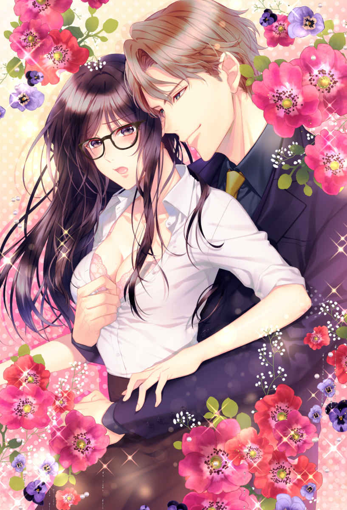
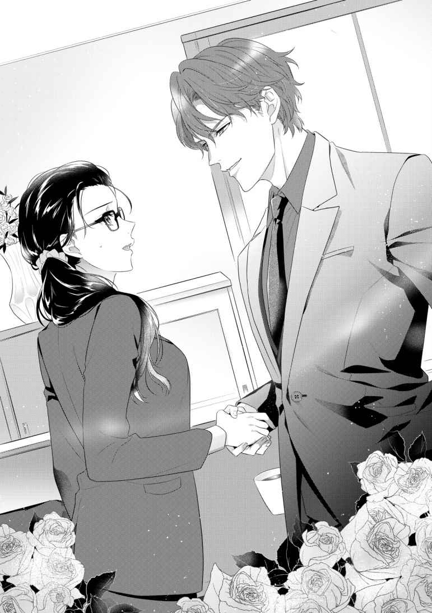
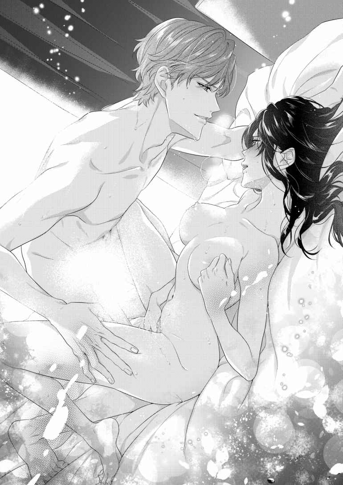
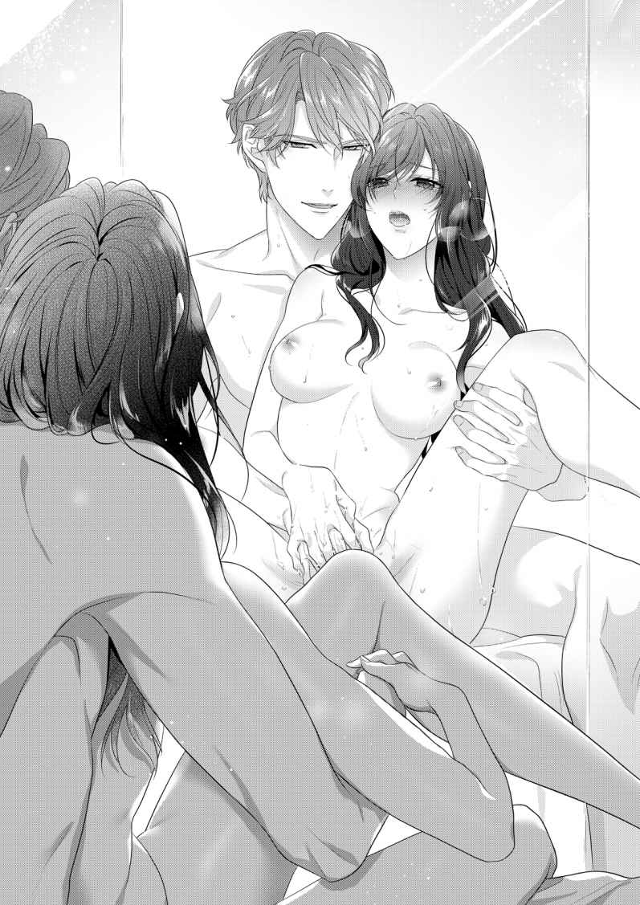
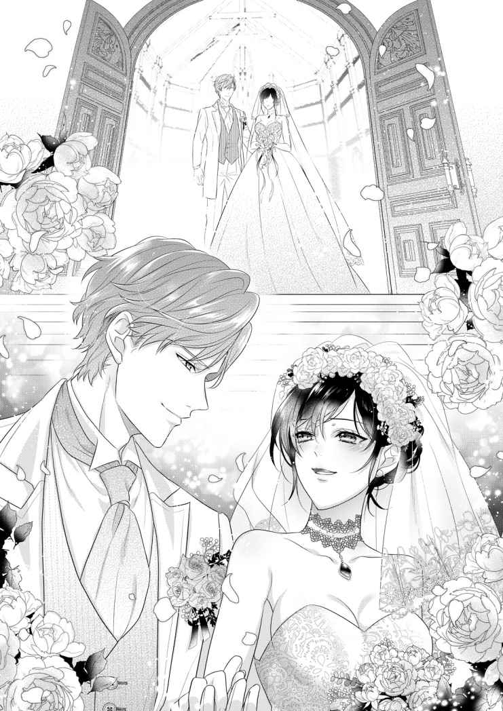

| 【全1-6セット】溺愛ハラスメント【イラスト付】 (チュールキス文庫) | |
| 栢野すばる | |
| 株式会社ジュリアンパブリッシング (2019) | |

この作品はフィクションです。
実際の人物・団体・事件などに一切関係ありません。
プロローグ
神崎 麻子 は、仕事で疲れ果てた身体 を、自室のベッドに横たえていた。
麻子は、若干二十五歳で貧乏な玩具 販売会社の社長を務めている。
重い心臓病の母に代わって会社を引き継いだのだが、母の病は良くならず、会社の業績もどんどん悪くなる一方だ。
今日も今日とて、色々なことに困っていた。
取引先の横暴担当者のセクハラに、山積みの仕事。
いずれも、大学卒業と同時に、右も左も分からないまま社長業をおしつけられた麻子の手にあまる。
最近は母の体調が良くなくて、麻子の心労もピークに達していた。
――あれも、これも、全部今週中にやらなきゃな。
やることリストを頭に思い浮かべ、ため息を吐く。
昔から、気が小さいくせに、色々なことにやたらと気付いてしまう性質だった。
父が早くに亡くなり、母が苦労していたせいで、空気を読む性格になってしまったのだろう。
それに麻子は、『おとなしそうに見えるし、いい体をしている。それに目つきがエロくて俺を誘っていると思った』という理不尽極まりない理由で、これまでの人生において痴漢や変質者、ストーカーに追われまくってきた。だから、警戒心が人一倍強い。
セクハラに遭 いつつお金に苦労する人生なんて、我ながら最悪だと思う。
だが、そういう星の下に生まれついてしまったようだ。
ぱっとしない服装で無駄に育った胸を隠し、化粧も最低限にし、ひたすら地味に徹しているけれど、常に索敵 モードＭＡＸで生きているので、毎日疲れている。
更に言うなら、どんなに地味にしていても、頻繁 に気持ち悪い男に追い回されるのだ。
もはやどうしていいのか分からない。
――あっ、そうだ......来月の商談会のための事前資料も作らなきゃ......。
起きて仕事をしようと思うのに、今日はもう動く気力もない。
こんな夜は、何故か楽しかった昔のことばかりが思い浮かぶ。
例えば、人生の中で唯一輝いていた学生時代の思い出、とか......。
――元気かな、雄 一郎 ......。
麻子の思い出の中には、元恋人の姿がある。
彼の名前は、諫早 雄一郎。
同い年で、高校に入ってすぐに知り合い、やたらと話しかけられるようになった。
そしてしばらく経 った後、『神崎さんは通学中に変な男に会うのが嫌なんでしょ？ じゃあ、俺が電車で送り迎えしてあげる』という申し出を受けた。
あれが実質的な、麻子と雄一郎のなれそめだ。
イケメンで周囲からの人望も厚い雄一郎が、何故必死に地味子に擬態して、痴漢やストーカーから遠ざかろうとしていた麻子にちょっかいを出してきたのかは、よく分からない。
一つ分かったのは『雄一郎の趣味が変わっている』ということだけだ。
だが雄一郎は、『ちょっと人とは違う』部分があるとはいえ、本当に一途 で、麻子には誠実な男だった。
本当に自分で言い出した通り、毎日一緒に登下校してくれたのだ。
普通の高校生男子はそこまでしない。やってくれたとしても最初の一週間くらいで飽きると思っていたのに。
だが、雄一郎は違った。『俺は麻子が痴漢に遭うのは嫌だから』と、三年間、休まずに麻子を送り迎えしてくれたのだ。
『毎日律儀に駅まで迎えに来てくれなくていいのに』
申し訳なくてそう告げた麻子に、雄一郎は言った。
『お前が痴漢に遭うよりいい』
『無理しなくていいよ。雄一郎だって、勉強とか忙しいんだし』
そう答えつつも、麻子も本当は嬉しかった。
毎朝駅に行くと、王子様のような美少年が微笑 みかけてくれる。朝っぱらから麻子に手を出してくる痴漢は、全部雄一郎が捕まえて、駅員に突き出してくれた。
だから、死ぬほど嫌いだった電車通学も大丈夫になった。
ただの女子高生に、あそこまで尽くしてくれる男の子は他にいないと思う。三年間、文字通り毎日、麻子の側 で騎士のように守ってくれたのだから。
送り迎えしてやると言われたときは『本気かな？』と思ったけれど、雄一郎の一途で嘘のない言動に、いつしか麻子の心も打ち解けた。
学生時代、二人で登下校するときはいつも手を繋いで歩いた。幸せな時間だった。
道を歩きながら他愛ない会話を交わし、公園で二人でジュースを飲んだり、お金があるときは、ファーストフードの店でおやつを食べたり......。
特別なことは何もしない、平凡な高校生同士の交際だった。
けれど、そんな風に雄一郎と一緒に過ごした記憶は、全部麻子の宝物だ。
雄一郎といるだけで幸せで、毎日が甘い幸福に輝いて見えた。
だから、雄一郎に釣り合うように、麻子も自分の中身を必死で磨いた。
ずば抜けて優秀な雄一郎の側にいたくて、死に物狂いで勉強し、彼と同じ難関国立の、東都 大学にも合格できた。
けれど、大学に入ってしばらく経つと、少し未来や現実が見え始めた。
――多分、大学を卒業したら、雄一郎と別れないといけないんだろうなって、分かっちゃったし......。
麻子は傍らに置いた携帯を手にする。保存された写真を削除しようとし、今日も途中で手を止めた。
映っているのは、大学を出てすぐの頃の麻子と雄一郎だ。
二人で行った公園で、並んで撮った最後の写真。麻子は地味だが、雄一郎は別世界の王子様のように美しい。
――ホントに......黙っていればいい男。鳥肌立ちそう。
麻子はため息を吐く。
写真の中の雄一郎は、麻子と同じ二十三歳だ。
光の加減で栗色に輝く髪に、滑らかな肌。切れ長の目は優美で自信に満ちている。
出会った頃から背が高かった彼は、大学を卒業する頃には見違えるような逞 しい美青年に成長していた。
――何だかんだで、雄一郎以上にいい男って見たことない。
麻子は天井を見上げたままため息を吐いた。
あんなに純粋に麻子のためを思って行動してくれたのは雄一郎だけだ。
高校三年間、本当に欠かさず電車で送り迎えしてくれた彼に対して、『男の子と付き合うのはまだ早い』と渋い顔だった母ですら、最後は泣いて感謝したほどなのだから。
だが、二人の気持ちがどうであれ、雄一郎との恋に引導が渡される日が来た。
学生の頃は『子供同士の恋愛ごっこ』で許された関係が、社会に出て名前が変わったからだ。『身分違いの恋』と。
雄一郎は、地元一の名門『諫早家』の長男だった。
諫早家は、日本でも指折りの商社『東尋 貿易 』を核とする、一大グループのオーナー一族だ。
一方の麻子の家は、潰れかけの玩具販売会社である。
父は早くに亡くなり、病弱な母がいったん社長業を継いだものの、その地位を大学を出たばかりの麻子に譲り、入退院を繰り返している。
母は、麻子に『会社のことを気にせず、好きな人と幸せになって』と言ってくれるが、麻子は一応跡継ぎだ。
古株である高齢の従業員を見捨てて、一人だけどこかに逃げることはできなかった。
それにそもそも、雄一郎の実家が、麻子など認めてくれなかった。
雄一郎は親を説得すると息巻いていたが、やめてもらった。
父の遺 した会社は守らねばならないし、無理やり結婚しても、その先は誰からも祝福されない茨 の道だ。
何をどうしたところで、名家の御曹司 である雄一郎との交際は、終わりにせねばならない状況だったのだ。
――私って、結構未練がましいな......。私と居たら雄一郎が『本気で何をするか分からない』でしょ。だから、アレで良かったのよ。東尋貿易の御曹司に危ない真似をさせるなんて。
ほろ苦い想いで麻子は口の端を吊り上げた。明日は朝イチから会議だ。
果たして来年まで、麻子が父から継いだ小さな玩具販売会社は存在しているのだろうか。
――うっ、胃が痛い。
麻子はベッドから跳ね起き、いつもの胃薬を流し込む。
恋もない、趣味もない、お金もない。責任と仕事だけは山積みだ。
本当に何の展望もなくて、気分が晴れる日が全くない。
せめて病弱な母だけは、屋根のある場所で守らなければ。
――私の人生、よく分からない苦労が多すぎかも。
麻子は、部屋に置かれた古い鏡を覗き込む。まっすぐな長い黒髪に、黒目がちの大きな目。大好きだった父によく似た顔だ。クールだの喜怒哀楽が薄いだの言われるけれど......苦労しすぎたせいだ。心の中では色々思うところがある。
――ねえお父さん、私、お父さんの会社を何とか守りたいの。だから力を貸してね。従業員の人たち、あの歳じゃ再就職も厳しいから......何とか皆が定年になるまでは。
胸に手を置き、麻子は目を瞑 って、天国の父に語りかけた。もちろん返事はない。
麻子はもう一度携帯を手に取り、雄一郎の画像を眺めた。
何故か今日は、やたらと雄一郎のことを思い出す。
――貴方 が御曹司じゃなきゃ良かったのに。第一、どうして御曹司様が名門私立じゃなくて公立高校に入学したの？ うちの高校になんか来るから......出会っちゃったのよ。
社会に出て『神崎玩具販売』の社長を任されたころから、雄一郎の『恋人』である麻子への風当たりが、とても強くなった。
新卒のひよこ社長である麻子のもとに、様々な投書がされるようになったのだ。
『雄一郎さんに付きまとう邪魔な女がいると聞いたんですが、別れてください』と書かれた差出人のない手紙。
それに、夜道で麻子を待ち伏せし、『君は諫早家の財産狙いの女なんだろう？ 高校時代からつきまとっていたと興信所の人間に聞いた。今も別れたがっている雄一郎さんに泣いて縋って、別れないよう迫っているそうだな？ 恥ずかしくないのか』と詰め寄ってきた、知らない中年男性もいた。おそらく彼は、雄一郎の親戚に雇われた何でも屋かなにかだろう。
彼を取り巻く人々から幾度もぶつけられた不快な言葉を思い出し、麻子は手の甲で目を覆った。
――到底信じられないでしょうけど、私じゃないのよ、付きまとった方は......！
複雑な思いだ。
麻子が泣いて縋って雄一郎に付きまとっていたと思われるなんて。事実は違うのに。
だが、周囲から見たら、そう思われるのも無理はない。
名家の御曹司である美青年が、大人しくて真面目なだけの貧乏女と付き合い続ける理由なんて特にないはずだからだ。
――ほんと、私が悪者、御曹司様のストーカーみたいな扱いだったもんね。
思い出すだけで気が滅入る。雄一郎の親戚だかとりまきだか......よく分からない人たちが何度も家に来て、わきまえろ、別れろと脅されて。
更には、会社を継いで二ヶ月目くらいの、仕事に慣れなくて忙しい麻子の前に『雄一郎の婚約者候補』まで現れたのだ。
彼女の名前は、鮎 原瑞穂 。
この辺では名の知れた旧家のお嬢様で、実家はいくつかのホテルやレストラン、量販店などを経営している。
鮎原家は、東尋貿易とも取引があるらしい。
彼女は、立て続く嫌がらせや、待ち構えている謎の人間たちに疲れ切っていた麻子に、高飛車にこう言い捨てた。
『私は雄一郎さんの婚約者になりたいんです。だけど、貴女 がいる限り、あの人はお見合いすらしてくれないの。だから、貴女に身を引いてほしい。言うことを聞いてくれれば、私の実家でお宅の商品を扱ってあげてもいいです』
当時の麻子の会社は、今よりもっと困窮していた。
だから、会社のために、その提案に乗らざるを得なかった......。
どのみち、雄一郎は一緒にはなれない相手だ。これを機に会社を建て直すしかない。あのときは、そうとしか考えられなかった。
だから雄一郎に告げたのだ。
『家の事情で貴方に迷惑を掛けたくないから、もう別れたい』と。
その言葉に、雄一郎は形の良い眉をひそめて、苦しげにこう答えた。
『別れない」
薄々『うん』と言ってくれないことは察していた。
雄一郎は麻子のことを諦めないのだ。
何があっても絶対に引かない。麻子に食らいついて離れない。
雄一郎は、精悍 で上品な美貌の裏に、激しい執着心を秘めている。
あの執着心がなければ『自分の彼女を、テストの前も雨の日も雪の日も、三年間欠かさず送り迎えする』など不可能だ。
雄一郎の長所は、彼の持つ特異性 と表裏一体の関係にあるものだった。
『人は見かけによらない』とは雄一郎のためにあるような言葉だと、麻子は常々思ってきた。
「本当に迷惑掛けたくないから。申し訳ないと思いながら付き合うのも、心労が半端ないの......私、もう、家のことでいっぱいいっぱいで、ごめんなさい」
これは長期戦になるな、と思いながら、麻子はか細い声で言った。
「俺は、誰に何を言われても、全く迷惑じゃない。有象無象 の意見に耳を貸そうと思ったことはない。麻子も知っての通りだ」
「だから、そうじゃなくて！ 本当に迷惑が掛かっちゃうの......貴方、頭いいんだから分かるでしょう？ うちの会社、本当にお金なくて、ごめん......なさい......」
「理解は出来るし、状況も把握している。だが受け入れない。別れない」
五時間にわたる『別れる』『別れない』の応酬 の末、貧血で座り込んだ麻子を介抱しながら雄一郎は言った。
「じゃあ、俺も少しだけ妥協する。時間は掛かるが、諸々全てをどうにか出来る現金を作って帰ってくる。だから麻子は、他の男と会話以上のことをせず、俺を信じて待っていてくれ。例外として男性医師の診察は許す」
突然斜め上の答えを返され、麻子は目を点にして「あ、うん、いや、そうじゃなくて別れようね......」と答えたような気がする。
解決なんてできないのに。
お互い生まれ変わって、別の人間にでもならない限りは。
東尋貿易の後継者と、いつどこで潰れるか分からない零細 企業 の社長もどき。二人の道が重なり合う日はもう来ないのだ。
「じゃあ、元気でね、さよなら」
「さよならじゃない。俺は麻子のところに帰ってくる」
雄一郎の歪んだ顔が、今でも目に焼き付いている。
彼を深く傷つけたあの時が、人生で一番胸が痛かった。
だけど、平気な顔が出来た。本当に心が痛いときは、笑顔になるのだなと思った。
「会いに来たって、会わないから。貴方からの、電話も取らない......から......」
雄一郎とは、あの日から逢っていない。彼からの連絡もなかった。
多分あの後、雄一郎も目が覚めたのだろう。
恋愛と結婚は別物だ、と理解したに違いない。
麻子はその日から『雄一郎様の婚約者』である瑞穂に命綱を握られて、馬車馬のように働き続けている。
――中途半端な別れ方をしたから良くなかったんだろうな。今も、あの人に未練があるのはそのせいだ。
力強い笑い声も透き通るような微笑みも、映画俳優も顔負けの美貌も、大きな温かい手も、麻子を優しく組み敷いた逞しい身体も、全部忘れられない。
麻子にとっては、彼だけが、思っていることを全部言える相手だった。
相性が良かったのだろう、とても。あれ以上一緒にいたら危なかった。そうでなくても、心身共にべったりくっつき合って、離れられなくなっていたから。
――忘れたい。忘れよう。私はもう、忘れた......！
初恋なんて早く忘れてしまいたいと思いつつ、麻子はぼんやりと目を閉じた。
雄一郎が目の前に現れて『本当に迎えに来たぞ』と言ってくれる。
そんな妄想を何度したことだろう。
だがそれは、あり得ないことだ。雄一郎とは、もう三年も会っていない。その間に携帯電話を替え、メールアドレスも変更して、連絡は取れない状態になった。
彼が麻子の前に現れることなんて、きっとない。
でも、それでいいのだ。
麻子の側にいたら、雄一郎は何をしでかすか 分からないから。
――会いたいなんて......思わないわ。お互いのためにその方がいい。
奇跡は起きないと知っている。
だから麻子は、ぼんやりと写真を眺め、過去の恋を反芻 しているだけだ。
――あんなに人を傷つけたのは、人生で一度きりだなぁ......。
別れを告げたときの雄一郎の目が、やはりどうしても忘れられない。
いい加減、初恋の元カレなんてすっきり忘れたいと思いながら、麻子は掌で目を覆った。何故自分は涙を流しているのだろうと思いながら。
第一章 王様リターンズ。
麻子の朝は、たいていトラブルから始まる。
別に望んでトラブルから始めているわけではないのだが、最近多すぎる。
会社が上手くいっていないうえ、従業員が人のいいおじいさんばかりだと、どうしても、こう、無理難題が持ち込まれがちなのだ。
「鮎原デパートから、注文しすぎたって突っ返されちゃって......」
「えっ、それ鮎原デパートの専売品なのに。困ったな」
麻子はリストを一瞥 し、眉をひそめる。
鮎原デパートは、『雄一郎から離れる代わり』に、麻子の会社の商品を少量ではあるが扱ってくれることになった、瑞穂の父の会社だ。
麻子の会社......神崎玩具販売が絶対に強く出られないのをいいことに、時々とんでもないミスを押し付けてくる。
『鮎原デパート限定色』と書かれたウマの人形を思い浮かべ、麻子はこめかみを押さえた。
頭が痛い。
これは、麻子の会社で一番売れている商品だ。
社長だった母が倒れる前から交渉を重ね、ようやくライセンス契約に結びつけた北欧の玩具ブランドの特注品である。
限定色は、メーカーに特別ロットで作ってもらうので、他の色よりも原価が高い。
――だから何回も確認したのに！ こんなに数が必要なんですか、って。
怒りに拳を握りつつ、困り果てた顔の事務員さんに麻子は微笑みかけた。
「とりあえず、追加納品させてもらえないか交渉しますね」
鮎原デパートは、本気で麻子を軽んじている。
経営者のお嬢様が麻子に対して無礼な言動を繰り返し、担当者との交渉の場にまでやってきて麻子を侮辱したせいか、最近は担当者まで麻子を軽んじるようになった。
ミスなんて出入りの零細企業に押し付ければいい。そんな態度が垣間見える。
『うちはいつお宅を切ってもいいんだけど。なんなら俺とＨしてくれる？ そのエロいおっぱい揉ませてくれたらちょっとは考えてもいいよ』
セクハラで訴えますよ、と言っても、相手はやめない。
『お宅がトラブルを起こしたって俺が言えば、取引なんて即停止に出来るんだからな』
電話口で喚 き散らされて、何度心折れたことだろう。
この担当者......風間 は、鮎原デパートのコネ採用者で、他でも問題を起こしているけれど、絶対にクビにならないらしい。
そもそも電話口で、取引先の女性社員に対して『Ｈさせろ』なんて口走っている同僚を誰も止めないのだ。
そういう風土の職場なのだろう。自浄作用は見込めない。
――私の周囲、変な人が集まりすぎ......。あとこの風間って担当者、既婚者のくせに気持ち悪すぎる！
吐き捨てるような言葉にももう慣れたが、ストレスがたまる一方だ。
――とにかく、あれは鮎原デパートさんの限定色だから、うちが独自にネットで売るわけにもいかないし。いや、ここはごり押しで『通販でも扱いを開始しました！』って売らせてもらうしかない。この在庫抱えたら、完全に足が出る。
「とりあえず、今日は鮎原デパートの担当者さんが不在なので、月曜に調整しま......あっ」
電話が叩き切られてしまった。麻子はため息をついて、一度事務室を出た。
――顔洗ってこよう。頭、冷やそう......。
そのまま、女子トイレに向かった。
麻子はすっぴん同然の顔で会社に来ている。
昔から化粧気なしだ。何もしなくても変わらない顔だと言われる。
長い髪は一つにひっつめ、高校の頃から愛用している伊達 眼鏡 を装着しているだけだ。
口にも目にも頬にも一切色はのせていない。
誰から見ても、胸回りだけあるモッサリした顔色の悪い女にしか見えない。
『他の男と会話以上のことをせず俺を待っていろ』
雄一郎の言葉を思い出し、麻子は目を瞑って、彼の思い出を頭の片隅に押しやる。
――べ、別に、雄一郎に義理立てしてるわけじゃないんだから。
古びた洗面台でバシャバシャと顔を洗い、家から持参しているタオルで顔を拭って、前髪を留めていたピンを外す。
――よし、今日も無茶ぶりやゴリ押しと戦うぞ......。
全く盛り上がらない。テンション最悪なまま、麻子は鏡の向こうの自分に向けて、気合いを入れる。そうやって、気の重い交渉を覚悟したときだった。
「社長さん！」
父が存命の頃から勤めてくれている専務の中山 が、事務室に駆け込んできた。
祖父、父、母、麻子と、四代の社長を知っている中山は、この会社の生き字引だ。
「あ、あの、お客さんが来て、俳優さんかと思ったけど、あの」
中山も相当疲れているようだ。俳優など玩具会社に来るわけがない。
「どうしたんですか、中山さん......」
普段落ち着いた白髪の紳士が、いつになく焦っている。
またもや問題が起きたのかと思った刹那 、胃が痛くなった。神経性の胃痛だ。
「お客さんの予定はなかったと思いますけど......どなたでしょうか？」
「えっと、あっ、いただいた名刺置いてきちゃった！ うちの会社のことで話があるって。そうそう、東尋貿易の名刺頂きましたよ？」
東尋貿易は、雄一郎の実家の会社だ。日本でも指折りの商社で、麻子の『神崎玩具販売』とは縁のない超一流企業である。
――どういうことかしら......うちの資本金じゃ、東尋貿易と取引なんて出来ないのに。
頭から湯気が出るほど動揺している中山に休んでいるように言い、麻子は応接室へ向かった。
ふと、懐かしい香りが漂った気がする。強 ばっていた身体が一瞬和らいだ。
――あれ、どこで嗅いだのかな、この匂い。
何故懐かしく感じたのだろう。不思議に思いつつ、麻子は応接室の扉をノックする。
「失礼します」
扉を開けた麻子の目に、スーツ姿の男の姿が飛び込んできた。
ひと言で言えば、男らしく、光り輝くように華やかな印象の男だ。
光の加減で栗色に見える艶 やかな髪を撫でつけ、引き締まった見事な体躯 を上質なスーツに包んだ姿は、映画のスクリーンから抜け出してきたかのように美しい。
こんな男が歩いていたら、誰もが足を止めて振り返るに違いない。
王者のようなオーラが、彼の全身を包んでいるのが分かる。
その男の姿を見た瞬間、麻子はかすかに口を開けた。
「雄......一郎......」
記憶よりもはるかに男らしさを増した雄一郎の姿がそこにはあった。
なるほど、中山が動転するのも無理はない。突然こんな華やかな美青年が超一流企業の名刺を持って訪れてきたら、いったい何事だと思うだろう。
優雅な仕草で立ち上がった雄一郎が、麻子に向かって片手を差し出す。
「久しぶり、麻子」
「え、ええ......お久しぶり......です......諫早さん......」
大きな掌の感触に、一瞬だけ身体が震える。意外と忘れないものだ、好きだった男の手触りは。
「あの、今日はどのようなご用件で」
何故か握手のあと、手を離してもらえない。ぎゅっと手を握られたまま、戸惑いつつ麻子は尋ねた。
「十億貯めて帰ってきた」
「えっ、何の話でしょうか......？」

聞き間違い......だろうか。話についていけず、麻子は反射的に尋ね返す。
やや色の薄い瞳で麻子を見据え、雄一郎が繰り返す。
「あの日の約束通り、アメリカで鬼のように働いて、個人財産を十億貯めてきた。新卒のガキがここまで来るのに、どれだけ苦労したと思う？」
「え、と、約束なんて......しましたか？」
本気で覚えがなく、麻子は小声で問い返す。
「したはずだ」
低く艶のある声で、雄一郎が断言した。
だが、やはり何のことか分からない。というか、そんな約束をした覚えは全くない。
落ち着かなくてそわそわしてきた。
何か言わなければ。何かを......雄一郎の榛 色 の瞳に見据えられているうちに、どくん、どくんと心臓の鼓動が早くなる。まるで、まなざしに射貫かれ、せき立てられているかのようだ。
覚えている。彼のこの視線は毎度麻子を狂わせてきた。抵抗しても、最後には毎回屈服してしまう。麻子はぎゅっと目を瞑り、ゆっくりと口を開いた。
「忘れたわ」
自分の声とも思えない、冷淡かつ見下すような声音だった。
――わぁぁ......また、やってしまった......！
頭を抱え込みたくなる。
自分の口から出た台詞 におろおろしながら、麻子は体勢を立て直すために背筋を伸ばす。
――ち、違う......もっとまともに社会人らしく！ 常識の範囲内で『申し訳ないですがお引き取りください』と言わねば！
麻子は意を決して慎重に口を開いた。
「貴方なんて呼んでないわ。帰りなさい」
――違うから！ 全然違うから！ どうしてこうなるの！
気付けば、麻子はまたしても雄一郎に呆 れ果てたような口調で、ひどい言葉を投げかけていた。本音だとしても、こんな台詞を普通の人は言わない。麻子も、通常は 、言わない......雄一郎の前以外では。
――い、いけない、元カレとはいえ、今は東尋貿易の重役......なのよね？ 確か。我慢しなきゃ、我慢を......！
慌てて口をつぐんだ麻子に、不意に雄一郎が微笑みかけた。
どくん、と心臓が高鳴る。規格外イケメンの突然の笑顔なんて反則すぎる、と思った。
「あいかわらず、最高の切れ味だ」
雄一郎が、麻子の手を掴んだままの指先に力を込める。
「俺は麻子の冷たい声と、蔑 むような視線が忘れられなかった」
榛色の瞳に蕩 けるような光を浮かべ、雄一郎が微笑んだ。
最高に気持ちよさそうだ。
そう、彼は出会ったときからちょっと人とは違う 男だった。
彼は麻子が知る限り、非常に限定的な意味で『史上最強のどＭ』なのだ。気に入った女、つまり麻子を自分の女王様に据え、いじめられるのが最高の幸せらしい。
だから麻子がひどい言葉を投げつけるほど、嬉しそうな顔をする。
――だからといって、元カレを喜ばせる義理など私にはないわ。
麻子は、雄一郎から顔を背け、歯を食いしばった。雄一郎の目を見ては駄目だ。彼のきらめく双眸 に見つめられると麻子の頭がおかしくなる。
謎のスイッチが入って、雄一郎を罵 るために口が勝手に動いてしまうのだ。
――何なの......相変わらずの意味不明なパワーが溢れる目......ホントに、何なの......！
雄一郎に流されないよう、麻子は拳を握りしめた。
「気持ち悪い人」
再び、自分の口から正直かつ、とんでもない台詞が出てくる。
何故、雄一郎の力に溢れたまなざしに晒されると、こんな風になってしまうのだろう。
――ま、待って、五秒考えてから喋 ろう。私......どうしよう、これじゃ、付き合っていた頃の二の舞だから。
麻子の鼓動がますます速まった。
落ち着きを失った麻子に、雄一郎の視線が注がれる。
刃物のような鋭さと、砂糖のような甘さの両方を兼ね備えたまなざしだ。
やはり、彼以上に美しく自信に満ちあふれた男は見たことがない。
――駄目......雄一郎に取り込まれちゃ駄目......！
「気持ち悪い......か、ははっ......たまらないな、他には？」
五秒我慢して、麻子は口を開いた。
「ないのでお引き取りください」
三年という時間をおいても、何の効果もなかったようだ。昔同様におかしくなる。
冷淡な気持ちがすーっと湧いてきて、ひどい言葉があっさり口から出てくる。
そして、麻子自身も、雄一郎に言いたい放題できることに、かすかな快感を覚えているのだ。あまり認めたくはないけれど。
「本当は俺と居たいくせに。だが若干本気っぽいところがたまらないな。それで？」
雄一郎の言葉を聞いた瞬間、唐突に彼との会話がどうでもよくなり、コーヒーを買いに行きたくなった。
雄一郎のお望み通り、放置してあげたい。......いや、何故彼を放置することを『お望み通り』だと思うのだろうか。もう駄目だ。完全に雄一郎の術中に嵌 まってきた気がする。
「相変わらず、独りよがりがすごいのね」
――やはり、黙れません。はい。昔と同じです......。
麻子の全身から変な汗が噴き出す。
断じて言うが、他の人にはこんな口を利いたことはないのだ、ただの一度も。こんな風に冷たい気持ちになることもない。
――どうしてこうなるの、雄一郎の謎のオーラかフェロモンか、とにかく何かが私をおかしく......っ......！
麻子が唇を噛んだ刹那、雄一郎の腕が、麻子の身体をぐいと抱きしめた。
驚きのあまり息が止まりそうになる。
三年ぶりの抱擁 に、頭の中は真っ白になった。
力強い腕に厚い胸。
百六十センチの麻子より二十センチ高い位置から、雄一郎が甘い声で囁 いた。
「その罵り言葉を聞くために十億稼いだんだ。ただいま、麻子。俺をこれからも優しく罵ってくれ、その綺麗 な声で」
絶句する麻子の耳に形の良い唇を近づけ、雄一郎が信じられない言葉を放った。
「お前と会社の借金は、全部俺が返してやる」
「はい？」
雄一郎が口にしたのは日本語だったが、全く内容を理解できなかった。
「返してやるよ、会社の借金千二百七十五万と、お前の母親の保険適用外医療費のローンを二百七十三万」
理解の範疇 を超える言葉に、変な笑いが込み上げてきた。
そう。
――雄一郎は、私のためなら、何でもする......。
麻子の身体に、うっすらと冷や汗が滲 む。彼が『麻子のため』にしてくれた様々な『親切』が記憶に蘇り、身体がかすかに震えた。
――駄目よ、この人の話を聞いては......！
逞しい腕から抜け出し、麻子は雄一郎に告げた。
「頼んでないわ」
「いいな、その舌打ちせんばかりの顔つき。最高だな」
「どうして私の借金の正確な額を知っているのよ？」
「非合法に調べた。俺のコネを舐めるな」
麻子はめまいを堪 え、雄一郎をにらみつけた。
「ああ、その氷のような目がたまらない......お前の借金は俺が返したいから返す。それでいいな？ 以上だ。抗議は受け付けない」
「雄一郎、貴方ね......そういう自分勝手なところ、おかしいって言われない？」
麻子の氷のような声に、雄一郎が笑顔で頷いた。
精悍な頬が、ほんのり赤く染まっている。
「お前以外には言われない。この俺が他人ごときに見下されてたまるか。愛してる、麻子。俺を罵り、見下していいのはお前だけ。俺の顔面に座っていいのもお前だけだからな？」
麻子の胸に何とも言えないキラキラした甘い光が広がった。
「......座らないわよ。さりげなく気持ち悪いおねだりを交ぜないで」
「お前のその声が聞きたかったんだ、俺は」
麻子の鼓動が速くなる。もっとだ、もっと雄一郎が喜ぶような罵倒 を並べ立てなくては。意地悪こそ、どＭな彼が求めているモノなのだから。
――って、違う！ 私は雄一郎と精神的ＳＭ関係を結ぶつもりはもうない。この人にめちゃくちゃな真似を許すつもりもないわ！
麻子は、慌てて思いを断ち切り、口を開いた。
「どうでもいいわ。興味ないから」
「......可愛 いヤツだ」
雄一郎が麻子の手を取り、指先にキスをした。
昔より、はるかに自信と色香を増した鋭い眼光に見据えられ、麻子の身体がぞくりと震える。
麻子の脳裏に、雄一郎との過去が鮮やかに蘇った。
広い公園で二人寄り添い、お互いの温もりを確かめながら、麻子が一方的に雄一郎を罵っていた時間。
あの頃は、傍 から見たら仲の良い学生カップルだったと思う。
二人きりの世界で過ごせることが、何よりも幸せだった。
――って、バカバカ、駄目、思い出すな......通りすがりの人にギョッとされて『女王様と犬なんですか？』って聞かれるような男女交際は絶対アレなんだから......ッ！
麻子は思い切り息を吸い、雄一郎の手を振り払った。
とにかくこの美しい男の申し出は突っぱねなければ。強引な彼に押し切られては駄目だ。
「帰って。お金のことは、貴方が心配してくださらなくて結構です！ 仕事があるので、本当に帰って下さい！」
「そうか、じゃあ今のところは引き下がろう」
「もう来なくていいからね？」
嫌な雰囲気を察して、麻子は釘を刺す。来るな、もう来るな、と念じる麻子に、雄一郎は優雅な微笑みを浮かべて告げた。
「ではまた、後日」
――はぁ......急に雄一郎が来るからびっくりしたじゃないの......。
麻子は一日の仕事を終え、とぼとぼと帰途に就いた。雄一郎が素直に帰ってくれて、本当に良かった。三日くらい居座られるのではないかと内心危惧していたからだ。
――あんなしつこい人、私じゃ追い返せない......というか、この世の誰にも、追い返せない気がする......。
そもそも麻子は、雄一郎に対して『出て行け』などと頭ごなしに言う人間を見たことがない。
もしも雄一郎がどこかに不法侵入したとしても、皆、彼を来賓 だと思い、頭を下げるだろう。
何故、あんなにも偉そうに見えるのか。尋常でないほどの自信に満ちあふれているからだろうか。
麻子はため息を吐いた。
再会できて嬉しかった、なんて絶対に認めたくない。
あの人は『元カレ』であり、今は『赤の他人』だ。それ以上はない、絶対に。
――というか、私の借金を勝手に返すってどういうこと？ 訳分からない真似はもうやめてほしい、本当に、疲れるから。もう貴方を振りたくないんだよ、あんなに哀しい顔をさせたくないんだってば、私だって......。
交際時、楽しかった半面、散々振り回されたことを思い出し、麻子は再びため息を吐いた。
雄一郎は、良くも悪くも『王様』だ。
裸の、ではない。容姿能力家柄ともに本物の『王様』である。
他人には迎合しないし、愛想も振りまかない。
自分のやりたいことはやり抜いて、欲しいものは手に入れる。
『この罵り言葉を聞くために十億稼いだんだ。ただいま、麻子。俺をこれからも優しく罵ってくれ、その綺麗な声で』
雄一郎が甘い声で囁いた、ろくでもない言葉を思い出す。
――まさか別れ際の『さよならじゃない。俺は麻子のところに帰ってくる』って言葉、まだ有効なの......？ あれ何年前の話なのよ。本当に、どういうこと？
一瞬胸がきゅん......となったが、慌てて振り払う。
もう彼に関わっては駄目だ。あの嵐のような男に巻き込まれては、絶対に駄目だ。
どれほど『また雄一郎に会いたい』と願っていたとしても、その想いは麻子の心の内に留めなければ。
この気持ちを雄一郎に知られては駄目だ。彼を受け入れてはいけない。
――忘れる、忘れる......と。よし。私は雄一郎に未練なんかありません......！
夜道で深呼吸したらちょっと頭が冷えてきた。
明日は土曜だが、ため込んだ家事と、貿易事務をはじめとする仕事関連の勉強をしなければならない。午後は腰痛緩和のための整体に行こうと思っている。
完全に社畜のメンテナンスのための休日だ。
――疲れた......だけど、社長である以上、会社の業績不振は直接私の負債になっちゃうし......ううっ......本当に人生詰んでる。
胃が痛くなる。年老いた五名ほどの従業員と、少子化でそんなに売れない輸入玩具と、高圧的な取引先と、病気の母。
麻子一人で抱え込むには全部重たい。
だが、何とか、皆の定年までは会社を保 たせないといけない。
だが、このまま頑張ったとして、麻子の明日はどこにあるのだろう。
――この家も売りたいけど......思い出の残るこの家を売ったら、お母さんの病気が悪化しそうで怖いし。
父が健在だった頃に購入した一戸建ては、ひとり暮らしの麻子には広すぎるし、固定資産税も馬鹿にならない。
だが、母はこの家に戻ることを目標に病気と闘っている。だから、手放すのは気が引けるのだ。
――お風呂入ろう......一度横になったらそのまま寝ちゃいそう。
麻子は自室に向かう途中で進路を変え、お風呂場に直行した。洗濯物もたまっているし、明日早く起きて洗おう。
そう思いながら服を脱ぎ捨て、シャワーを浴び、ひとしきりボディケアにいそしんだ後にお風呂を出た。
お風呂上がりの自分は好きだ。
安物のスーツと伊達眼鏡で押し込めていない、のびのびした本来の姿だから。
――ん？ 今何か音が聞こえたような。
麻子は眉をひそめ、ドライヤーを止める。聞こえてきたのは、チャイムの音だった。
今は十二時過ぎのはず......と思った瞬間、恐怖で身体が強ばる。こんな時間に人が訪ねてくるなんてあり得ない。
――ま、ま、また新たなストーカーが現れたの？
これまでの人生で、麻子に付きまとった男は十指に余る。最後にストーカーが現れたのは二年前。麻子と結婚すると言いながら会社に侵入してきた取引先の社長の息子は、事務所で大暴れし、警察に回収された後、両親に連れられて海外に連行されたはずだ。
ストーカー本人はアレだったが、両親はまともな人で、息子は一生野放しにしないと約束してくれた。
もしかして別の変な男が、麻子に付きまとい始めたのだろうか。
とっさに、家の構造を思い浮かべる。ひとり暮らしなので雨戸を閉め切りにしているけれど、誰かが本気で侵入してこようとした場合、ちゃんと防ぎきれるだろうか。閉め忘れた扉はないかと、麻子は震えながらあれこれ思い浮かべる。
――何で、やだ、誰......？
麻子は足音を忍ばせて洗面所を出て、手早く部屋着に着替えて、濡れた顔のままそっと玄関へ向かう。
再びチャイムが鳴った。
先ほど、一度目が鳴ってから大分時間が経っているのに、まだ『誰か』は玄関にいるのだ。
心臓がばくばく言いだした。
怖い。麻子は廊下に置きっぱなしにしていたバッグから携帯を取り出し、いつでも警察に通報できるよう準備をして、玄関の前に立った。
細心の注意を払ってのぞき穴を覗こうとした瞬間、携帯が小さな音を立てて鳴る。
――ひぃっ！ どうして今鳴るのよ......！
焦った麻子の耳に、ドアの外から、かすかな呼び出し音が聞こえてきた。
――え......外の人が......私に電話......かけてるの......？
訳が分からず、麻子は着信を切り、のぞき穴から様子を窺った。
そして、絶句する。
――何で......？
何故なら、そこに立っていたのは、雄一郎だったからだ。
麻子は慌てて玄関の扉を開ける。
「ちょっ......貴方、何して......」
「何してる、じゃない。見ての通り、お前に会いに来た」
短く言われて麻子は絶句する。
「ついさっき来たばっかりじゃないのっ......！ どうして......？」
「もう翌日だ。何か問題が？」
「半日しか経ってないでしょうが！ しかももう夜中よ？ 訪問時間は常識的に考えて？」
「お前は俺に常識があるとでも思ったのか？」
「い、いや、そんなことはさすがに......ないけど......」
なんと言い返そうと思いつつ、麻子は俯 いて口を開いた。
「......困るんですけど、こんな時間に来られても」
「会いたかったんだ、構わないだろう？」
さらりと言いきる顔は、相変わらず腹が立つほど美しい。
――ぐぬぬ......勝手なことを......。
この榛色の目に見据えられたら、何を言ってしまうか分からない。高校の頃からずっとそうだった......だから、早く彼から遠ざからなければ。
「おばさんはまた入院中なのか？」
静かに尋ねられ、麻子は躊躇 った末に頷いた。雄一郎がそうか、と呟いて目を伏せる。
「今度見舞いに行ってくる。久しぶりだからな。おばさん、今は何か食べられるのか？」
「ええ......お菓子とかなら、ちょっと喜んで食べてくれる」
雄一郎は麻子の母と仲が良かったのだ。
母は『雄君なら麻子のことを守ってくれる』と全幅 の信頼を置いていた。
――気は......合うんだけど......親に言えるような関係じゃないからなぁ......。
まさか『雄一郎と一緒にいると謎のドＳモードが発動して自分でもびっくりの女王様に変身してしまいます』なんて、親に言えるわけがない。言っていたらさすがに母も雄一郎との交際を止めただろう。
「病院は前と同じところか？」
麻子は雄一郎から目をそらし、出来るだけ冷たい声で答えた。
「そうよ、同じ病院。そんなことより、いきなり夜中に来るの、怖いからやめて」
「何度電話しても返事がないからだ」
「あ......」
麻子は手元の携帯を確認した。確かに何度も着信がある。知らない番号だ。疲れ切っていて、鞄の中で小音量の着信があっても気がつかなかったのだろう。
「ご、ごめんなさい......気付かなかった......っていうか、何で私の携帯の新しい電話番号を知ってるの？」
「俺は、お前のことなら何でも知ってるんだよ」
雄一郎の口から出たのでなければ、甘くて素敵な台詞だと思った。間違いなく、麻子にはよく分からない裏の手段で番号を入手したのだ。
変な汗をかきながら、麻子は曖昧に「そっか」と答えた。
「まあいい。今から俺の家に来い」
――何の......話......？
濡れた頭のままフリーズした麻子に、雄一郎がたたみかける。
「そんなやつれ果てた顔で『一人で頑張ってるから大丈夫』と言われても信憑性 がなくてな。俺がいない間、辛い思いをさせて悪かったな」
「......もう私、高校生じゃないし、痴漢くらい撃退できるんですけど」
確かに学生の頃は、強い雄一郎に頼りきりだった面も否めない。高校の制服を着ているだけで嗜虐性 をむき出しにしてくる変質者は大勢いたから......。
だが、雄一郎と別れて、麻子も強くなった。捕まえた痴漢がどんなにしらを切ろうと、何が何でも駅員に突き出すし、取り押さえの段階で怪我をさせられたら、絶対に警察沙汰にしている。相手に家族があろうが有名な会社に勤めていようが、痴漢くらい大目に見ろと脅されようが、絶対に許さない。
戦う気概を漲 らせているお陰で、地下鉄で痴漢に遭う回数も減った。月に五度くらいしか遭わなくなった。友人には『それでも多すぎ』『何故そんなに変な男に好かれるの？』と呆れられているのだが。
取引先からのパワハラだって、何とか耐え抜いている。
「気遣っていただかなくて結構よ。貴方に守ってもらういわれなんて、もうないし」
強気の台詞ではね除けた刹那、雄一郎が扉の隙間に肩を割り込ませ、玄関に踏み込んできた。顔を背 け続ける麻子の顎を大きな手が捕らえる。
「では言い方を変えよう。俺はお前に必要とされたいし、昔のように愛されたい。役に立つ番犬であることを示したい。......理由はお前に惚れているからだ。わざわざ言わせるな、こんな当たり前のことを」
ストレートすぎる言葉に、麻子の心臓がどくんと音を立てる。駄目だ、動揺してはいけない。麻子は可能な限り冷たい声で、雄一郎に言い返した。
無理矢理雄一郎の方を向かされ、麻子は彼の目を見ないように必死に目をそらした。
「も、もう、別れて、三年経ってます......けど......？」
「だが愛している。愛しているから、三年前と変わらない気持ちでここに戻ってきた」
――だから、そういうのやめてって......っ！
ここぞというとき、余計なことを一切言わないのは相変わらずだ。ここで麻子がグダグダになったが最後、心の防衛ラインなど、簡単に突破されてしまう。
雄一郎は馬鹿ではない。下手な言い訳など通じない。
「何を照れてるんだ？ 可愛いな。ダーリンが久しぶりに帰ってきて嬉しいのか？」
――待って......ダーリンじゃ......ないから！ 別れたからっ！
思わず雄一郎の目を見そうになった。だが、駄目だ。一度、このモードになった彼の目を見たが最後......。麻子は必死に斜め下に視線を固定する。
「何が面白くないんだ。俺は会いたかったぞ？ お前の貧乏に対する解決策を携えて帰って来るから、医者以外の男に触らせずに俺を待っていろと約束したのに」
「そんな約束、おぼえて......ません......」
異様な引力を感じつつ、麻子は目を背け続ける。
「覚えてない？ そんなはずはない。麻子は毎夜、俺のことを思い出してはため息を吐いていたはずだ」
雄一郎の言葉に、麻子はぎくりと身体を揺らした。
彼の言う通りだからだ。
疲れ果ててベッドに寝そべると、思い出すのは雄一郎と過ごした日々のことばかりだった......情けないことに、ほぼ毎晩、そうだった。
「何よ......自信満々なのね......」
「俺も同じ気持ちだったからだ。俺と麻子は一心同体、離れていても変わらない。そうだろう？」
雄一郎の言葉に、麻子の胸がずきんと疼 いた。
――俺も同じ気持ちだったなんて、言わないでよ......。
だが、頷いては駄目だ。
この男に引き込まれたら、本当にまた離れられなくなる。
麻子はもがきながら消えていく貧乏人で、雄一郎は、違う。
将来を嘱望 された名門の御曹司、しかも跡継ぎ長男で、本人の資質もずば抜けている。変態だが。
だから自分に執着などせず、目を覚ましてほしいと思っていた。
『私のために、手を汚さないでほしい』と願っていた。
――人が何のために身を引いたと......。
きりきりと心が痛んだ。雄一郎を振った時の悲しさが生々しく蘇ったからだ。
俯く麻子に、雄一郎が言う。
「月曜の朝一で弁護士と一緒にお前の会社に行く。とりあえずお前の『神崎玩具販売』を買うために諸条件を纏めよう。資金は俺の個人資産だが......それで足りるだろう。あとはおばさんの医療費だな。立て替えてやるからお前の罵倒で返してくれ」
「最後、意味が分かりません」
「お前に罵倒されることが俺の報酬だ。それで、俺への借金を返せと言っている」
「......本当に......意味が......」
かろうじて雄一郎の目を見ずに、麻子は答えた。
めまいがする。
また始まった。『俺が麻子を助ける』というピュアな愛情に基づいた、雄一郎のとんでもない『暴走』が......。
「お前の会社を俺が買ったら、俺がお前の上司だ。業務命令として、たまには俺の言うことも聞いたらどうだ？」
どんどん麻子の鼓動が大きくなっていく。
雄一郎が側にいる時点で駄目だ。
自分の気持ちが悟られてしまいそうで......駄目だ。
麻子は下を向いたまま、雄一郎の胸を懸命に押した。だが、力で敵 うはずもない。
「帰って！ そういう、人が嫌がることを強要するのハラスメントって言うんだから......っ、変態すぎるのも、いい加減に......」
言いかけた麻子はハッとして口を覆った。目を見ていなくても駄目だ。雄一郎から漂う得体の知れないオーラに呑み込まれる。口が今、勝手に彼を......。
雄一郎の大きな手が強引に麻子の顔を上向かせる。
身長差はぴったり二十センチ。すぐ側に、ぞっとするほど整った雄一郎の顔がある。
麻子の視線が、操られるように雄一郎の榛色の瞳に吸い寄せられた。
「ハラスメント......か......ふん」
雄一郎の唇が、弓形にきゅっと持ち上がる。低い声が、麻子の肌を震わせる。
「最高の罵り言葉だ。俺に無理矢理嫌 なことをされる麻子、俺に向けられる軽蔑のまなざし......なるほど、かなり興奮する」
「やめ......だめ......っ、離して......っ」
逞しい腕が麻子を抱き寄せ、厚い胸に押し付けた。
「相変わらず、エロい声だな。俺の前以外で色気を垂れ流すなよ？」
――わ、私は、エロい声なんて出した覚えはない......ッ！
息を止めた麻子の耳たぶを噛み、雄一郎が笑い混じりの声で問いかける。
「それで、他には？ 突然家に来るストーカー最低とか、勝手に借金返そうとするのキモいとか、あんたが上司になったら雑巾絞った水飲ませてやるとか......さあ、思うがままに俺を罵れ」
「どうしてそんなに、すぐ出てくるの、罵倒の言葉が......っ！ 普段から言われたいことをコレクションしてるんでしょ、この変態！」
「なるほど、まだ俺に惚れてるな、いい感じだ」
「えっ......どうしてそんな結論になるの、変だよ......」
「何故だ？ 何も変じゃない。お前は今でも俺のことを完璧に理解している。つまり、まだ俺を愛しているということだ、そうだろう？」
自信に満ちあふれた雄一郎の言葉に、麻子は唇を噛みしめた。
その通りだ。麻子だって......まだ好きだ。触れられるたびに心が揺れて仕方がない。だが麻子は懸命に、最後の理性で雄一郎を押しのけようとした。
「ち......ちがう......から......！」
麻子は震える手で、もう一度雄一郎の胸の辺りを叩く。
全く力が入らない。
ぽすん、という軽い音しか聞こえない。
いくら言葉で責め立てようとも、雄一郎を殴りたいと思ったことなど一度もないからだ。
苦しい。辛い。本当は会いたかったと言って、抱きしめ返したいのに。
「帰って......っ......馬鹿......っ......」
心の底で焦がれ続けていた腕に抱かれ、麻子の目から涙が一粒こぼれ落ちた。
「全部貴方が自分で言ってる通りよ。このセクハラ上司候補！」
「もっとだ」
誘うような声に、麻子の心が震える。
「喋るの面倒。自分で罵り言葉を考えて紙に書いて貼っておけば？ 貴方なら、それを見て一人で興奮できるんじゃないかしら」
「それから？」
「......もう疲れたから、おしゃべりは終わりよ」
雄一郎を罵れば罵るほど、心に甘い何かが湧き上がる。
昔から、彼とぴったり寄り添っていると、同じ温もりに包まれた一つの塊になってしまうような気がする。
一度身を寄せ合ったが最後、もう離れられなくなる。
引き締まった胸に素直にもたれ掛かったまま、麻子はもうひと言付け加えた。
「......帰って」
麻子を抱く力を緩めず、雄一郎が笑う。
「俺が帰らないのを知っていて、そう言うんだろう？ 麻子は、どれだけ言いたいことを言っても、俺が絶対に離れていかないことを知っている。俺の愛と忠誠を信じ切っているお前が愛 しくてたまらない。俺も同じだ。お前への気持ちは昔から変わらない。俺の頭がどんなにイカレていても、お前は俺から離れていかない」
麻子の脚が震え出す。
――そうよ、私......貴方がどんなにおかしくても、離れなかった。だから貴方は日に日にエスカレートしていったのよ。私のために、何でもしてくれすぎた ......。だから、お願いだから、私と変わらない気持ちだなんて、もう言わないで。私のために何もしないで。
雄一郎の胸に縋り付きながら、麻子は小さい声で告げた。
「相変わらず話が長いってば。聞いていて飽きるわ」
雄一郎がゆっくりと麻子の髪を梳 いた。
「......じゃあ、話以外のことをしよう」
「嫌よ」
抗うことも出来ないまま、麻子の顎が強引に捕らえられる。
雄一郎の温もりに溶かされた身体は、されるがままだ。
「愛してる。ただいま。さすがに十億稼ぐのには時間が掛かった。だけど、この金でお前を助けてやる」
――やめて、助けないで。普通の人は元カノにそこまで尽くさないのよ、雄一郎。
そう思いながら麻子は震える唇を開いた。
「知らない......別れたのに、貴方に何度も頼んだのに！ 私のために危ない真似をしたり、痴漢とかストーカー男と大げんかするのは、やめてって......っ......」
麻子の目に涙がにじむ。
「どうして貴方は、そんなに私に......こんなに......ん......く......」
唇を塞がれ、麻子は涙に濡れた目を閉じた。
――もう駄目だ、私はこうやって、いつも、雄一郎に頭から呑み込まれて......！
雄一郎の舌先が麻子の唇を舐めた。
それだけで、麻子の膝からすうっと力が抜ける。
「俺に会いたくなかったのか？」
「......ええ......会いたくなかったわ」
こんな風に縋り付いて、涙を溜めた目で言っても説得力はないのに......。
だけど、身体が言うことを聞かなかった。ずっと会いたかったから。
「到底そうは思えないな」
この傲 岸 な口調は、麻子の前でだけで見せる雄一郎の素顔だ。傷一つない完璧な『御曹司』であるはずの彼は色々な歪みを抱えている。そして麻子は、雄一郎にどんな顔を見せられても、嫌いになったことはない。
むしろ突き放せないことが怖くて、三年前に必死で彼を振り切ったのに。
「俺の家に行くか？ それとも......」
低い声で囁かれ、麻子の身体の深い場所がじくりと疼く。
「どこにも行かない。帰って」
「だめだ。俺と居る以外の選択肢はない。俺は約束を守ってちゃんと麻子に手土産 を持って帰ってきた。だから、お前は俺を受け入れるべきだ」
美しい目が、琥珀 のような輝きを帯びる。視線が榛色の瞳に釘付けになる。
膝が震え始めた。
――ああ、馬鹿......私の馬鹿......。
何も答えないことを、雄一郎は『了承』と受け取ったようだ。
「昔みたいに、お前の部屋に行ってもいい？」
母が入院して、古い家に一人でいて怖かったとき、何度か雄一郎を呼んだ。彼は、あのときの逢瀬 を何一つ忘れていないのだろう。
麻子の髪を撫でる手は昔と一緒だった。ひと梳きごとに『好きだ』と囁かれているような、宝物に触れるような大事そうな手つき。
雄一郎の中では、気持ちが全く変わっていないことが分かった。
別れる前と同じくらい麻子に執着し、麻子のことしか考えていない。彼の美しい目は、怖くてもうやめてと叫びたくなるくらい、麻子だけを見つめているのだ。
雄一郎のジャケットの胸元を掴んだまま、麻子は蚊の鳴くような声で答えた。
「......いいわよ」
一瞬、ひどく躊躇いを覚えたが、了承の言葉を止めることはできなかった。
追い返せ、という理性の声に、私だって会いたかった、という本音が負けた。
言い終えると同時に、麻子の身体は軽々と抱き上げられてしまった。
雄一郎に逆らえたことなどない。
きっとそれが、惚れた弱みなのだ。
逞しい腕の中で、麻子は諦めて力を抜く。
「部屋は？」
「昔と......同じ部屋......」
頬を染めて小声で答えると、雄一郎は迷いのない足取りで二階へ向かった。
抱き上げられた麻子が、部屋の扉を開ける。自分から彼を部屋に通したも同然だが、そうしたいという気持ちが勝 った。
――ほらね......雄一郎に食いつかれたら、私はもう駄目。
麻子の身体がベッドにそっと横たえられる。
そういえば、今着ているのは変な部屋着だった。
――いや、雄一郎は私がどんな格好をしていても、最終的に興奮するから平気か......。
ベッドに横たわった麻子は、のし掛かってくる雄一郎の首筋に手を伸ばした。
かすかな無精ひげの浮いた滑らかな頬の感触に、肌がぞくりと粟立 つ。
だが、すぐに雄一郎が着ている高級そうなジャケットの存在を思い出した。
「脱いで」
首筋から手を離して言うと、雄一郎が無言で半身を起こし、濃紺のジャケットを脱ぎ捨てた。
厚い胸が荒い呼吸で上下しているのが見える。
羞恥心に耐えかねて、麻子はそっと目を伏せた。
しばらく目を閉じていると、雄一郎の手が伸びて、麻子の部屋着のトレーナーを剥ぎ取った。その下のキャミソールもスウェットパンツも下着も全部、一気に脱がされる。
一糸纏わぬ姿になった麻子の身体が、雄一郎の裸の広い胸に抱き寄せられる。
久々の状況に緊張してしまい、動けない。
半身を起こし、抱き寄せられたまま、麻子は消え入りそうな声で言った。
「あ、あの......ゴムは......三年前の残りが、いつもの引き出しに......」
雄一郎が慣れ切った仕草で手を伸ばし、古いチェストから避妊具の箱を取り出す。
「借りる」
パッケージを開ける音がした。しばらくして、雄一郎の手が麻子の手を握り、屹立 したものへと導いた。
「お前が付けてくれ」
「あ......っ......」
むき出しの避妊具を渡されて麻子の顔が熱く火照 った。
「何を今更そんなに赤くなって......可愛いヤツだな、三年前はいつも付けてくれたのに」
滑らかな声で囁かれ、麻子は震えながら反り返るモノをそっと握る。
先端に装着した避妊具をゆっくりと伸ばしていくと、手の中で大きな茎がますます硬く勃 ち上がり、びくびくと震えた。
「あ、貴方こそ、すごく反応してるじゃない......ゴム付けてあげただけなのに、そんなに気持ちいいの？」
火照る顔を持て余しながら麻子は尋ねた。
返事の代わりに口づけが返ってくる。
滑らかな唇。絹のようだ。大きな手が、麻子の痩せた腰の辺りを優しく抱き寄せた。
裸で抱きしめられ、キスを交わしながら考えられるのは『雄一郎が好きでたまらない』ということだけだ。
謎の女王様モードは『ま、今日のところはこのくらいでいいか』と、どこかへ鳴りを潜めてしまった。
雄一郎が言葉責めにある程度満足したと感じ取れると、麻子の女王様は満足して大人しくなる。
麻子自身は、抱かれるときまでＳＭプレイに興じたいわけではない。本物のどＭである雄一郎は、セックス中に普通に反応しても罵っても無視しても、何をしても喜ぶわけだが。
――ああ、雄一郎......。
雄一郎が慎重に麻子の身体を押し倒す。
「もしかして、俺が帰って来るのに三年も掛かったから怒っているのか？ 『戻りが遅いんだよこのグズ犬が』くらいのことは考えていてくれたのかな？」
男の色香と、ほの暗い歪みを湛 えた笑顔で、雄一郎が尋ねてくる。
「......別に......貴方のことなんか、何も考えなかったわ......」
熱くてたまらない顔を意識しつつ、麻子は素っ気なく答える。
「俺は毎晩毎晩、お前に放置されている自分に興奮していた。お前を助けられる男にならない限り、永遠に無視され続ける。そう思うたびに得体の知れない力が湧いてきた。お陰様で恐ろしいほど仕事がはかどった。お前の決別宣言のお陰で、俺は男として一皮剥けたんだ」
「何言ってるの、ド変態。別れ話っていうのは断じて放置プレイじゃないし。意味分かん、な、っ、あ......っ......」
雄一郎の指が、麻子の胸の膨らみに触れる。
「ま......三年が限界だったけどな。絶飲食治療にも限界がある。お前不足で死にそうだから、ほどよいところで切り上げた」
大きな掌の中で、大きな胸がたぷたぷと揺れた。
やけに電車や夜道で痴漢に狙われるのは、痩せているくせに胸だけ大きいせいかもしれない。だから、この胸はあまり好きになれない。
でも、雄一郎に触られるときだけ、自分の身体が全部好きになれた。
甘い吐息を懸命に噛み殺す麻子に、雄一郎が囁きかけた。
「あの放置プレイは最高の内助の功だったよ。本当にいい女だ。俺をあそこまで昂 らせるのは、今も昔も、お前だけだな」
「ン......ふ......っ、意味......不明......っ......！」
口先では抗いつつ、どんどん力が抜けていく。
長い時間を掛けて雄一郎に開発されつくした身体だ。かつてどんな風に愛されたのか、長い指で触れられるたびに鮮やかに蘇る。
何でこんな訳の分からない男を愛して、愛されてしまったのか。もしかして男運がない......のだろうか。
そう思いながら麻子は、たぷたぷと胸を揺らす手を止めようと、彼の手首を掴んだ。
「やだ、胸、くすぐった......っ......あん......っ......」
「違うだろう？ もっといじって、だろうが」
「っ、あ、やだ......違、ぁ......っ、あぁん......あ......」
滑らかな指先で擦 られるたび、乳 嘴 が硬くなっていく。息が熱くて、身体が疼いた。
「違わないというのに」
雄一郎の声が笑いを含む。彼は顔を寄せ、形の良い唇をそっと開いて、麻子の乳嘴にそっと歯を立てた。
「ああぁ......っ！」
痛みは全くない。麻子に痛い思いをさせるのは、雄一郎の嗜好 の範囲外だからだ。
ただ、歯が触れただけ......それだけの刺激で、麻子の心臓がどくどくと脈打ち始める。
舌先がちろちろと麻子の敏感になった胸の先端を舐めた。
「んっ、ふぅ......っ......あぁん......っ、あぁ......」
雄一郎の舌が触れた部分から、じわじわと電流が走るように感じる。
身体中が熱くなって、甘い声が抑えられなくなる。
重なる肌がしっとりと潤い始めて、お腹の奥に生まれた熱が、脚の間から滲み出してきた。
「舐めるの......駄目......っ、やぁ、っ......」
雄一郎が、薄い下腹を波打たせる麻子の左足に手を掛け、持ち上げた。
「や、あ......！」
むき出しの秘部が晒され、麻子はとっさに手を伸ばして、恥ずかしい場所を隠そうとした。
だが、無駄な抵抗だった。雄一郎の身体が動き、頭が脚の方へ下りていく。
胸への刺激がなくなって放心していた麻子は、ハッと我に返った。
何をされるのか分かったからだ。
「待って......嫌......っ......」
だが、雄一郎は止まらなかった。
露わになった麻子の淫口に唇を寄せ、脚の間に形の良い頭を埋 める。
濡れた場所のすぐ側に、雄一郎の顔がある。
麻子の全身に鳥肌が立った。
「ひぁっ」
ほんのわずかに蜜をこぼす花孔に、雄一郎の舌先が触れた。
「あ、だめ......そこ、舐め......あぁ......だめぇ......っ......」
強引に開かされた両脚が震え出す。
雄一郎は、力強い手で麻子の脚を押さえたまま離してくれない。
ぺちゃぺちゃといういやらしい音が、かすかに響き始めた。
同時に敏感な場所を、ザラザラした熱い舌が這い回る。
「あ......あん......っ......ほんと......だめ、っ......」
麻子の呼吸が短く、速くなっていく。
和毛に覆われた花唇や、淫裂の縁を舌でねっとりと舐められるたびに、下腹部がびくびくと蠢動 する。
鋭敏な花芽を舐め上げられると、腰が快感に跳ねる。
粘着質な音が響くたびに、意思とは裏腹にぬるい蜜があふれ出してくる。
柔らかな腿の間の頭は、その場所から吸い付くように離れない。
「ん......っ、いや......っ！」
麻子は懸命に上体を起こし、雄一郎の頭を押しのけようとした。
だが、弱々しい抵抗は新たな刺激に封じられる。舌先が、熱く濡れそぼった襞の奥に差し入れられたからだ。
「あぁっ！」
くちゅくちゅという蜜音が激しさを増した。脚を抱え込まれたまま、麻子は淫靡な舌の快楽から逃れようともがいた。
「だめ、だめぇ......っ、あっ、あぁん......っ、ん、う......！」
執拗に舐め上げる舌の動きに合わせて、麻子の花襞がひくひくと縮んだ。
同時にますます蜜が溢れてくる。
「は、ぁ......っ、雄一......郎......」
何とか頭を押しのけようとしていたが、その力すら尽きた。
麻子の身体が再びベッドに倒れ込む。
どんどん奥からぬるい雫が湧いてきて、雄一郎がそれを舐め取っているのだ。
ざらついた舌を感じるたびに、麻子の身体が弱々しく揺れる。
「あ......も......ホントに......変になる......から......ぁ！」
喘 ぎすぎて息が苦しくなり、目の前の天井が揺れて見える。
不意に雄一郎の唇が離れた。
麻子の脚を大きく開かせたまま、その中心にどす黒く存在を主張する屹立をあてがう。
「中に入っていいか」

恥ずかしさのあまり、麻子は唇を噛んだ。
雄一郎には、濡れそぼった場所が物欲しげにひくひく震えているのが丸見えに違いない。そう思うと、ますます脚の間に意識が行ってしまう。
「コレを挿 れたいと言っているんだが？」
雄一郎が、硬く熱いものを、麻子の膨らんだ花芽に擦りつけた。
「んっ、や......っ！」
麻子の蜜道が、強い刺激にきゅんと収縮した。
だが雄一郎の動きは止まらない。触れられるだけで、快感でおかしくなりそうなその場所に、くりくりと剛直の先端を押し付ける。
「やっ、あぁんっ！ だめ、こんなの、っ、あぁ......！」
「びしょ濡れのくせに、まだ素直にならないのか......可愛いよ」
突然和らいだ声に、麻子の身体がふるりと揺れた。
「麻子は可愛い......何でこんなに可愛いんだ」
雄一郎の視線が脚の間に注がれている。震える麻子の脚を撫でながら、彼は続けた。
「こんなにぐずぐずにほころびて、濡らして、ひくひく言わせているのに、あくまで俺のコレは挿れるなって言うんだな？」
「ばか......あ......っ......」
いやらしい言葉で責められて、ますます弄 ばれている場所が熱くなる。
蜜でぐしょぐしょになった場所を、屹立の先端が滑る。
「や、っ、ひっ」
蜜口のすぐ側までやってきた先端は、焦らすように花芽の方へ戻っていく。
今すぐにでも熱い昂りで貫かれそうなのに、そうはならない。
あくまで、麻子の反応を探るように、ギリギリの位置で止められる。
「やぁん、っ、あぁ......もう......無理......っ、あ......！」
弄ばれている秘裂が、物欲しげに口を開く。感じやすい小さな粒が擦られて、腰が勝手に揺れてしまう。
蜜口からあふれ出した雫が、お尻を伝って幾筋も流れていった。
目尻からも涙がこぼれる。
息が焼けるように熱く、胸の先が硬くなって痛いくらいだ。
――意地悪......。
雄一郎が欲しくてたまらない。
他に何も考えられない。
――挿れて、ほしい。
麻子は息を弾ませながら、花芯を弄ぶ雄一郎のモノに手を伸ばした。
指先で軽く押して、蜜孔へと怒張の先端をずらす。こうしている間にも呼吸が乱れて、大きな胸がいやらしく揺れた。
「雄一郎こそ、今すぐ弾けそうなくせに......いいわよ、来なさいよ」
麻子の挑発するような言葉に、雄一郎が口の端を吊り上げた。
物欲しげにうごめく入り口に、剛直が押し当てられる。
散々にほぐされ、甘く濡れた場所は、鋼 のように硬くなった肉杭をずぶずぶと呑み込んだ。
「......ん......く......」
待ちわびた感触に、麻子の唇から切なげな声が漏れる。
じゅぷじゅぷと音を立てて、皮膜に包まれた熱塊は閉じた蜜襞を押し広げていく。
「やぁんっ、あぁあ！」
麻子の両脚がわなないた。無意識に、足がシーツを蹴る。
「あ、あぁ......駄目、これぇ......は、ん......っ」
呑み込んだ怒張が最奥に達し、麻子の深い場所を力強く突き上げた。
雄一郎が上半身を倒し、麻子の身体にのし掛かる。
両腕で己を支え、麻子に体重をかけない体勢を取りながら、雄一郎が緩やかな抽送 を開始する。
くちゅくちゅという音が、恥ずかしくてたまらない。
この身体は、どれほど勢いよく雄一郎を貪 っているのだろう。
そう思った瞬間、吐息が熱にくもり、麻子の両脚の震えが増した。
「駄目なのか？ 俺は最高にいい、麻子の全部が大好きだ......麻子......っ......」
「ひ......あ......」
首筋にキスされ、耳を噛まれて、麻子の身体の芯が更に潤んできた。
気がつけば、麻子は脚も手も雄一郎の身体に絡めて、全身でしがみついていた。
「気持ちいいんだな」
妖艶な声が耳朶に囁きかける。麻子はぽろぽろ涙をこぼしながら、掠 れ声で否定する。
「ふぁ......ッ、違う......あ、あぁぁ......ん......っ！」
こんなに無我夢中で腰を振り、強請 るように結合部を擦りつけて、あられもない声を上げているのに、何が違うというのだろう。
身体を流れる血が異様に濃くなったように感じられる。
触れあう場所が全部破裂しそうで、苦しいのに、気持ちいい。
全身火が点いたようで、何も考えられなくなってきた。
雄一郎の息が荒くなり、頬に熱い息がかかる。
切なげに繰り返し腰を叩きつけながら、雄一郎が麻子の首筋にキスをした。
「好きだ、麻子......俺のものは全部、お前のものだ」
火照った肌に、雄一郎のぬるい汗が落ちてくる。
ぽってりと腫れた膣内の粘膜を繰り返し擦られて、下肢はわなわなと震え続けていた。
「雄......一、郎......っ......」
麻子は雄一郎の首筋を抱く腕に力を込め、彼の頭にこめかみを擦りつけた。えもいわれぬ色合いの美しい髪から、汗の匂いがしてくる。
繰り返し打ち込まれる怒張を、麻子の蜜窟が強く締め付けた。
びくびく跳ねる肉杭を下腹部中で受け入れ、包み込むと同時に、麻子の下腹部が抑えがたくうねり出す。
「んっ......ふぁ......っ......」
ぐねぐねと蜜襞がねじれ、怒張を搾り取ろうと収縮する。
目の前に光が飛び散り、麻子は思わず腰を浮かせた。
己の意思では止められない痙攣 が、雄一郎を呑み込んだ場所から、脚へ、胸へ、そして身体全体へと波紋のように広がっていく。
「好きだ、麻子、大好き」
大きな手が麻子を抱え寄せ、頭を優しく撫でる。
その間にも剛直はぐぷぐぷと淫らな音を立て、麻子のなかを穿 ち続ける。
「だめだ、俺ももうイく」
苦しげな声と共に、硬く張り詰めていた熱杭の動きが止まる。
麻子の一番深いところに収まったまま、どくどくと爆 ぜて皮膜の中に欲望を吐き散らす。
逞しい身体に脚を絡めたまま、麻子は必死で呼吸を整えた。
ぼやけていた天井の輪郭が、だんだんはっきりし始める。
汗だくで無我夢中で絡み合って、ようやく頭が冴えてきたようだ。
――ああ、私、また雄一郎に押し切られちゃった......。
かすかな後悔がよぎった刹那、麻子を抱く雄一郎の腕に力がこもった。
ぴったりと肌を合わせていると、雄一郎の早鐘を打つ鼓動がダイレクトに伝わってくる。
雄一郎は汗に濡れた身体で麻子を抱いたまま、甘い声で囁いた。
「ただいま、麻子」
麻子はぼんやりした頭で、小さく頷く。
――私と一緒に居たら、雄一郎のためにならないのに......。強引に突っぱねて、離れなければいけなかったのに。
そう思いながらも、好きな気持ちを隠すのはもう手遅れだと悟る。
彼に抱かれてこんなに乱れて縋り付いて、今更『貴方のこと、もう好きじゃない』なんて言葉は通じない。
麻子は唇を開きかけ、再び閉ざす。
適切な言葉が何も浮かばなかったからだ。
――どうしよう......？
麻子は、雄一郎に抱きしめられたまま、ゆっくりと目を瞑った。
懐かしい男の腕に抱かれたまま、麻子は夢を見ていた。
高校生の頃の夢だ。
どうやら夢の中では、昼休みらしい。
当時の麻子は、今とそれほど変わらない容姿をしていた。
身長百六十二センチ、痩せ型、伊達眼鏡、三つ編み。
大きい胸は通販で買った『巨乳さんが小さく見えるブラ』に収納し、スカート丈は生徒手帳通りの長さ。ポケットには防犯ベルと、しつこい痴漢の手にいつか刺してやろうと、大きな安全ピンまで常備している。もちろん本当に刺したら傷害罪なので、あくまで心構えの問題なのだが......。
校則違反ゼロの目立たぬ優等生、それが『神崎麻子』だった。
「あの女よ、諫早くんの彼女って......」
「あー、あの妙に甘ったるい声の。あの声わざとなの？ 媚び媚びでキモいんだけど」
またか、と思いつつ、麻子は聞こえなかったふりで廊下を歩く。
「何であんなブスが諫早くんと付き合えるの？ 成績がいいから？」
――私も分からないんだけど。本当に何でだろう？ そもそもあの人、どこに逃げても先回りして待ってたんだよね......だから逃げられなかったというか......。
「デブだよね」
――胸回りだけだもん......。
「つか、芋臭い。妙に通る声してて目立つし。ホントだせえ女」
――嫌だ、目立ちたくない......雄一郎のせいで悪目立ちしてるからもうこれ以上は！
「別れりゃいいのにね。つか、振られるか、あんなブスじゃ」
――私のことは、忘れて。本当にお願い、心削られるから。
悪意ギラギラの女子たちの言葉を噛みしめつつ廊下を曲がったとき、誰かが追ってきた。
「麻子！」
――ゆ、雄一郎......！ 校内で話しかけないでって言ったのに！
焦りつつ、麻子は動揺を押し殺して背後を振り返った。
「......お疲れ、雄一郎」
麻子の言葉に、『彼氏』の雄一郎が、形の良い口元をほころばせた。
日の光に透けるとアンバーブラウンに輝く黒髪に、かすかに緑色を帯びた榛色の目。
滑らかな肌に、これ以上ないほどに整った男らしい顔立ち。
痩せてはいるが、麻子よりは二十センチほど背が高い。
人目をよく引く雄一郎は、高校入学から半年ほどで、路上スカウトを十回以上されたが『芸能人にはなりたくないので』と全て断っている。
そのくらい華やかで目立つ美貌の主なのだ。
「ねえ麻子、今日も一緒に帰ろう」
麻子は目をそらし、雄一郎の背後を振り返った。
『イケメン大好き』な女子グループ三人が、腕組みをして麻子をにらんでいる。その中の一人が何かを言うと、三人は麻子たちの方に向かって歩いてきた。
「諫早くーん」
麻子を罵倒していたときとまるで違う、お砂糖のように甘い声だ。
――私の地声のことは気持ち悪いって言うくせに、そっちの方がずっとぶりっ子っぽい声じゃないのよ！ 私の声、そんなに甲高くないもん......。
内心『ぐぬぬ』となりつつ、麻子は拳を握った。
彼女たちは顔も可愛いのである。
マスカラでバッチリ縁取った目に、さらさらの髪。小さな顔にはピンクのチークを丸く入れて、スカートは『中身が見えるぞ』と突っ込みたくなるほど短い。
すらりと滑らかな脚を見せつけるように歩いてきた彼女たちは、雄一郎を取り囲んだ。
『諫早くんはうちらのグループの人。神崎みたいなブスには勿体ない』
それが、校内でもモテ階層にいる彼女たちの持論なのだ。
「ねえ、諫早くん、放課後みんなでフードコートのカフェに行かない？」
三人の中でも一番美人の女子が、切れ毛一つないさらっさらの髪を指で梳きながら、甘えた口調で雄一郎に言った。
雄一郎が『ん？』というようにかすかに眉を上げる。
切れ長の目に困ったような光を浮かべ、彼はよく響く低い声で言った。
「ごめん、彼女の前だからやめてくれないかな」
公明正大にして明瞭な口調。誤解しようのない、はっきりとした礼儀正しい『拒絶』だった。
美少女が『は？ 何言ってるの？ 私たちが誘ってあげてるんですけど』と言わんばかりに目を見開く。
「彼女って......諫早くん、マジなの？」
絶句した美少女をフォローするように、もう一人の女の子が笑い出す。意地の悪いクスクス笑いに、先ほど拒絶された女の子も笑い出す。
「イイじゃない、行こうよ、諫早くん」
これまで黙って様子を見ていた策士タイプの美少女も、明るい声で言う。
「......へぇ。みんな自信あるんだね、参ったな。こんな可愛い子たちに詰め寄られると、俺も本気になりそう」
雄一郎が輝くような笑みを浮かべ、さらりと前髪をかき上げた。キザな仕草が恐ろしいほどさまになっていた。
――本当に外面だけは素晴らしい......！
だが麻子は知っている。この穏やかな態度は、嵐の前触れだ。
雄一郎は、自分の邪魔をする人間には容赦しない。
「まあ、ねえ......」
「私たちの方がぶっちゃけ、ねえ」
雄一郎の口調が優しいせいか、美少女たちは『受け入れられた』と思ったようだ。再び顔を見合わせて笑い出す。
その様子を柔らかな笑みで見守っていた雄一郎が、再び口を開いた。
「確かに、三人ともすごく可愛いよ。だけど俺は一人しか彼女要 らないから、選ばせてもらうね」
美少女たちが、「えっ？ 何の話？」という顔になった。
だが雄一郎は、かまわず流暢 な口調で続ける。
「君たちを可愛い順で言うなら、山田 さん、伊藤 さん、加納 さんだよね。男子はみんなそう言ってるんだけど、知ってた？」
一番立場が弱く、容姿が他の二人に比べてやや地味な山田が、『一番可愛い』と言われて、ぽっと頬を染める。
同時に、ビリだと言われた加納が鬼の形相になった。
「男子が全員言ってるって......どういうこと？」
加納は三人のリーダー格である。最低順位にされ、瞬時に凄まじい怒りを抱いたようだ。
「ん？ 三人の中では、山田さんがずば抜けてイイって、男子連中はみんな言ってるって話。モテるために大事なのは、顔の可愛さじゃなくって、生まれ持っての小悪魔性なんだよね。......山田さんはそういう意味で、周りとはランクが違うよねって話なんだけど」
空気が凍る。ブリザードのような威力の発言に麻子も凍った。
だが雄一郎は、場の空気など完全に無視して言った。
「あと、俺は麻子と付き合ってるから、他の女の子とは遊びに行かないんだ、ごめんね」
雄一郎が、呆然と立ち尽くす女の子たちを、優雅に押しのけた。
硬直する麻子の肩を抱き、雄一郎が優しい声で言う。
「麻子、屋上で一緒にジュース飲もうよ」
「う、うん......いいけど......」
麻子は恐怖に凍りながら、三人の女子を振り返る。リーダー格の加納が、『一番だ』と言われて有頂天の山田をにらみつけているが、当の山田は何も気付いていない。
――地獄絵図が......展開されそうなんですけど......。
麻子は肩を抱かれたまま雄一郎を見上げる。
彼は優しく愛想のいい仮面を脱ぎ捨て、傲慢 で冷酷な顔で言い切った。
「横並びの序列を突き崩せば、あんな連中は勝手に瓦解 するから」
「......だ、だから、あんなこと言ったの？ ひどいよ......可哀相......だよ......」
気弱な麻子は、蚊の鳴くような声で抗議した。
「忘れたのか、俺、前に言ったよな？」
雄一郎が、薄く滑らかな唇に、酷薄な笑みを刷 いた。
「麻子に手出しする人間には容赦しない、って。あいつらは潰し合えばいい。潰し合いが始まらないようなら、頃合いを見て、俺が適当に手を下しておくよ」
――ヒッ......これ以上、何をするつもりなの......っ！
麻子は大慌てしながら、雄一郎の美しい目を見つめた。
雄一郎を諫めなければ。
だが、強い光を浮かべる目を見つめていると、だんだん頭がくらくらしてくる。
やはり、変だ。彼の目に浮かぶ強い輝きに囚 われたが最後......毎回おかしくなって......。
「まあ、いいわ。性格の悪さだけが貴方の取り柄だものね」
とんでもない女王様発言が、麻子の唇から飛び出した。
口が勝手に動くのは何故なのだろう。
冷や汗をかきつつ、麻子は拳を握る。
――違う、私の馬鹿！ 雄一郎は間違ってるのに。人を争わせるなんて良くないのに。私が止めなければ駄目だったのに！ 雄一郎の間違った行動を肯定してどうするの？
だが、ちょっぴり胸がすっとしたのは否めない。
麻子自身も、あの女の子たちの言動に怒って傷ついていたからだ。
毎日暴言を吐かれ、誰も見ていないところで脚を蹴られ、ノートを破かれ、雄一郎と別れろ、別れろとしつこくいじめられて。
本当はいけないことだけれど『仕返ししたい』というのも、麻子の本音の一部だったのだ。
麻子の口から飛び出した女王様っぽい言葉に、雄一郎が満足げに目を細めた。
「......その通りだ。分かってくれて嬉しいな。良かった！」
実際、その後、麻子をいじめまくった女の子グループは瓦解し、お互い犬猿の仲になってしまったのだ。
思えば雄一郎は、あの頃から頭が良くて腹黒で、躊躇 のない性格だった。
そして多分、彼の本質は今も変わらない。むしろ進化して悪化しているだろう。どんな狂犬に育ったのかと思うと震えが走る。
ふと、麻子の周りにモヤモヤと霧が掛かってきた。
高校の制服を着た雄一郎が遠ざかっていく。
そうだ。麻子はもう社会人で、あんな意地悪な女子とは、接しなくて済む立場なのだ。付き合う相手も自分の意思で選べるようになった。職場以外では。
だから麻子は、過去を夢見ているだけなのだ。
ぐねぐねした闇のトンネルを抜けると、鳥のさえずりや車の走る音が聞こえてきた。
まぶたの裏がまぶしい。
もう、朝だ。
――夢......か......。
パチッと目を開けた麻子は、傍らに眠る裸の男に目をやる。
滑らかな肌が朝の光に輝き、目を奪われるほどに美しい。昨夜この身体に散々組み敷かれたことを思い出し、ひどく落ち着かない気分になった。
麻子の気配に気付いたのか、雄一郎もゆっくりと目を開けた。
「あの、おはよう......悪いけどもう帰ってくれる？ 私、土日は貿易事務とか英語とか、勉強しないといけないし......」
おずおずと申し出ると、雄一郎が口だけで微笑む。
どんな顔をしていても、震えるほど格好いい。桁外れの美貌の主なのに、何故中身がアレなのか......。
「俺が教えてやるよ。今から俺の家に来い」
「嫌よ、貴方に教わることなんて......」
反論しかけて、麻子は目を泳がせた。
いや、ある。雄一郎は、実家の英才教育のお陰か、高校時代から英語に堪能だった。アメリカで三年暮らしてますますブラッシュアップされたに違いない。
それに彼の実家は、日本でも指折りの巨大貿易会社『東尋貿易』のオーナー一族だ。通信講座の資料では分からない、業界の話も聞かせてくれるだろう。
――通信教育にお金払うよりはるかにいいですよね。はい。
納得しかけて、麻子は慌ててその申し出を断った。
「結構よ。もう教材とか買ってあるし......貴方に色々してもらわなくて大丈夫」
「その教材より俺の方が優秀だと思うが？」
――ですよ......ね......。私、結局、雄一郎に勉強を教わって大学に受かったようなものだし......同じ学校で同じ授業を受けたのに、何故あれほどに理解度が違ったのか......。
反論の言葉を失った麻子の前で雄一郎が起き上がった。三年前に別れた時よりも逞しく、男らしさを増した身体だ。麻子は恥ずかしくなってそっと目をそらす。
「お前に何かを教えていいのは俺だけだろう？ そんな教材はいらないからぐるぐるに縛って今すぐ捨てろ、目障りだ。妬 ける」
「あの、通信教材にまで嫉妬しないで、無機物よ？」
麻子の抗議を、雄一郎が鼻で笑った。
「何を今更。俺はお前の穿いてるパンツにすら嫉妬している男なんだが？」
「え？ あ、そうなんだ、へえ......」
この人、相変わらずヤバいな......と、頭の片隅で思う。
「来世は、お前のパンツに使用される布になりたいくらいだ」
ぼんやりとした表情で雄一郎が言う。まるではるか遠くの憧れを追うようなまなざしだ。
麻子は知っている。この顔のとき、彼がロクなことを考えていないことを。
「すごいね、そんな将来のことまで考えてるなんて......さすがだね......」
元カレに『お前のパンツに生まれ変わりたい』と言われても、返す言葉など『そうなんだ、気持ち悪いね』くらいしか思い浮かばない。麻子は適当に相づちを打った。
「じゃ、俺の家に行こう。月曜の朝まで泊まれ」
「嫌。急に泊まりに来いって言われても迷惑」
「じゃあ俺がここに居座る」
雄一郎がはそう言って、布団を剥いで立ち上がった。
麻子は呆然と引き締まった背中を見守る。
そう。
雄一郎は、一度食いついたら離れないのだ。麻子のことは、多分一生諦めてくれない。
麻子はしみじみと、その『事実』を思い出した。
――だけど私は、貴方といればいるほど、離れられなくなる自分が怖い。貴方を止められない、自分が怖い......。
そう思いながら麻子は言った。
「へ、変なことしたら追い出すから」
「お前の側にいられればいい。嫌がることはしない」
麻子は頷いた。口では拒むくせに、求められれば何度でも抱かれてしまうだろうと思いながら。
雄一郎が好きなのだ。雄一郎以外、好きな男はいない。こうやって側で並んでいるだけでも、身体中が彼に吸い寄せられていくように感じる。
また会えて、本当は嬉しくてたまらない。もう離れたくない。
あふれ出そうとする本音を、麻子はごくりと呑み込んだ。
「復縁もしないからね、本気で別れたんだから」
泣きそうになっていることは、きっと見抜かれているだろう。自分の未練も恋心も。何故なら雄一郎は、馬鹿ではないからだ。
「......なあ、麻子。俺が嫌いだからそんなこと言ってるのか？」
尋ねられ、麻子は無言で首を振った。さすがに今更、この問いを肯定しても白々しいだろうと思ったからだ。
「ならいい。今のところは、了解だ」
こうして『元カレ』は麻子のもとに帰ってきた。
そして麻子の日常を独占し、当然のように隣に居座り始めたのだった。
第二章 元カレが私の会社を買いました。
雄一郎と再会して、半月ほどが経った。
平日は仕事、土日は雄一郎の家に呼ばれて会社関係の勉強とセックス。生理中は何故か足湯で脚をマッサージしてもらう......という謎の日々が始まった。
わざわざマッサージまでしてもらうなんて悪いな、と思ってさすがに遠慮したのだが、雄一郎は譲らなかった。
『俺は麻子の脚が大好きだし、足下に跪 いていると飼い犬気分を味わえて最高だ。時給にして五万円以上の価値を感じる』
雄一郎はきっぱり言い切っていたが、あれはどういう意味なのだろう。
――私の脚を触りまくる行為に、時給にして五万円以上の価値があるって......変態すぎるのでは......。
ちなみに、雄一郎の家に顔を出すようになったのは『麻子の家は寒すぎる』という理由で、無理矢理引きずり出されたからだ。
そのとき交わした情けない会話を思い出すたび、麻子はトホホ、という気分になる。
『麻子が万年風邪気味なのは、暖房費をケチりすぎているからじゃないのか？』
『エアコンは一月と二月の、気温が六度以下の日しか入れない決まりなの！』
『......貧乏すぎるのも大概にしてくれ。そんな冷蔵庫みたいなところに置いておけるか、腐りやすい乳製品かお前は、馬鹿』
こうして連れて行かれた雄一郎の自宅は、麻子の自宅の最寄り駅そばのマンションだった。日本でも指折りのデベロッパーが手がけた高級物件で、新築で広くて暖かい。
――鉄筋コンクリートの建物はあったかいのよね......。お風呂の湯気がずーっと消えないし、最上階だから痴漢に覗かれる心配もないし。私、雄一郎の家の快適さに負けてしまいそう......。
雄一郎が異様に尽くしてくれるのは昔と変わらない。彼は今でも麻子にはとびきり優しいし、頭が良くて、変態だ。
絵に描いたように、元カレとズルズル深みにはまっていくのが分かる。
――押し倒されて拒むと、雄一郎が泣きそうな顔になるから、拒めない......。
結局、雄一郎を傷つけられなくて、決定的に彼を突き放せないまま時間だけが過ぎていく。
今日は、金曜日だ。
いつも通りバタバタと働いたら夜の八時過ぎになっていた。
コンビニのサンドイッチだけ食べて、麻子は約束通り、雄一郎の家を訪れた。
「遅いからまた痴漢に遭ったのかと思ったぞ！」
玄関の扉が開くなり、激怒した雄一郎が飛び出してくる。怒りの内容を聞くに、相変わらず一ミリも信頼されていないようだ。
「さ、最近は平気だって言ったでしょう。お邪魔します......」
玄関で仁王立ちしている雄一郎に言い訳し、麻子はパンプスを脱いで家に上がり込んだ。
「あまり心配させるな」
「ごめんね、でも電車が五分遅れただけなのに、心配しすぎよ」
「お前が遅刻するときは、大概トラブルに巻き込まれてるだろうが。電話にも出ないし、めちゃくちゃ心配したんだからな！ 次からは俺が送迎するから駅で待ってるように」
怒られながら携帯を確認すると、着信が十件も入っている。
――ひぇぇ、たった五分なのに。過保護が悪化してる......！
確かに麻子は、高校、大学、新卒社員の頃は痴漢に遭いまくるし、変な男に追い回されるし、宗教には勧誘されるしで、トラブルに巻き込まれ続けていた。
でも今は、変なのに遭うのは週に一度くらいなのに......。
――相変わらず、私、信用ないな。無理もないか......何度、雄一郎に交番まで迎えに来てもらったことか。
「その色気の大安売りが悪いんだ。どうにかして無駄な色気が出てくる蛇口を閉じろ」
「知らないよ、そんな蛇口ありません！ 雄一郎だけだよそんなこと言うの......」
軽く口論しつつ、麻子は雄一郎に連れられて、居間へ向かった。
雄一郎は、現金一括でこの家を購入したらしい。
彼の実家は都心にある大邸宅で、ここから電車で十五分くらいの場所にあるはずだ。
わざわざ家を買わなくてもいいのに......と思うのだが、大金持ちの考えることはよく分からない。
「お前な、俺がお前の会社を買ったことに、何か不満があるのか？」
雄一郎が腕組みをして、鋭い視線で麻子を見据えた。
「ないです」
「じゃあどうしてそんな辛気くさい顔をしている」
「......別に......落ち込んでいるだけですので......お気になさらず、諫早オーナー」
落ち込むに決まっている。雄一郎に申し訳ないし、自分が情けないからだ。
何故なら、雄一郎が麻子が経営している零細企業を現金一括で買い、オーナーとして全部借金を返してくれたのだから。
『社員と心中するか、俺に助けてもらうか、社長としてどちらかを選べ』
自分一人のことなら断固として雄一郎の提案は断った。
だが、再就職の難しい社員さんたちのことを考えると、どんな手にも縋らねばならなかったのだ。雄一郎にここまでさせるのは間違っていると思いながら、提案に頷いた。
――昔からそうなんだけど、雄一郎が何故ここまで良くしてくれるのか分からない。怖い。私のことが好きだと言うけれど、ここまで出来る情熱はいったいどこから......。
彼は、ただの元カレではない。
東尋貿易の本社経営企画室室長、兼、常務執行役員という素晴らしい肩書きをお持ちのエグゼクティブだ。
オーナー一族の長男で、難関国立大学を首席で卒業した雄一郎は、東尋貿易の北米支社で新規事業部を立ち上げ、運営を軌道に乗せ、十億円のインセンティブを得て帰ってきた。
そして先日、地方の一デパートからイジメに近い仕打ちを受けている零細玩具会社、『神崎玩具販売』を買収した。
そして麻子を社長に据えたまま『企業オーナー』としてこうして居座っているのである。
――わ、私が雇われ社長で、オーナーは雄一郎......つまりこの人が......上司......。
麻子の会社だった『神崎玩具販売』は、麻子を除いて六十歳以上のお年寄りばかりの会社である。
何度も言うが、経営状況は駄目だ。
大学を出たばかりの不慣れな麻子が一人、会社を潰さないようにと頑張ってきたが、ここ半年は限界が見えていた。
だが、雄一郎が麻子の会社を買った上で、個人資金で借財を返済してくれたので、社員のおじいさんたちは喜んでいる。
これで定年まで働けると、明るい笑顔だ。
だが、お礼を言われている雄一郎は、薄笑いを浮かべているだけだった。
大企業の最前線で戦ってきた雄一郎にとって、神崎玩具販売の従業員は『全員ぬるい』のだろう。
とはいえ、定年近い従業員を雄一郎が再教育したところで、今後の会社のプラスにはならない。あと数年で辞めていく人ばかりだからだ。
だから、雄一郎は皆に何も言わないのだ。それは、麻子にも分かった。
――無駄なお金を使わせてごめんなさい、雄一郎。
だが、謝れば済む問題ではない。
会社を買ったとき、雄一郎は言った。
『お前のことだから「勿体ないお金を使わせてしまった」とでも思ってるんだろう。もちろん払いっぱなしで終わりにはしない。神崎玩具販売を利用して、俺の出費を少しでも取り返すつもりだ。だから麻子も手伝え』と。
当然だ。
尻拭いしてもらって終わりではない。
この死にそうな会社を使ってお金を稼ぎ、何とか雄一郎のお財布にお金を戻さねばならないのだ。本人がいらないと言っても、絶対にこのままにはしておかない。
――さ、さ、最悪は私の生命保険......。
麻子は慌てて不吉な考えを振り払う。
『社長、つまり私が死ねば、生命保険で会社が何とかなるかも』なんて考えは駄目だ。
せっかく優秀な雄一郎が『神崎玩具販売で稼ぐ方法』を考えてくれようとしているのだから、最後まで粘らなくては。
――高額な生命保険に入ってると心が弱るな......。頑張ってもうちょっと長生きしよう、私！ 雄一郎とも前向きに頑張ろう。あ、いや、頑張るのは仕事だけ！ エロ方面はなるべくご遠慮します。
そんなわけで、麻子は会社の仕事が終わったあと、雄一郎の自宅に向かった。
今日は家に来い、と言われたからだ。
それを無視して自宅に帰れば、たとえ何時であろうと家に迎えに来るだろう。雄一郎はそういう人間なのだ。
それはともかく。
――雄一郎は、何故私の家から徒歩十分以内の場所に家まで買ったのかな？ もしかしなくても、私を監視するため......かな？
そう思いつつ、麻子は部屋の中を見回した。
綺麗な部屋だ。広い。最上階だから見晴らしも良く、駅も近くてスーパーも近い。
麻子の家も父が健在で会社が元気だった頃に買ったので、それなりの立地なのだが......この辺りは更に地価が高いはずだ。
そこまで考えて、固定資産税のことを思い出し、麻子はどっと暗い気分になった。
麻子の給与は、同じ大卒の女性よりはるかに安い。万の位が一ケタじゃないだけまし、程度の額だ。
会社が上手くいっていないのだから仕方ないのだが。
――私も、普通に就職活動していたら、それなりの会社に勤められていたんだろうな。
ふとよぎった虚しさを、麻子は慌てて打ち消した。
神崎玩具販売の従業員はいい人揃いで、麻子もお世話になった。
母の病が重くなって、退院できなくなってからも、自分たちの雇用のことより、麻子と母を心配してくれた。
だから、やはり見捨てることはできない。
そうやってズルズルと『終わり』を先延ばしにしてきた結果が、この困窮だ。もちろん自分が楽になるために会社を終わりにしたら、年配の従業員が路頭に迷う。
だから、会社だけは、我が身を犠牲にしても続けねばならないのだけれど......。
――それにしても綺麗な部屋。家具も全部新品。いいなぁ。
麻子は部屋を見回し、ため息を吐いた。
自分と雄一郎の『差』を見せつけられ、かすかにうらやましさを感じた。
好きな仕事を頑張って、週末は彼氏と遊びに行くような人生を送ってみたかったな、とちょっとだけ思う。けれど実際は、色々な不満や不安を全部胸にため込んで生きているのだ。
――大学の後半から『借金』のことしか考えてなかったもんね。私。
遠い目になったとき、向かいの席の雄一郎が顔を上げた。
手にした神崎玩具販売の資料を差し出し、麻子に尋ねる。
「麻子、これ、何のライセンス契約料を更新してる？ 『うまちゃん』って何だ？」
「あっ......それは、鮎原デパートさん専売カラーのぬいぐるみのライセンスなの」
『うまちゃん』は、本国での名称は『リトルホースビッツ』という。母が『うまちゃん』と名付けて売り出し、それが定着したのだ。
「あそこ専売？ 鮎原デパートはそんなにぬいぐるみが売れるのか？」
「......ううん......便宜を図ってくれって言われて......」
鮎原デパートの名前を口に出した刹那、ギリギリと胃が痛くなった。担当者のひどい対応を思い出したからだ。
現在は、祖父や父の時代と違い、小学校そばの文具店やら、街のおもちゃ屋などは本当に少なくなった。玩具を買う子供が減ったからだ。
鮎原デパートの子供用品売り場と、系列店の雑貨コーナーがなければ、卸先は壊滅状態だし、あそこの威光には逆らえない。
たとえ、どんな不利な条件を呑まされたとしても。
――もしかしたら、他に方法があるのかもしれないけど......潰れかけのうちの会社ではどこからも相手にされなくて。せめて私が、別の会社で働いたことがあったら状況も違ったのかな。もっと別の判断が出来たのかな。
未熟な自分が恨めしくなる。
暗い顔になった麻子に、雄一郎は言った。
「鮎原デパートは、子供用品の取り扱いを減らしてるんじゃなかったっけ？」
「えっ？ そうみたいだけど、どうして知ってるの？」
「玩具会社を買うのに、取引先の動向を知らない方がおかしいだろう」
言い切られ、麻子は肩を落とす。
――うっ、確かに言う通り。私なんて、時間も体力にも余裕がないから、ほとんど売り場の視察にすら行ってないし......良くないよね。
麻子が落ち込んだのが分かったのか、雄一郎が声を和らげた。
「鮎原デパート用の専売商品なんてやめておけ。この契約は切っていい。たとえ年三十万でも無駄金は払うな。というか、そのうまナントカはどんな商品なんだ？ その商品の日本における総売上高は？ 三十万のライセンスを払って原価率はどのくらいだ」
「えっと......『うまちゃん』の去年の総売上高は三百万くらいで、それは特別カラーのライセンスだから、特別カラーだけだと、二十万くらい......かな......で、原価率が三十％なの。そのうち鮎原デパートさんに払う委託手数料が五十％。他の商品も置いていただいてるから、そこは値引き交渉は許されていなくって......」
「全く儲かってないな。お前は札束に火を点けて燃やすのが趣味なのか？」
雄一郎が眉をひそめた。大赤字じゃないか、と言いたいのだろう。
「......昔から祖父や父が繋いできたパイプを使って、母がようやく得たライセンスなの。だからあまり手放したくなくて。次の限定色が出れば、また独占販売が出来るから」
「社長としてその判断でいいんだな？」
厳しい質問に、麻子は口をつぐんだ。
「黙っていないで何か判断しろ」
「ごめんなさい......私はいけると思うけど、自信がありません」
正直に答えて、麻子は唇を噛む。
新卒でいきなり押し付けられた社長業には自信がない。良かれと思ってやったことでも、経営者として間違っていれば、それは悪手 になるからだ。普通若い社員であれば許されるミスも、麻子には許されない。未熟な社長になってしまった麻子は、訳が分からないまま、ミスをしたという事実に耐えるしかできないのだ。
「なるほど、麻子個人としてはいけるという感触なのか......どうするかな」
雄一郎が麻子の言葉に頷き、考え込む。
もっとたくさんぬいぐるみが売れた頃なら確実にヒットしたと思うが、今後は分からない。
だが『うまちゃん』は、神崎玩具販売で扱っている商品の中では、格別に魅力のある品だ。少なくとも麻子はそう思っている。それに、とてもレアなのだ。
きっかけさえあればヒットしてもおかしくない商品なのに......。
――うう、もういっそ文具販売サイトの代理店でもしようかな。玩具販売と何の関係もない仕事だけど！
麻子の脳裏に『即日配送！ 事務用品取り扱っています！』という、文具ネット販売の大手サイトのことが浮かんだ。
サイト運営会社は、常に代理店を募集している。
代理店は文具の在庫を保管できて、それをお客さんに届けられる小売店であることが望ましいらしい。
サイトに注文があった場合、運営会社から代理店に顧客が振り分けられる。『近くのお客さんに貴方のところにある在庫を売ってきてね』と頼まれるわけだ。
代理店は、品物の受け渡しと代金の回収を請け負った上で、毎月かなり割のいい手数料を得られる。
はっきり言って、玩具販売のノウハウとは何も関係ないが、現金は貰えるのだ。
しかも、神崎玩具販売の場合、売れない玩具を処分すれば、文具を格納しておく倉庫もバッチリ確保できるのである。
――うちの本業は何なの、って話だけど......最近本当に心が揺れてるのよね。
考え込む麻子に、雄一郎が言った。
「在庫を見せてくれ。どんな製品だ」
「あっ......写真あるよ」
麻子は携帯を取り出し、北欧の玩具メーカーから仕入れている『うまちゃん』のぬいぐるみの写真データを開いた。
『うまちゃん』はマニアには根強い人気があるが、あくまで少数派だ。
それに、同じサイズと色をいくつも買ってもらえないのが難点だ。
雄一郎は『うまちゃん』の写真を見て、無表情で頷いた。
「麻子の部屋に大量にある人形じゃないか」
「そう。ネットで写真とかアップしてみたんだけど、あんまり興味を持ってくれるご新規さんがいなくて」
「どんな写真？」
「これ」
麻子が次に差し出した写真を一瞥し、雄一郎が冷たい声で言った。
「素人が自分の部屋にあるぬいぐるみを撮っただけに見えるが」
その通りすぎて何も言えなかった。
うまちゃんの特色は、日本の玩具にはない、鮮やかかつどことなく愁 いを感じさせる絶妙のカラーである。
だが、麻子の携帯で撮ると、自室の蛍光灯のせいもあって『ただの派手な色をした変な馬』に見えてしまうのだ。
実物を見てもらえば違うのに。
マニアの人は、全国から、東京にある鮎原デパートまで買いに来てくれるほどなのに。
だが、専門のカメラマンにうまちゃんの撮影を頼む予算もなく、自室の蛍光灯をどうにかする余力も麻子にはない。
うまちゃんの件は放置されたまま今に至る。神崎玩具販売には、他にも色々商品があるので麻子一人では手が回らないのだ。どの商品も、売れ行きがいまいちだが......。
「麻子の作ってくれた資料はなかなかいい。細かい商品の売れ行きや利益率をちゃんと把握しているところも、俺としては素晴らしいと思う」
雄一郎が一応誉めてくれた。
とはいえ経営の惨状には呆れ果ててるのだろうな、と思いつつ、麻子は小声でお礼を言った。
「ありがとう。力不足なりに何とかやってるつもり」
「この馬は、全色お前の部屋にあるのか？」
「えっ？ ええ、あるけど......どうして？」
「取りに行こう」
そう言って雄一郎が立ち上がった。麻子も慌てて立ち上がり、傍らに置いたバッグとコートを手に取る。
「いいわ、私が取ってくる。忙しいんでしょう？」
「久しぶりに夜道を一緒に歩きたいんだ、散歩がてら。それにまたお前が変な男に追い回されても困るしな。今までと一緒だ。麻子のことは俺が守る」
「な......っ」
唐突に言われて、仕事モードだった麻子は真っ赤になってしまった。
「どうした？」
ネクタイを外してワイシャツ姿だった雄一郎が、ジャケットを羽織りながら不思議そうな顔をする。
麻子は慌てて首を振る。
「い、いいけど......」
セックス以外で普通の恋人同士のようなことをするのは久しぶりだ。学生の頃は、雄一郎と手を繋げるのが嬉しかった。そして多分......今でも嬉しい。
「早く行こう」
雄一郎が大股で居間を出ていく。麻子は慌てて、彼の後を追った。
「なるほどな。まあこうやって並べてみると、コレクターが好みそうな理由も分かる」
うまちゃん一式を集めて、麻子たちは再度雄一郎のマンションに戻った。
居間の綺麗なフローリングに並べてみると、うまちゃんたちはとても魅力的に見えた。
「やっぱり、うちの畳の上とか会社のデスクで撮影しても、イマイチこの子たちの魅力が伝わらないのよね」
「ちょっと写真に撮ってみるか」
雄一郎が最新の携帯を取り出し、並べたうまちゃんたちを写真に収めた。
「うーん......やっぱり実物の色合いが出ないな」
彼の家の照明は自然光タイプらしいが、やはりうまちゃんの発色は携帯のカメラでは表現しきれない。
「これが特別カラーなの。紫なんだけどちょっとグレイッシュっていうか......明るい色揃いの中では珍しいでしょ」
「何でこれだけ、麻子の部屋に三つもあったんだ？」
「あ、鮎原デパートさんに強引に返品されちゃって......店舗限定の特別オーダーカラーだから、結局うちが勝手に売ることもできなくて」
その後何とか粘って『うちのサイトで、限定色の在庫を売らせてください』と頼んだのだが、担当者の答えはノーだった。
鮎原デパートの担当者は『神崎玩具販売は好きなように扱っていい会社』と認識している。
電話口で怒鳴られるのも日常茶飯事だ。
もはや麻子は、あの担当者のどんな無茶ぶりにも逆らえなくなっている。
一ヶ所でも取引先がなくなったら、そのまま会社がぺしゃんと潰れる状況だったので、腹が立っても呑み込んできたのだ。
「へえ。じゃあ鮎原デパートに、このカラーの在庫を全部押し付けろ。そもそも鮎原デパートの発注で仕入れたんだろう？」
「そうだけど、無理なのよね。系列店に他の商品を置かせてもらえなくなっちゃうから」
いくらでも代わりが利く『仕入れ業者』の立場なんて弱いものだ。
セクハラさえも揉み消されるくらいに。
だが、そんな弱音を吐いても仕方がない。
鮎原デパートの傘下には『あらゆる物を扱う』を標榜 する大型激安雑貨店などもある。
そこでは、神崎玩具販売の商品も比較的売れているのだ。年末の忘年会用のパーティグッズや飾り、子供へのクリスマスプレゼント用の玩具が比較的好調である。
「随分強く出られてるな。何で置かせてもらえないんだ？」
神崎玩具販売の立場が弱い理由を説明できない。
鮎原瑞穂に『雄一郎の側から身を引く代わりに、パパのデパートに商品を置いてあげる、と言われた』なんて、喋るわけにはいかないからだ。
やり口はあまり綺麗ではないけれど、鮎原瑞穂は約束は守ってくれている。会社が潰れなかったのは、彼女が一応、父親の鮎原社長に口利きをしてくれたからなのだ。
「さあ......他にも業者はいっぱいいるから、かな？」
雄一郎は納得しかねるといった顔で頷き、麻子に言った。
「まあいい。麻子、このぬいぐるみ借りていいか」
「いいけど、何に使うの？」
「日本国内向けの宣伝許可は得てるんだよな？」
雄一郎の問いに麻子は頷いた。
製造元からは、リトルホースビッツの公式バナーと、撮影したうまちゃんの画像を使用した宣伝行為の許可を得ている。
条件は厳しくなく、日本国内で販売する際のロゴデザインに関しても一任されていた。
情けないことに手が回らず、ほとんど宣伝できていないのが実情だが。
「知り合いのカメラマンに撮影してもらって、うちの子会社のポータルサイトに載せてもらう」
ネットにアップしてもあまり注目されないけどな、と思いつつ、麻子は頷いた。
「分かった。あ、でも、その薄紫の子は限定色だから、欲しい人は鮎原デパートじゃないと買えないの」
「把握している。一応俺に任せてくれ。この中で一番古いのはどれだ？」
「この赤い子。十年くらい前に製造されたうまちゃんなの。ずっと色が綺麗なままなのよ。いい染料を使ってるんですって。赤ちゃんの頃に遊んだうまちゃんを、大きくなってもずっと大事にする人が多いから」
「なるほど。それも一応セールスポイントになるのかな」
雄一郎がうまちゃんたちを丁寧に紙袋に収めていく。
――ぬいぐるみの毛並みが潰れないように扱ってくれるんだ。商品を大事にしてくれて、本当に、何に対しても気が利く人だな。
麻子は、無言で雄一郎の精悍な横顔を見つめた。
彼は昔から優秀で、何でも出来て、性格は傲慢ながらも気遣いだってきちんと出来る。
周囲からは「ハイスペックエリート」と呼ばれていたが、その通りだと思う。
――普通のときはまぶしいくらいの王子様なのに。
うまちゃんを袋に収め終えた雄一郎が、くるりと振り返った。
「じゃ、一緒に風呂に入ろう」
「は？ え？ 何で急に正座するの......？」
「風呂に入ろう」
「嫌」
即断で断った麻子に、雄一郎がかすかに恥じらうような笑みを見せた。
鋭さと気品を兼ね備えた知的な面差しに、甘い和らぎが加わる。めまいがするほど魅力的な笑顔で、雄一郎はもう一度言った。
「じゃあ業務命令だ。俺と風呂に入ろう」
「あの、業務命令だとしたら、それ、セクハラになっちゃうんだけど......」
麻子はやや怯 みつつも、そう言い返す。
「セクハラか、うん、いい響きだ。いい響き......じゃあ風呂に入ろう」
雄一郎が噛みしめるように呟いた。
『最高に美味 いものを味わっている』と言わんばかりの表情だ。
「俺は麻子と風呂に入りたくて、お前の会社を買った。つまりセクハラをするために買った。うん。お前の言葉は完璧に正しい」
「そ......っ、それは......なんというか、そんなことのために十億円も稼いだって言うのが、驚きというか、その......」
麻子は視線を泳がせる。
雄一郎は昔と変わらず、万人の憧れをかき立てる美貌のエリート御曹司でありながら、麻子が絡むと頭がおかしいままなのだ。
――仕事の話をしているときは、本当に、本っ当に、切れ者エリートなんだけどな！
ごくりと息を呑んだ麻子に、雄一郎が微笑みかける。
「命がけで稼いだ金を、麻子のために使えるなら満足だ。何度も言うが、俺のモノはお前のもの、お前のモノはお前のモノだ。俺は、昔からお前しか愛していない」
「え、あ、あの......やめて。そういう考え方は変だって言ってるでしょ......」
まるでズルズル復縁したかのような空気感だが、そういうわけにはいかないのだ。
雄一郎がいくら麻子を好きでいてくれても、これ以上交際を続けるわけにはいかない。
彼には『未来の東尋貿易を背負う』という義務があるのだから。
そもそも、雄一郎がポケットマネーで麻子の会社を買い、業務時間外に経営に口出ししていることを知ったら、彼の両親は怒りそうだ。
婚約者希望の鮎原瑞穂も激怒するだろう。
身を引くはずだったのに、話が違う、と。
「麻子の言う通り、俺は最悪の変態なんだろうな。誰が聞いても俺の頭がおかしいと思うだろう」
雄一郎が正座したまま、形の良い目をスッと細める。
麻子の心臓が、どくん、と嫌な音を立てた。
吸い込まれそうな、榛色の瞳。麻子を悪い意味で変身させてしまう魔法の瞳。
この男のまなざしに引きずり込まれない方がいい。分かっているのに。
長い腕が伸びて、麻子の腕を捕らえる。
――雄一郎......私も、好き......。
抗えずにしゃがみ込み、麻子は正座を崩した雄一郎の胸に抱き込まれた。
「だが何一つ己を改める気はない。頭がイカれているのが本当の俺だからだ。......やっとお前のもとに帰ってこられたのに、あまりつれない態度ばかり取るな。俺も、たまにお前に甘えたいときくらいあるんだから」
雄一郎の甘い声に、身体が震える。
――あっ、駄目......！
麻子の口から、『彼のためのとっておきの言葉』が飛び出した。
「たまに？ いつもでしょ？ 人目がない場所では、いつも私にベッタリ甘えて貼り付いてるくせに......。どうして『普段はクールな俺様』みたいなこと言ってるの？」
雄一郎の腕に力がこもった。昔から彼が愛用しているトワレの香りがかすかに強くなった。彼の体温が上がったからだろう。
「その通りだ。それから？」
「勘違いしないで。貴方はクールな俺様じゃないわ。常に『僕は変態ドＭの犬野郎です』って思っていなさい」
「ああ......麻子......」
幸せそうな声と共に、雄一郎は切なげにため息を吐いた。
「ここまで尽くしても、変な気を遣わずこんなに罵ってくれるなんて......最高だな。やっぱりお前は、俺の最高の女だ」
「何言ってるの？ 犬を犬って呼んで何が悪いの？ よその人は貴方をイケメンエリート御曹司って呼ぶかもしれないけど、貴方は私が昔飼ってた犬だからね」
『私、今、すごいこと言ってる』と思いつつ、麻子は手を伸ばして雄一郎の髪を撫でる。
こうやって寄り添っていると、改めて雄一郎のことが愛おしいと思えてくる。
麻子は、末恐ろしいほどの借金を、雄一郎にポンと立て替えてもらったうえ、返済しようもないという立場なのだ。さらには無償で会社の立て直しを手伝ってもらっている。利益が出る目処 もまるで立っていないのに。
さらには、鮎原瑞穂には『雄一郎とは別れます』と宣言してしまった身の上で......。
――私、周りの人から『どれだけ雄一郎に迷惑を掛けるのか』って怒られても文句言えないのにな......。
だが、様々なしがらみは今だけ忘れて、せめて一緒にいる今くらいは、彼を幸せな気分にしてあげたいと思ってしまう。
――そうよ、今だけなら......いいじゃないの。
雄一郎への愛情が、麻子の心に色々な言い訳を積み上げる。
好きだから今は側にいたい。麻子は雄一郎に本音を悟られないように唇を軽く噛んで、小声で彼に囁きかけた。
「ねえ、どうして貴方の心臓、こんなにドキドキ言ってるの？ もしかして私の許可なく興奮してるの？」
――いや、あの、頭では『恩人の雄一郎を、ちょっとくらいはハッピーな気分にしてあげたい』と思っているんだけど。何だろうこの台詞！
何回『雄一郎限定ドＳ女王様』に変身しても慣れない。
頭のどこからこんな言葉が湧いてくるのだろう。普段言わないようなことばかりなので、言っている本人が戸惑うばかりだ。
「麻子......」
自分のびっくり発言に変な汗を流す麻子とは裏腹に、雄一郎はとても嬉しそうだ。麻子を抱きしめたまま、嬉しそうに頬ずりしてくる。
「髭を剃りなさいよ、痛いから」
逞しい身体に抱きしめられ、甘い気持ちになりながら、麻子は雄一郎に言った。本当は肌をじょりじょり髭で擦られても愛おしさしか感じないのだが、敢えてそれは言わない。
「あとで剃る。一緒に風呂に入ろう」
「勃起しないならいいわよ」
――あああ......！ 私......私本当に、何てことを......！
「分かった」
「何が分かったの？」
雄一郎が身体を離し、麻子にキスをした。滑らかな唇がついばむように触れては離れる。大きな手で麻子の髪を撫でながら、幾度もキスを繰り返す。
優しい甘やかすようなキスに、手足の力が抜けていく。
「そうだな、麻子が俺を好きなことかな、昔も今も変わらずに」
自信に満ちた艶やかな声だ。麻子を再び抱き寄せ、雄一郎が耳朶に囁きかけた。
「そうだろう？ 間違ってはいないはずだ」
低音の響きに反応し、麻子の脚の間に、じわりと熱が生じた。
背中に回った手に、更に力がこもる。硬い胸に抱き寄せられ、麻子は体勢を崩して雄一郎の身体に縋り付いた。
「ええ、そうよ。別に間違ってないわ。だけど、私が許可したときしか興奮しちゃ駄目」
言い終えると同時に、麻子の身体がひょいと持ち上げられる。床に立たされ、麻子は雄一郎を見上げた。
「風呂に行こう」
あくまで一緒にお風呂に入ることに固執する雄一郎に、麻子は諦めて頷いた。
否、本当は諦めたのではない。
彼の強引さを理由に、自分の本音を誤魔化した。
「い、一緒に、お風呂入るとは......言ったけど......っ......」
とても広い浴室の中、熱いシャワーの流れる音がする。
麻子は背伸びをさせられ、壁に手を突かされて、荒い呼吸を懸命に噛み殺していた。
悪戯 な指が、濡れた麻子の肌を撫でる。石鹸の泡にまみれた肌を、雄一郎の手が丹念に洗い流していく。
「身体中柔らかいな」
背後に立つ雄一郎の指が、麻子の真っ白な乳房に食い込む。
まろやかな双丘は、男の手の中でむにむにと自在に形を変えた。
揉みしだかれるたびに、麻子の全身は震えて反応する。お尻の辺りに屹立したモノが触れるたびに、下腹部にねっとりとした熱が蓄積していく。
――雄一郎、さっきからこんなに興奮して......。
そう思うと、ますますお腹 の中が熱くなった。
「身体洗うのはこのくらいでいいか？」
麻子は肩で息をしながら、か細い声で答える。
「い、いいわよ......」
答えと同時に、雄一郎がシャワーヘッドを手にし、麻子の身体にお湯をかけ始めた。
泡を落とされた乳嘴を、雄一郎の指先がぎゅっとつまむ。
「あ、ンっ」
麻子の身体が突然の刺激に跳ねたが、彼は構わず、麻子の身体中の泡を丁寧に流してくれた。
「何だ、その可愛い声。本当にお前は、相変わらずだな」
指はまだ、敏感になって立ち上がった先端を、優しく嬲 り続けている。
「あ......あ......」
乳房から広がった刺激は、得体の知れないむずがゆさとなって身体中に広がっていった。
「や、あっ、ん......く......」
硬くなればなるほど、乳嘴は敏感になった。
「......なあ、麻子。ここ、誰にも触らせてないよな？」
膨らみに指を食い込ませ、尖った蕾にそっと触れながら、雄一郎が麻子に囁きかける。
「あ、当たり前......それより、何で、大きくなって......約束と、違、ぁ......っ」
コトリ、と音がしてシャワーヘッドがホルダーに戻された。
乳房への悪戯は止 まない。それどころか、雄一郎のシャワーを持っていた方の手は、麻子の脚の間へと伸びてきた。
「じゃあ、こっちは？ ここには触らせてないな？」
「いっ、どこを触っ......」
麻子は思わず、力いっぱい足を閉じた。
背後から雄一郎に抱きかかえられた状態で、麻子は力強い腕を何とか払いのけようと身をよじる。
彼の手首を掴んで引き剥がそうともした。
だが、雄一郎の身体は、頑として麻子から離れなかった。
「ここだよ。俺以外の男に挿れさせたり舐めさせたり......見せたりしてないな？」
妖しい声で囁きかけた雄一郎が、ぺったりと濡れた茂みを指先でかき分ける。
「や、あ、だめ......ッ」
腰の辺りに昂る熱杭の存在を感じながら、麻子は腰をねじってその指から逃れようとした。
「だめ......ゴムないのに、挿れないで、あ......」
雄一郎の指が、愛撫で潤みきった麻子の淫芽に触れた。
「挿れないよ、麻子をイかせるだけだ」
余裕たっぷりの声で、雄一郎が答える。彼の手は麻子を弄ぶのをやめない。
「あ、っ、あぁ......っ......」
麻子の全身が、強い愉悦に強ばる。
円を描くように乳嘴を扱 きながら、もう一つの手は、和毛がかすめるだけできゅんと痺れる淫芽を、絶妙な力加減で擦る。
「あ......何し......て......何で、いや......」
雄一郎の手を太腿で挟み込み、麻子は喘ぎ声交じりに抗議した。
指先が和毛に埋もれた芽を弄 るたびに、身体がびくん、びくんと跳ねてしまう。
背中越しに感じる身体は熱く、圧倒的な力で麻子を捕らえたまま離さない。
「どっちも、俺以外の男に触らせてないな？ いや、女もだ。この世の人類誰であっても嫌だ。麻子は俺の女だから」
その宣言と同時に、雄一郎が両方の指先にわずかに力を加えた。
「ひぁっ」
麻子の足の指が丸まり、浴室の床を掴もうとして、虚しく滑った。
「触らせてないな？」
「あ......当たり前、っ......ん......っ......」
淫芽を刺激されるたびに、その奥の裂け目からぬるい雫があふれ出してくる。
力強い腕に囚われたまま、麻子は息を弾ませた。
「ならいい」
腰のくびれの辺りに、怒張の先端が押し付けられた。麻子は思わずごくりと息を呑み、理性をかき集めて言い返す。
「......っ、ダメ、挿れないで」
だが、抗議したはずの声は、自分で聞いても甘ったるく震えていた。
「もちろんだ、擦ってくれればいい」
「え......っ？」
何を、と言いかけた麻子の両腰に、雄一郎の手がかかる。
「床に膝を突いて」
麻子は言われるがままにしゃがみ込み、壁に手を突いたまま振り返った。
「こう？」
「ああ、そうだ」
雄一郎も同時に膝を突き、麻子の身体を後ろから抱え込んだ。
「足をもう少し開いて」
小さく息を呑んで言う通りにする。背後から抱きついた雄一郎が、脚の間に昂った肉杭を差し込んできた。
「麻子がイくまで、これで擦りたい。麻子の手で、俺のコレを、裂け目に押し付けて」
ばか、と言い返そうとしたが、麻子の手は操られるように、脚の間で存在を主張する肉杭へと伸びた。
そっとそれに触れ、言われた通りに、蜜裂に肉杭の側面を押し付ける。
「ああ、そう。そうやって最後まで、麻子のソコに俺をあてがっていて」
「あっ、あ......っ......」
雄一郎が杭を前後させる。
怒張の表面で擦られた刹那、濡れた柔らかな襞に耐えがたい熱が集まった。
麻子の上半身がぐらりと傾 ぎ、たまらず壁に縋り付く。
「あ、いや、これ......あん......っ......」
擦られるたびに、くちょくちょと粘着質な音が響く。
麻子の息が熱くなった。
同時に、擦られている粘膜も、ますます敏感になっていった。
熱杭の表面に浮いた血管の感触まで、はっきり分かるほどだ。
ゆさゆさと揺れる乳房が、ひんやりと濡れた壁に擦られ、ますます快感を煽 り立てた。
「ひぅ......っ......」
蜜口を、淫芽をゆっくりと擦られる刺激に、濡れた蜜口がびくびくとわなないた。乳嘴が尖って、痛いくらいだ。
もっと擦ってほしくて、麻子は自分から腰を動かしていた。
「っあ......はぁ......っ......」
麻子の声が、どんどん甘く、男を誘うようなくぐもりを帯びていく。
ただ擦られているだけなのに。でも、ここに触れているのが雄一郎の欲望なのだと思うと、どうしようもなく身体が熱くなる。
「あ、あぁ......ん......っ......」
「いい声だ。挿れなくてもイけるんだ？ 相変わらず最高にエロい身体だな」
指先で押さえつけていた雄一郎の熱杭が、ぐぐっと反って、硬度を増したのが分かった。
前後の動きが速くなる。
「はぁ、っ、は、あ......やだ......っ......」
麻子の秘裂が、咀嚼するような音を立てて、繰り返し収縮した。
これを食べたいのにどうして駄目なの、と言わんばかりに、蜜口がひくひくと震え続ける。
「ん......ふぁ......ぁん......っ......」
もう、嬌声が抑えられなくなってきた。
己の雌襞が立てるいやらしい音に、止 めどなく蜜が溢れ、麻子の視界は白く曇り始める。剛直を押さえつける麻子の指も、自身の快楽の雫で濡れ始めていた。
「腰が揺れてるぞ？」
「いや......っ、違う......っ」
「違わないだろう？ 内股までびしょびしょだ」
敏感な淫芽の上を滑る熱杭に、麻子の身体が電流を流されたように跳ねる。
強すぎる快感を逃そうと腰をくねらせ、麻子はもう一度言った。
「違う......の......あぁ......ち、が......」
顎からぬめりのある何かが、ポトリと落ちた。涎だったのだろうか。
「麻子をこんなに濡らすのは、俺だけでいい」
そうかもしれない。雄一郎以外の男に触られても、ここまで気持ちよくなれると思えない。
本当は今も雄一郎が欲しくて、お腹の奥が痛いくらいに疼いている。
全身で『中に来て』と叫んでいる。
きっとそれを雄一郎にも悟られているのだ。恥ずかしくて、どうにかなりそうだ。
「は......ぁ......あぁ、んっ......」
片手を壁に突き、もう片方の手で秘部を擦る雄一郎の杭を押さえ、麻子は首を振った。涙が流れ、濡れた顔に溶けた。
「ひ......う......」
くちゅ、と小さな音を立てて、杭の動きが止まった。
麻子は息を乱し、風呂場の壁に頭を押し付ける。
雄一郎の身体が、麻子から離れた。
――終わり......なの......？
焼けるように熱い身体を持て余し、麻子はゆっくりと振り返る。
雄一郎はシャンプーが置いてある棚に手を伸ばし、小さいアルミのパッケージを手にした。
「付けたら、挿れていいか？」
短く言って、雄一郎がパッケージを破り、取り出した避妊具を反り返る怒張にするりと被 せた。
――な......んで......いつの間に持ち込んで......。
言葉を失う麻子の腰が、再び力強い腕に掴まれた。
ひくつく蜜孔を覗き込むようにして、雄一郎が笑う。
「すごい、もうとろとろだ。これ以上、可愛がらなくても大丈夫だな」
その言葉に、じくりと蜜口がうごめく。下腹部の熱さが身体中に広がって、息苦しささえ覚えた。
「やだぁっ！ 何で、見るの......っ！」
麻子の腰を掴む手は、どれほど身体をくねらせようと離れない。
雄一郎の肌を通して、彼の絡みつくような欲望を感じ、麻子はぎゅっと目を瞑った。
「お前が可愛くてたまらないから。それに、言うまでもないけど、お前が好きだからだ。俺は麻子の身体、全部見たい」
「だめ、いや......見ないで、お願い......」
まるで視線が舌になって舐められているようだ。晒された麻子の秘裂から、つうっと雫がしたたり落ちる。
「下の口から涎が出てる。腹が減ったのか？」
「いや、いやぁ......っ！」
逃げようとする麻子の腰が引き戻される。
「......本当に身体中可愛くて、反則だよ、麻子」
雄一郎が熱に浮かされたように言い、屹立の先端を淫泉の中心に押し当てた。
同時に、麻子の身体がぐいと後ろに引き寄せられる。
四つん這いの姿勢になった麻子の身体が、鋼のような熱杭に力強く押し開かれた。
「あぁ......」
待ちわびた強烈な快感に、腕の力が抜けそうになる。
突き上げられた衝撃で、胸がゆさりと揺れた。
「そんなに締め付けなくていいぞ、もしかしてもうイきそう、とか？」
「ち、違......っ、違うからぁ......っ......」
蜜洞を満たす塊に、蜜窟がむしゃぶりつくのが分かる。
痛いくらいに大きなモノを呑み込みながら、麻子は腰を揺らした。
「うご......いて......」
その一言を発するだけで、どうしようもなく息が弾む。
もう我慢できない。奥まで来てほしい。なのに雄一郎はわざと動かない。
「ねえ、おねが......あぁ......っ......」
不器用に腰を揺すっても、雄一郎の手で掴まれていて、上手く動かせなかった。
焦れれば焦れるほど、麻子の下腹部が強く波打つ。
「あ......は......んっ......」
麻子は涙ぐんで唇を噛み、何とかイかせてほしいと、強請 るように身体を揺すった。
このまま放っておかれたらどうにかなりそうだ。
「早く......おねがい......」
きゅうきゅうと肉槍を締め付けながら懇願すると、雄一郎が優しい声で言った。
「俺も、お前の命令通り、三年会わずにずっと我慢したんだが？」
「あ......だって......だって......っ......」
頭がくらくらしてきた。中途半端な快感が続くせいで、身も心も雄一郎のことしか考えられなくなっている。
「なかなかいい気分だろう？ 我慢させられるのって。最高の快感だから、麻子にも教えたくて......」
陶然と呟いた雄一郎が、不意に動いた。
中に収まっていた肉槍が更に奥へと突き立てられる。
火照ってぐずぐずに濡れそぼった秘裂に、雄一郎の下腹部が擦りつけられた。
「ひ......あ......」
目の前に火花が散るほどの快感に、掠れた声しか出なかった。
むき出しの、痛いくらいに尖った淫芽を、硬い下生えが刺激する。
「あ、あぁ、これ......っ......」
雄一郎を呑み込んだ場所がぐちゅぐちゅと卑猥 な音を立てる。
搾り上げるようにうごめき、抑えがたくビクビクと脈動する。
「ン......ふぁ......」
身体を支えられなくなり、麻子の上半身が、風呂の床に崩れ落ちた。
胸が身体に押しつぶされ、生温かい床と擦れ合う。
「麻子のナカ、ビクビク言ってるな、すごい......俺のことをそんなに搾り取りたいなら、思う存分やってくれ」
雄一郎の艶 めかしい声と共に、身体を貫く熱杭がずるりと前後した。
「ひぁ......っ！ あっ、あ、あぁぁ......っ！」
ずちゅ、ずちゅと小刻みな粘着音を立て、雄一郎が麻子の一番深い場所を犯す。
「いや、ぁ......だめ、だめ......これ......ひぅ......」
揺さぶられ突き上げられる麻子の視界が、快楽の涙で曇る。
「ああ、本当にいいな......俺は、麻子が、いい」
麻子の腰を掴む力が強くなる。
ますます硬くなった怒張が、狭い蜜窟を無慈悲に暴き、柔らかな粘膜を責め立てた。
「ゴムがなかったら、もっともっと、最高にいいんだろうな」
雄一郎の物騒な呟きに、蕩けかけていた麻子はハッとなる。
「い、いや......駄目......外さ......ないで......」
本能的に逃げだそうと、麻子は虚しく床を蹴る。もちろん雄一郎の戒 めから離れることなど出来ない。
本当は何をされてもいい。
雄一郎と分かち合う快楽に流されたいけれど、駄目だ。
「お願い、駄目......っ......」
喘ぎながら懸命に訴えると、雄一郎が笑った。
「ごめん、言ってみただけだ。麻子の許可がない限りはしない。ただ、俺にとっては邪魔なだけ。麻子と俺の間にあるものは、全部邪魔だから」
雄一郎が、身体を倒し、麻子の肩にキスをする。優しい唇の感触と、蜜路を暴く熱槍の感触が、同時に麻子を刺激する。
あえて聞かせるように、くちゅくちゅと音を立てて抽送を繰り返す。
「麻子、愛してる」
雄一郎の甘い声に、麻子の腰がぴくんと跳ねた。
激しく穿たれ、快楽に悶 えているからだが、雄一郎が垣間見せる切ない恋情に更にもみくちゃにされる。
「は、っ、あぁぁっ、あぁんっ、あぁ......っ、ひ、ぁ......」
ぐちゅぐちゅという蜜音が更に強くなる。
気がつけば麻子の身体は、激しい抽送に揺さぶられ、雄一郎を受け止めるので精一杯になっていた。
「あんっ、あっ......だめ......いく......いっちゃう......っ......」
口の端から涎が伝う。
麻子は快楽から逃れられず、風呂の床に爪を立てようとし、髪を振り乱して身をよじる。
丸い尻に、雄一郎の身体が打ち付けられた。
ぱん、ぱん、という淫音が、麻子の興奮と愉悦をどこまでも煽り立てる。
「ひぅっ、やん、や......やだぁ......っ......」
「何が嫌なんだ、いいくせに......こんなにエロい声を出しているくせに、嘘つきな口だな」
雄一郎の呼吸も獣のように乱れていた。
焼け付くような絶頂感と共に、麻子の下腹部が激しく波打つ。
「あっ、あぁ......っ、もう、っ......」
麻子の蜜路が、最後の力で雄一郎自身を搾り取る。腰を掴み続けていた雄一郎の手が、性急な動きで麻子を更に引き寄せた。
「俺も限界だ。そんなイキ方されたら」
びくびくと痙攣する麻子の腹の中で、雄一郎自身が剛性を帯びて強ばった。
奥の場所を執拗なくらいに突き上げながら、熱杭がどくんどくんと大きく爆ぜる。中で彼自身がうごめくたびに、麻子の身体は弱々しくのたうった。
「ん......あ......」
内股を情事の名残でびっしょりと濡らしたまま、麻子は懸命に呼吸を整えた。
やがて劣情を吐き尽くした雄一郎が、麻子の身体を優しく支えたままゆっくりと離れる。
どろりと溢れた蜜と共に、蜜窟から彼自身が抜け落ちた。
麻子は声も出せないまま、ゆっくりと雄一郎を振り返る。
放心していた彼は淡く微笑み、膝を突いたまま麻子の身体をゆっくりと抱き起こした。
「......麻子、身体を洗おう」
逞しい腕に支えられたまま、麻子はぼんやりと頷いた。
「愛してる」
雄一郎に囁かれ、また素直に頷く。一糸纏わぬ姿を晒したまま、麻子は腕を上げて、雄一郎の首筋に縋り付いた。
――私も愛してるわ。貴方のことしか好きになれない。どうしよう。
そう思いながら、麻子はやるせない気持ちで目を閉じる。
めちゃくちゃな男だと思うけれど、この世界に雄一郎以上に愛おしい男はいない。それが、動かせない事実なのだった。
～雄一郎 Ⅰ～
雄一郎は、東尋貿易のオーナー一族、諫早家の長男として育った。
祖父母や両親は、常に雄一郎に期待していた。多分、兄妹の中で一人だけ歳が離れていて、しっかりして見えたからだろう。
七つ年下の清雅 と、九つ年下の薫 。それから十一歳年下の真理子 。
弟妹たちは歳が離れた雄一郎にはあまり懐かず、いつも三人で仲良くしていた。雄一郎の方も、小さな弟妹たちとはあまり接点がないまま、高校生になった。
雄一郎が高校に入学するまで、父は東尋貿易の子会社で、世界中の物流センターを統括する『東尋ロジスティクス』の社長を務めていた。
世界中を飛び回る両親に連れられ、雄一郎と弟妹たちは、色々な場所に住んだ。
日本各地だけでなく、アメリカにも、アフリカにも住んだことがある。お陰で、英語には不自由しなかった。両親も跡継ぎ息子の教育には、とても気を配っていたのを覚えている。
雄一郎が中学を卒業する年に、家族で東京に戻ってきた。
もちろん両親は『都内で一番いい学校』への進学を勧めてきた。
だから雄一郎は両親に勧められた名門私立ではなく、近所の公立高校を受験し、そこに通うことにした。
理由は、『都内で一番家から近かった』からだ。
両親も親戚も『学校はそんな理由で選ぶものじゃない』と雄一郎を諫めようとした。
だが、周囲が反対する理由が分からなかった。
必要なカリキュラムさえ受けられれば、あとは自分の頭の問題だと思うのだが、違うのだろうか。幸いその高校は都下で一番の公立高校だ。ならば、授業内容にはますます文句のつけようがないというのに。
――家から近いって最高じゃないか。時間こそが最高のリソースだろうに。何をするにもまずは時間だ。通学なんかで無駄に使いたくない。なのに何故、皆反対するんだ。
『俺はこの高校が気に入ったから、ここに通う』
雄一郎は頑として譲らなかった。両親が進学させたがっている名門国立大学にも、合格してみせると押し切った。
『あのね、雄一郎。私たちは高校や大学でいいお友だちや素敵な人と出会ってほしいの』
母は最後まで、困り顔で雄一郎を説得しようとした。
つまり『似たような家柄の子弟と団子になり、護送船団方式で生きていけ』ということだろう。
中学までは引っ越し先の地元で好きにさせてきたが、高校からは本格的にソサエティの構築に励めということだ。
だが、雄一郎は、『上流階級のお子さんたち』と仲良くする気はない。
しがらみの方が多そうだからだ。
どれだけ仲良しごっこをしたところで、上流階級であることが理由の結びつきなど、金の切れ目が縁の切れ目になる。
であれば、同じソサエティのお友だちなど必要ない。
結果的に、金さえあれば話は変わらないではないか。
『私はお父様と高校の時にお見合いをして、卒業してすぐに婚約したのですよ。お父様は、女子高の歌の発表会に呼ばれたときに、私を気に入ったと言ってくださって』
更に母は、結婚相手のお嬢様もついでに探せ、と言っているようだ。
それこそ、雄一郎にとっては、最も興味のないことだった。
どこに行っても、必ず女の子に『愛の告白』とやらをされたが、雄一郎にしてみれば『それが何か？』だった。
本当に女に興味がない。何も感じない。人間として面白い、優しい、明るい等、女性にも様々な長所や個性があるのは分かる。
だが生殖にそれらの概念は不要だろう。
ストレートに言えば、どんな美人とも『セックスしたいと思わない』のだ。
思春期になっても、グラビアアイドルにすら発情しないまま十六歳になった。
――生まれつき不能なんだろうな。これは、いつ親に報告すべきなんだろう？
今にして思えば、『自分が不能だ』という思い込みは若気の至りで、本当に好きになれるお姫様......否、女王様を見つけていなかっただけ、と分かるのだが。
とにかく、昔の雄一郎は、今以上にロボットめいた無味乾燥の優等生だった。
優秀な長男に甘い両親は『家から近い学校に通いたい』と言い張る雄一郎に折れて、入学を許可してくれた。
『気が変わったら、別の私立高校に転校してもいいからな』
――私立への転校？ 父さんのコネで寄付金を積んで、名門高校にねじ込んでくれるんだろうな。そんな真似をしたら余計な金と手間がかかるのに。どうして俺を甘やかすんだろう。
『何だかんだ言って雄一郎はいい子だから、どこの学校に行っても安心ね』
――俺はいい子じゃないよ。いい子に見せるのは得意だけど。母さんは俺の何を見ているのかな......。
両親の転勤で行く先々で、雄一郎は暴れたいだけ暴れた。
刃向かうものは潰し、自分をいじめようとする人間も潰してきた。
『ムカつく』という理由で暴力を振るってきた上級生については、彼の万引き現場の写真を家と店舗と警察に送りつけた。
雄一郎に激甘の祖父母がくれた莫大な額の『お小遣い』で探偵を雇ったのだ。
仕上げに、雄一郎の顔を完全に塗りつぶした状態で『暴力を振るわれているシーン』を撮影させ、教育委員会に送りつけた。それから、上級生のご近所にも。
莫大な額の窃盗を働いていたその上級生は、結局店から訴訟を起こされ、地元から引っ越したと聞いている。
子供のうちから、度を超した暴行窃盗を働くなんて怖い。あんな子、近所にいてほしくない。親の躾 が悪いに決まってる。
そう囁かれ、家族はノイローゼ気味になっていたと聞くが知ったことではない。
――甘いな。転校生は周囲に味方がいないから殴り放題だとでも思ったのか？
でも、雄一郎のしたことには、誰も気付かない。大人の前では品行方正な優等生の顔で澄ましていれば、誰も疑いはしなかった。
誰も雄一郎の『本当の顔』なんて知らない。
理想の息子として振る舞い、両親の期待以上の成果を出し続けた結果が、これだ。
どんなわがままも通る自分に若干の不安を覚えつつ、雄一郎は、高校生活へと足を踏み入れた。
そんな雄一郎が運命の女、麻子に出会ったのは、高校の入学式の日だった。
運命の女王様は、雄一郎のクラスメイトだったのだ。
すぐ近くの席に座った女子を見て、雄一郎は『ん？』と思った。
――度が入っていない眼鏡？
小さな顔に、鼈甲 縁 の冴えない眼鏡が不似合いだった。レンズが度なしに見えるのは、どうやら気のせいではないらしい。
さらさらつやつやの髪をギッチリ三つ編みにして、ぱっとしない膝下丈のスカートを穿いていた。
――美人だな。
雄一郎の家では、頻繁にパーティが行われる。芸能人やモデルもよく来る。
彼女は『美を売り物にする女性たち』から見れば素朴だった。けれど、綺麗だ。
雄一郎に言わせれば、カメラ写りを意識して美しさを強調した人間は、どこか過剰に思える。だから素朴な方がいいと思えた。
――......へえ。
次に、彼女が着込んだ制服に目をやる。
胸元がパンパンだが、腰も手足も細い。
だがそのパンパンの胸元のせいで太って見える。多分シャツを第一ボタンまでぴっちり留めているからだ。
――エロい女。無自覚で色気垂れ流すタイプだな......。
シャツの着こなし次第ではいくらでも垢抜 けそうだが、彼女はあえて『太って見える』格好を選んでいるようだ。
学校指定のハイソックスに包まれた脚はほっそりと長く、肌は白く透き通るようだ。
しかしそれを露出する気はゼロらしい。
――俺の知ってる美人は、ほぼ全員、美人であることを強調して装ってるけどな。何故彼女はこんな風にモッサリしてるんだろう。
そのとき、雄一郎の視線に気付いたのか、彼女が顔を上げた。
大きな黒目がちの目が、ひたと雄一郎を捕らえる。
彼女はまっすぐに雄一郎の目を覗き込んできた。
だが、彼女の黒い目には、好奇心も、新しいクラスメイトと仲良くしたいという媚 も、何も浮かんでいなかった。
分析的な視線だ。
雄一郎を値踏みし、中身を見定めるような、何の感情もない瞳。
同級生にこれほどの『知性』を感じたのは初めてだった。公立のトップ校だから、皆それなりに頭はいい。だが、雄一郎をハッとさせたのは、麻子が初めてだった。
少女らしい繊細な顔立ちと、老成したまなざしが不釣り合いで、不思議に思える。
――どうして、こんな風に人を見抜くような目が出来るんだ？
雄一郎への興味を失ったとばかりに、彼女はぷいと視線をそらしてしまった。そのまま手元の本に視線を落とし、雄一郎を顧みようとはしなかった。
彼女が話しかけてこなかったことに、雄一郎は内心で驚く。今までの人生において、これほどまでに無関心な態度を取られたことはなかったからだ。
『諫早家の御曹司、成績優秀な優等生』。
雄一郎は常に周囲からチヤホヤされて生きてきた。誰もが雄一郎に近づこうとし、彼のご機嫌を伺おうとしてきた。
親ですら最近は雄一郎を叱らない。優秀でいい子だ、としか言ってくれない。雄一郎が見せてきた優等生の姿に満足し、息子のねじれた性格には気付かないままなのだ。
雄一郎は、誰もが自分に優しく、皆が自分の機嫌を取ってくれる世界で生きている。
こんな世界は、落ち着かない。
雄一郎が腐っていっても、きっと皆、ギリギリまで気付かないだろう。誰も自分を諫めない世界というのは、そういうものだ。
――神崎さん......だっけ。彼女には俺がどう見えたんだろうな。
麻子は、雄一郎にはもう何の関心もないようだ。
一度ゆっくり話してみたい。そう思いつつ、雄一郎は何度も『隠れ巨乳』の、冷たい美少女に視線を送り続けた。
その冷たい美少女は『神崎麻子』という名前だった。
座席表でクラス全員の名前を覚えた雄一郎は、これまでと同じように、クラスの中心グループから一歩外れた場所を『己 の立ち位置』と決めた。
仲良しを強要されると、人付き合いに割くコストが莫大になるからだ。
誰かとつるむよりも、一人で本を読んだり、映画を見たりしてる方が良かった。
それでも話しかけてくる有象無象というのはいるのだが。
――神崎、麻子......。
雄一郎はクラスメイトの与太話 に相づちを打ちながら、周囲の女子の話を大人しく聞いている『神崎麻子』に視線をやった。
麻子は、目立ってもいいはずのスペックを持ちつつも、徹底的に地味な女子だ。
成績は非常に優秀で、品行方正。同じく大人しめの女子たちとは仲が良いが、男子受けはいまいちのようだった。
男には愛想が悪いし、一見モッサリと見えるからだろう。
「神崎さんって成績いいんだね」
教師から『入学時の主席は諫早だったが、次席は神崎だった』と聞かされた雄一郎は、さりげなく麻子に話を振ってみた。
「......たまたま、直前に勉強したところが出題されたから」
麻子は雄一郎と目を合わせずに答えた。話しかけないでくれ、というオーラが滲み出している。
美人で頭もいいのに、それを必死に隠そうとしているのが不思議だった。
美貌も知性も武器のはずだ。なのに、何故まるで存在しないかのように振る舞うのだろう。疑問に思いつつ、雄一郎は言葉を重ねた。
「へえ、そうなんだ、運がいいんだな。それも実力のうちだよね」
「いいえ、運は良くない方かも」
初めて麻子が表情を露わにした。
苛立ちを秘めたまなざしに、雄一郎ははっと胸を突かれる。
「少なくとも、貴方ほどじゃないわ」
小さな声で言うと、麻子は雄一郎から顔を背けてしまった。
確かに雄一郎は、周囲から幸運な人間だと言われる。名家の長男で、たまたま容姿と知能に恵まれ、何不自由ない立場に生まれた君は幸せ者だと。
「神崎さん、どうしてそう思うの？」
「......別に......」
麻子はそれきり、何も答えてくれなかった。
雄一郎と会話することで周囲の関心を惹きたくない。そんな意思を悟り、その日は引き下がるしかなかった。
何となく気になる存在だった彼女が『決定的に気になる女子』に進化したのは、些細なことが原因だった。
帰りの地下鉄の駅でばったり出会ったのだ。
その日たまたま雄一郎は一人で、麻子も一人でホームに立っていた。
「神崎さん、今帰り？」
明るく声を掛けると、麻子が驚いたように振り返った。
「あ......うん......えっと......」
――やっぱエロい声だな。何でこんなに色っぽいんだろう。ぱっとしないのに。
しばらく待ったが、麻子の口から『諫早くん』という名前は出てこなかった。
どうやら雄一郎の名前を覚えていないらしい。
いろんな人間に追い回され、ご機嫌伺いをされ続けてきた雄一郎には、その事実が新鮮に思えた。やはり彼女は雄一郎に関心がないのだ。
「諫早だよ」
「あ、そうだった......いさはやくんだ......ごめんね」
麻子はやや迷惑そうに雄一郎の姓を復唱し、フイと顔を背けて線路の方を向いてしまう。
会話は、そのまま途切れた。
――冷たいな。やっぱ。何でだろう？
だが雄一郎は、何故か、その冷たい対応に妙な喜びを感じた。
次に話しかけても、また冷たくされるのだろう。そう思ったら、ドキドキした。
――ん？ いや、何もときめく要素なんかないのに。普通は、他人に素っ気なくされたらムッとするもんだけど......俺、今日はどうしたんだろう？
不思議に思いつつ、雄一郎は再び麻子に話しかけた。
「何駅まで行くの？」
麻子が小さな声で、ここから十分くらいの駅名を告げる。
「へえ、俺は今日、大きい図書館に寄ってみようと思って。いつもは徒歩で学校に来てるんだけど」
麻子が、小さく頷いた。再び沈黙が落ちる。
あっちに行って、という無言の抗議を感じ取り、何故かますますワクワクしてきた。
雄一郎は、麻子の拒絶のオーラを無視し、更に話しかけた。
「神崎さん、どうして伊達眼鏡掛けてるの？」
麻子がびくりと肩を揺らし、雄一郎を振り返った。
黒目がちな大きい目が、瞬きもせずに雄一郎を見つめる。
――何でもお見通しみたいな......不思議な目をしてるな。気は弱そうなのに。
雄一郎の視線が、麻子の黒い目に吸い寄せられる。
麻子と見つめ合っている間、時間が止まったように感じた。
長い長い沈黙を破ったのは、麻子の小さな声だった。
「この方が......落ち着くから......」
「どうして落ち着くの？」
雄一郎の質問に、しつこい、と言わんばかりに麻子が眉根を寄せた。
「もしかして、俺みたいな男にしつこくされるのが嫌だからか？」
麻子が、目を丸くする。
どうして分かったの、と言いたげな表情に、ひときわ大きく心が弾む。
再び麻子と目が合った。雄一郎の心を覗き込むようなまなざしに、胸の高鳴りが止まらなくなる。
動悸 を悟られないよう、雄一郎は言葉を重ねた。
「分かった。神崎さん、男嫌いなんだね」
おそらく、この問いの答えは『ＹＥＳ』のはずだ。
雄一郎のずけずけした質問に、麻子が再び眉をひそめた。
しばしの沈黙のあと、麻子が赤い小さな唇をゆっくりと開く。
「......諫早くんって、私が誤魔化しても引き下がらないよね？」
不意に鋭い質問を投げかけられ、雄一郎は目を丸くする。言いたい言葉を全部呑み込んでいるような、俯きがちな小さな顔が、今ははっきりと雄一郎の方を向いていた。
弱々しいはずの麻子が見せたかすかな敵意に、どくん、と心臓が高鳴る。
「じゃあ言うね。私母子家庭で、お金なくて大変なの。お母さんに迷惑が掛かるから、どんな些細なトラブルにも巻き込まれたくないんだ」
予想以上にはっきりした口調だった。いつも遠慮がちで言いたいことを呑み込んでいる麻子の姿しか知らなかったので、胸を突かれた。
「私のこと、こんな生意気なヤツだと思わなかったでしょう。......でも、本当に困る。貴方は目立つから話しかけられたくない。正直に言うと、貴方と居ることで、周囲に目を付けられるのが面倒なのよ」
細い声で紡 がれた言葉に、雄一郎は首をかしげる。
「その話、どうして教えてくれるの？ 神崎さんなら適当に誤魔化せるでしょ？」
「諫早......くんは......生まれ持った環境に守られている人だから。貴方みたいな人、羨ましくて......嫌い......だから。私は朝から晩まで怖いものだらけなのに、貴方は違うから。男の子だし、お金持ちの家があるし、何でもあるから......だから、羨ましいし、嫌い。ごめんね」
嫌い、という言葉が、雄一郎の心に突き刺さる。
雄一郎が十六年の人生で培 ってきた『秀才としての心の鎧』を、ぱあんと音を立てて破るほどの勢いで、言葉が深いところに届いた。
「......そんな風に言われるの、初めてかも」
雄一郎はこれまで、綺麗な言葉しか掛けられずに生きてきた。否、ひどい台詞も吐かれたことはあるが、生来の気の強さで数倍返しをして、堂々と生きてきた。
元から強いうえに、日の当たる場所で守られて、幸せそのものの生き様を見せつけている自覚はある。
麻子は、そんな自分を嫌いだと言ったのだ。
光しか知らず、闇を知らない裸の王様なんて、彼女は好きにならないのだ......。
好奇心――のような感情に突き動かされ、雄一郎は重ねて麻子に尋ねた。
「朝から晩まで怖いものだらけってどういう意味？」
麻子が迷惑そうに眉をひそめ、吐き捨てるように言う。
「電車とか、夜道とか......触ってくる気持ち悪い人いるし......明るい時間なのに、車で追いかけられたりとか。お母さんの帰りが遅いから、家のドアをガチャガチャされることもあるし、いつも何かしら怖いの。そういうの、男の子には分かんないと思う」
「そっか、確かに俺が想像したことない内容だ。ごめん」
さすがに強気な雄一郎も、踏み込みすぎたと思った。
そして、気の毒だなと思った。
俺ならその程度の下衆 野郎 どもを追っ払ってやれるのに、とも。
不思議な感覚だった。赤の他人に手を差し伸べてあげたいと思ったのは、生まれて初めてだからだ。
「あの......私も......何か言いすぎちゃった......ごめんなさい。どうしてかな......」
そういえば、同級生がバッグにぶら下げているキーホルダーや人形も、彼女は一つとして持っていない。余裕のない暮らしぶりが、今更ながらに察せられた。
「俺は、だけど、嫌いってはっきり言われて、何か嬉しかった」
言い終えて、自分の言葉にびっくりする。嫌いなんて言われたら、普段の雄一郎なら怒ったはずだ。なのに、嬉しいなんて......。
「神崎さんには、俺のことがハリボテっぽく見えるってことだろ？ チヤホヤされてぬるく生きていけるくせに、妙に賢いヤツぶっていて腹に据えかねるって」
余裕のある口ぶりを演じつつ、雄一郎は尋ねた。
「ううん、違う、そんなことない」
図星だったようだ。麻子が焦ったように首を振る。その顔は、やや青ざめて見えた。
「いいよ、嘘つかなくて。俺も実はそう思ってるから。正直に言ってくれてありがとう」
『貴方は大丈夫』『貴方はいい子』『貴方なら安心』。
そう言われ続けることが、雄一郎の唯一のコンプレックスだった。
確かに雄一郎は極度の世渡り上手だ。品行方正、成績優秀。生来のプライドの高さで、その仮面を堅持して生きている。
だから、だれも自分を諫めないことが怖い。
誰にも気付かれずに腐っていくことが怖いのだ。
だからといって問題行動を起こして、両親の気を引くほどお子様にもなれない。
「俺の嫌なところ、もっと言ってくれないかな。あるでしょう？」
そう口にしたら、ひどく満たされた気分になった。
同時に強い期待感が湧き上がる。
麻子ならもっと、雄一郎に率直な言葉を掛けてくれる気がした。
何故なら、今の彼女は何も偽っていない。口をつぐんで俯いている『クラスメイトの神崎さん』ではなく、雄一郎をにらみつけ、苛立ちを露わにしている一人の女の子だからだ。
「へんなひと......」
麻子が当惑したように小さい声で呟いた。
ひどい言葉だな、と思うと同時に、麻子の声の甘さにゾクゾクする。
その通り、雄一郎は『変な人』だ。
何故彼女には分かったのだろう。そして何故、自分の胸はドキドキしているのだろう。
麻子が眼鏡を外し、鞄のポケットにしまった。
はらりと落ちてきた長い前髪を、細い白い指でゆっくりとかき上げる。
やはり、麻子は途方もなく美人だ。絹のような白い肌を意識した刹那、腹の底からよく分からない熱が湧いてくる。
特に雄一郎を見つめる氷のようなまなざしがたまらない。見下すような軽蔑するような......それでいて、かすかな温情を感じさせる、不思議なまなざしをしている。
「そうだね......神崎さんの言う通りかも。俺、変な人だ」
鼓動に合わせて、どんどん顔が熱くなる。
わざと照れたフリをしたことなら何度もあるが、こんな風に羞恥で真っ赤になるなんて初めての経験だ。
「ねえ、一緒に図書館行かない？」
勇気を出して踏み込んでみると、麻子が戸惑ったように首を振った。
「......嫌」
どうやらこれ以上踏み込ませてはくれないようだ。
だが、その日から、雄一郎のタガが外れた。
――神崎さんともっと話したいな。
一度そう決めた雄一郎は、生来の社交的な仮面を被り、積極的に麻子に近づいていった。どんなに嫌がられても一日に一度は声を掛けるようにしたし、部活にも入らず、下校時間になると逃げるように去って行く麻子を追って、一緒に帰ろうと声を掛けた。
初めは嫌がっていた麻子も、一ヶ月ほど経つうちに、時折年齢相応の愛らしい笑顔を見せてくれるようになった。
少し仲良くなってからも、麻子は相変わらずだった。
雄一郎にだけは愛想良くしてくれない。
けれど、思ったことを全部言ってくれる。
「理由は分からないけど......話しやすい。私、何でも溜め込むから」
一緒に一駅先の公園でジュースを飲んでいたとき、麻子がぽつりと言った。
「俺とは話しやすいんだ？」
麻子が、真っ白な顔をかすかに染める。彼女はもう、雄一郎といるときは伊達眼鏡を掛けない。その事実がとても嬉しかった。
麻子の可愛らしく、妙にエロティックな横顔に見とれながら、雄一郎は心を決め、口を開いた。
「神崎さん、あのさ、よく電車で痴漢に遭うなら、俺が送り迎えしてあげようか。良かったら一緒に登下校しない？」
雄一郎の申し出に、麻子がぱあっと赤くなった。
真っ白な顔が桜色に染まって、驚くくらいに綺麗だ。
胸のときめきが抑えられず、雄一郎は恥じらう麻子の顔を覗き込む。
「俺の家からなら、通勤ラッシュと逆の路線で神崎さんの最寄り駅まで行けるし。たいした手間じゃないから迎えに行くよ」
無言で首を振る麻子に、雄一郎は笑いかけた。
「気にしないで。俺は神崎さんともっと仲良くなりたいんだ。何か、一緒にいると、ドキドキして楽しいから」
麻子が恥ずかしそうに、手で顔を覆ってしまう。
甘い愛おしさが、雄一郎の胸に満ちた。今まで知らなかった感情だった。
――俺は、多分神崎さんが好きなんだな。人生初めての恋......かも。
信じられない思いで、雄一郎はその事実を受け止める。
初めて他人が恋愛で騒ぐ理由が分かった。こんな甘くてどうしようもない気持ちを抱いたら、静かになんてしていられない。
「え、家に来るの？ じゃあ私、朝五時に学校行こうっと」
麻子が可愛い小さな声で呟く。
迷惑そうではあるが、多分、迎えに来てくれてありがとうという意味なのだ。
雄一郎には分かった。
もしくは自分の頭がおかしくなって、ストーキング行為を正当化させようとしているだけかもしれないのだが......多分、拒まれてはいない。罵られているだけだ。
「五時かぁ。早起きだな」
まるで、坂道を転がり落ちていくかのようだ。
麻子に向かって、己の全てが吸い込まれていく。
「だけど俺は五時でもいいよ？ そうする？」
「......私、いつも通りに出るわ。朝七時四十分の電車に乗る」
麻子が目をそらして、小さく鼻を鳴らした。その仕草がひどく満足そうで、とても可愛らしくて、雄一郎は再び微笑んだ。
――迎えに行くのはＯＫみたいだな。
雄一郎は、弾む心をなだめながら麻子に尋ねた。
「改札は一つだよね。そこで待っていればいい？」
「うん......でも気が変わったら、勝手に違う電車に乗るかも」
あくまで雄一郎に百パーセントの期待は抱かせないようだ。
そんなところもグッとくる。
最近気付いたが、雄一郎は、わりとマゾっ気があるらしい。
他人に容赦ない性格だという自覚はあったが、麻子に意地悪なことを言われたときだけ、異常なくらいにキュンとなる。
――やばい、どうしよう、本当に......可愛いな......。
「俺ウザい？」
「うん......普通、毎日送り迎えとか、しない......幼稚園児と親みたい」
麻子の台詞に、雄一郎は微笑んだ。やはり冷たくされるとゾクゾクする。
「そうだよね、俺はちょっと変だ。最近気付いた」
雄一郎が言うと、麻子がほんのり笑って目を伏せた。
――だけど君は、たぶん、変な俺を受け入れてくれる。
雄一郎はもう、そのことを知っていた。
麻子が好きだ。
他の誰に文句を言われても『うるさい黙れ』としか思わないけれど、麻子の甘い声で紡がれる意地悪で正直な言葉だけは、違う色をしているように感じる。
麻子だけが、雄一郎の聞きたい言葉をくれるのだ。
「いいよ、それでも。じゃあ迎えに行くから」
麻子が、無言でこくりと頷いた。
......結果的に、麻子が約束の時間を違 えることはなかった。
雨の日も雪の日も、律儀に、一緒に七時四十分の電車に乗れるよう、待っていてくれた。
付き合う前も、雄一郎が告白して恋人同士になった後も。
あの日から、麻子と雄一郎は毎日一緒に登下校するようになった。
麻子のことが本当に好きで、今でも好きだ。
罵られて喜んで、なんてまるで女王様と犬のようだと思わなくもないが、そんな風にじゃれ合っているのが、一番幸せだと気付いた。
麻子には何でも言われたい。どんなことでも言ってほしい。むしろひどいことを言われたい。調子に乗ってる裸の王様め、と言われているようで、たまらない。
彼女に何を言われても『正直に教えてくれてありがとう』と思える。
何年経っても、麻子の言葉だけは感謝と共に受け取れる。
雄一郎は、麻子のお陰で新たな自分の性癖を知った。
周囲からは傲慢なサディストだと思われているが、この世のたった一人に対してだけは、立派なマゾ犬だという性癖を。
とにかく、麻子と過ごすのが本当に幸せだった。
あの可愛い唇で言いたい放題言われるとキュンとなる。
彼女の冷たい言葉は、全部雄一郎の本質を示す『真実』なのだ。
本当の姿を見て、率直に何でも言ってくれる麻子が好きだ。好きすぎてしつこくして、ぷいと顔を背けられても、そんな素っ気なさすら可愛く思える。
――もっと言ってくれ、思ったことを。麻子にだけは言いたい放題罵られたい。
麻子は世界で一番信用できる『恋人』だった。
お金がなくて迷惑を掛けるから別れたいと告げられ、二度と会わないと断言されても、深く傷つきはしたが、心が折れることはなかった。
『犬に対する待ての練習』だと確信できたからだ。
冷静な部分では『俺は本当に大丈夫なのか？』と思わなくはなかったが、やはり、待ての練習としか思えなかった。
――俺は麻子の犬だ。犬である自分が好きだ。他人の望み通り、いくらでもエリート御曹司とやらを演じてやろう。だが、麻子の犬であることだけは譲らない。
麻子と二人でいるときだけ、本当の自分でいられる。
雄一郎は麻子に対してだけは、魂の奥底に眠っていたマゾヒスティックな自分を見せることが出来る。
麻子だけが、『諫早家の後継者』ではなく、イカれている雄一郎自身を愛してくれる。
そこまで信頼できる相手は、この世で麻子だけだ。
もちろん麻子以外の女の犬になどなりたくないので、親や親戚が持って来た見合い話は全て断った。
日本中の名だたる名家から色々なお嬢様を紹介されたが、無視を決め込んだ。
雄一郎は、麻子と添い遂げると決めている。初恋と純情と童貞と誠意、全てを捧げた最愛の女神だからだ。
未だ高校生ということもあって、親には『勉強に集中したいからやめてほしい』と強い口調で頼み、見合いの席を設けるのをやめてもらった。
――独り立ち出来たら、誰にも文句を言わせないだけの地位を得て、麻子と結婚する。
誰に反対されてもそうしようと、雄一郎は心に決めた。
彼女と初めて寝たのは、二十歳になった夏休み。彼女とセックスしたくて気が狂いそうだったけれど、成人まで我慢した。
万が一麻子が妊娠したとき、親の許可なく勝手に結婚できるのは、成人後だからだ。
何があっても麻子を困らせたくなかった。同時に、好きな相手を困らせないためなら、はち切れそうな欲望も我慢できると分かった。
雄一郎の愛は永遠に麻子だけのものだ。
抱きたい女も大事にしたい女も、雄一郎の持てる全てを捧げて尽くしたい相手は麻子だけ。
雄一郎は、今でも麻子を初めて抱いた夜のことを覚えている。
怖がる麻子をなだめながら、慣れたフリ、平気なフリをして、期待と不安に震えながら麻子を押し倒した。
そして、痛いと泣きじゃくる麻子に謝りながら、長い時間を掛けて、ぎこちないセックスをした。
初めて抱いた麻子は、真っ白で、華奢 で、ふわふわと柔らかだった。ちょっとでも乱暴にしたら、壊れてしまいそうだった。『こんなに痛いの、もう嫌』と言いながら、細い腕で優しく雄一郎を抱きしめてくれた。多分雄一郎が震えていることに気付いて、慰めてくれたのだろう。意地悪で気弱で優しくて、最高の恋人だ。
麻子と離れたくなかった。側で守りたかった。
だから、アメリカにも、本当は行きたくなかった。
麻子の人生をどうにか出来るだけの金を稼ぐため、仕方なく行っただけだ。
彼女の状況は逼迫 していて、数年以内に纏まった金がなければ、どうにもならない状況になるのは明らかだった。麻子が自分と別れると言い張る理由も知っている。
『私に関わらなければ、雄一郎はもっともっと幸せになれるから』
そんな悲しい言葉を、大切な恋人に言わせたい男はいない。
だから、雄一郎には、日本でのんきに新卒サラリーマンなんてやっている余裕はなかった。死に物狂いで稼がなくては。
どんなに拒まれても突き放されても、麻子を助ける。
愛しているから、助けたい。
雄一郎は、麻子しか欲しくない。彼女のことしか考えられないまま、今に至る。
第三章 狂犬覚醒
鮎原デパートの担当者、風間が電話口で喚いている。
――この人、もしかして仕事が出来ないんじゃないだろうか。それで、上司の方とかに怒られて、私に当たり散らしているだけなのでは。
麻子は静かに目を瞑った。
ちなみに電話は『ハンズフリー』モードにしてある。
風間の罵声は、会議室内に響き渡っている状態だ。
『こっちも早く帰りたいんだよ！ あの人形の余りは、もううちでは引き取れないの。在庫くらいそっちで持っててよ！』
罵声が響き渡る会議室で薄笑いを浮かべているのは、雄一郎だ。
携帯電話を手にして弄りながら、罵声を聞き流しているようだ。
普段は東尋貿易の本社に勤めている彼だが、今日は外出先から直帰して麻子の会社に立ち寄った。
そして『鮎原デパートの担当者に、うまちゃんの限定カラーの件でクレームを入れろ』と命令してきた。
暗い顔で従った麻子に、雄一郎はハンズフリー設定にした子機を手渡し、明らかに何かを企んでいる顔で言った。
『鮎原デパートの担当者に、本来言うべきことを全部言え』と。
で、彼の言う通りにしたらこの有様である。
帰り際に『業者ごとき』に盾突かれた担当者は大激怒中である。
電話をかけさせた雄一郎は、罵声を聞いているのが楽しくて仕方ない、という顔だ。
――他の人に文句言われるのは大嫌いなのにな。どうしたんだろう。
麻子は痛む胃を押さえながら、出来るだけ静かに問い返した。
「ですが、うちとしても発注いただいた数を本国にお願いしたわけですから」
『......ちっ、うるさいな......おっぱいばっかりデカくて頭空っぽなんじゃねえの？ 空気読めよ、空気をよ！』
――もう......最悪なんですけど......本当に最悪な人。
不愉快さのあまり深呼吸したとき、雄一郎が満面の笑みを浮かべてスッと立ち上がった。
――ん？ 何笑ってるんだろう......？ 不吉。
胃を押さえていた麻子の手から、雄一郎が受話器を取り上げる。
「ありがとうございます。御社に発注いただいた『うまちゃん』限定色の買い取り拒否の件、しかと承りました」
『誰だよ』
「神崎の秘書です」
『......嘘つけ。秘書なんか雇う金ないでしょ、オタクの会社』
「社長の神崎共々、今後とも他商品でのお取引の方、よろしくお願いします。では、失礼します」
雄一郎が別人のように愛想のいい声で言い、電話を切った。
それから、再び携帯電話を操作し始める。鞄からノートパソコンを取り出し、携帯をケーブルで繋いだ。
「何してるの？」
「一足早いクリスマスプレゼントの準備」
――クリスマスは再来月だけど......何言ってるのかしら？
麻子は眉根を寄せ、雄一郎の様子を見守った。
「ね、分かったでしょ。鮎原さんの担当さんは会話にならないの......」
「喚き散らすヤツは、大概本物のサディストじゃないんだ。知ってるか？」
「そんな話してないでしょう、何言ってるの、雄一郎」
だが、雄一郎はどこ吹く風のまま、機嫌良く微笑み続けている。
「......だから、あいつはサディストじゃない。本質としては、お仕置きされるのが好きなんじゃないかな、俺と同じで」
真面目に答えない雄一郎を、麻子は軽くにらみつける。
「麻子、これ見て」
雄一郎が、開いているノートパソコンの画面を指さす。
彼の指先には、愛らしいカラフルなうまちゃんの写真があった。
華やかなウェブサイトのトップを飾る、大きなバナーだ。
そこに、鮮やかでアンニュイな色合いのうまちゃんたちが並んでいる。
バナーには『うまちゃん』としか書かれていない。
シンプルすぎて、逆に興味を惹かれるバナーだった。
うまちゃんバナーの背後には、綺麗な色のジェリービーンズが散らばっていて、とても可愛くてポップだ。この先のページが見たくなるし、クリックしたくなる。
「この前借りた商品は、こんな風に撮影してもらった」
うまちゃんたちが置かれているのは、誰もが憧れるような北欧風インテリアの、美しい室内だ。明るい室内に点々と置かれたうまちゃんたちが、びっくりするほど魅力的に見える。
「結構アクセス数も高いな。やはりこの商品は撮り方次第だ」
「す、すごいね......こんなに綺麗な色で撮れるんだ」
プロのカメラマンとウェブデザイナーの手腕に、麻子は思わず見惚 れてしまった。
そう、この写真のようにうまちゃんをイメージしてもらいたかったのだ。
置くだけでぱっと部屋が華やいで、可愛くシックに纏まる感じをお客様にも分かってほしかった。
それが麻子の撮影の腕では、全く再現できなかったわけだが。
「パソコンで見ることを考えて色を調整したそうだ。今日だけで数件、この人形はどこの店で買えるのかって問い合わせが来たらしい」
写真に、特に説明がないのが更に好奇心をかき立てる。
うまちゃんのページにあるのは、昔母が発注して作ってもらった『うまちゃん公式サイト』へのリンクと、製造元の商品紹介を日本語に訳した文章だけだ。
あとは、綺麗で可愛らしい写真だけ。
だが逆にこのシンプルさがいい。余計な商売っ気がない方が、お洒落 なものを集めるのが好きな人が興味を持ってくれそうだ。
麻子の身びいきかもしれないが、このページを見たら、うまちゃんを一色くらい買って、手元に置きたくなる。
「来週は、和室に置いたバージョンのページを掲載予定だ」
「こ、これ、おいくらくらいかかるの？」
「うーん......洋室、和室、オフィスの三バージョンで二百万くらいかな。実績があって上手い人たちに頼むのが確実だから」
――に、にひゃ......く......。
麻子の身体から汗が噴き出す。
こんなに綺麗なページを作ってもらうには、凄腕のデザイナーを雇うだけでなく、スタジオのレンタルやら色々費用がかかるだろう。だからお金がかかるのは分かるのだが。
「じ、じゃあ、このサイト作ったからには、ざっと計算して、うまちゃんが三百万円分くらい売れないと赤字だね。一個一千五百円だから、最低でも二千個は売れないと......ライセンス料とか他の費用とか乗せたらもっとだけど......」
「赤字でなくなればいいのか？ 無欲だな、というか商売人としては駄目だな。まあいい、俺も色々と広告のパターンを試してみたかっただけだから」
雄一郎がそう言ったとき、彼の携帯電話が鳴った。
「はい、諫早です。ん？ お前か。ああ、あの音声ファイルの件......うん、お前が言ってた特集に使えるかなと思って。ははっ、違うよ、俺が何かしたわけじゃない」
彼は電話を手にしたまま、会議室を出て行ってしまった。
――友達かな？ 雄一郎、友達......っぽい人ならたくさんいるからね。
取り残された麻子は、再度ノートパソコンを覗き込む。
――限定色もさりげなく置いてある。やっぱり既存色とちょっとニュアンスが違ってて、この子はこの子で欲しくなるんだよね。
麻子の脳裏に、元気だった頃の母がうまちゃんを手にして『可愛いわよ。人気が出そうじゃない』と言っていたときの光景が浮かんだ。
毎週末お見舞いに行っているが、次に行ったときは、このホームページを見せてあげようと思った。
きっととても喜んでくれるはずだ。
母は、娘に会社を押し付けたことを未だに心配しているから。
――そういえば雄一郎もお母さんのお見舞いに行きたいって言ってたな。
彼は高校の頃から、堂々と母に挨拶に来ていた。
初めは心配していた母も、ずっと仲睦 まじくしている娘たちを見て、次第に自分たちの恋を応援してくれるようになったのだ。
母に、雄一郎と別れた、彼はアメリカに行った、と報告したとき、とても寂しそうだったのを思い出す。
雄君はとてもいい子だったのに、貴方たち、結婚すると思っていた......と。だけど、麻子がしょっちゅう目を腫らしているのに気付いてからは、何も言わなくなった。
――雄一郎がお母さんのお見舞いに来たら、お母さんをぬか喜びさせそうだから、まだ来ないでもらってるんだけど......。
相変わらずの猛攻にあっという間に吹き飛ばされ、気付けば彼が神崎玩具販売のオーナーになってしまったが......そもそも麻子は『雄一郎とは交際するな』と色々な方面から釘を刺されている身の上だ。
雄一郎と一緒にいるところを見られたら『諫早家の御曹司がまたあの女に騙されている！』と騒ぎになるだろう。
――皆さんが、雄一郎の外面の良さに騙されているのだと思うけど。
雄一郎のあの本性を知っている人間は、多分この世に麻子しかない。だからこそ、麻子が『御曹司を食い物にする悪女』のように思われているわけだが。
それに、雄一郎と『焼けぼっくいに火が付いた』状態であることを、鮎原デパートのオーナーの娘、瑞穂にバレたら大変なことになる。
最近は、彼女と顔を合わせることはないが、まだ雄一郎の妻の座を虎視眈々 と狙っているのに違いない。
――雄一郎のお嫁さんになるのは、やめた方がいいと思う。特殊すぎるもの。でも、そんなことを私が言っても、彼女には絶対に通じないわね。
麻子はため息を吐いた。
――っていうか、雄一郎は、どうしてあんなにお母さんに気に入られてるんだろう。お母さん、私と同じで、雄一郎の謎のオーラかフェロモンに支配されちゃったのかな。謎。
色々考えたくないことが積み重なってきた。
麻子は再びため息を吐く。
ズルズルと食いつかれ、激しく求められて、つい雄一郎と何度も身体を重ねてしまった。復縁するという確約はしていないが、そもそも雄一郎に対して、言葉など無意味だ。
彼は帰ってきた。そして麻子の側にいると決めている。
それ以外の事実がないのが怖い。
雄一郎は自分が決めたことしかしない。
そう思いながら麻子は時計を見上げた。そろそろ夜七時だ。
――そういえば、雄一郎がうちの財務状況の再評価をしたいって言ってたっけ......忙しそうなのに、そんな暇あるのかな。オーナーだから経営アドバイスとかしてくれるのかしら？
麻子はもう一度、雄一郎からの指示を思い返す。
――雄一郎に渡す再評価用の資料を準備しなきゃ。早めに渡した方がいいよね、彼も忙しいから。
揃えている途中の書類に漏れがないかを確認しておこうと思いつつ、麻子は雄一郎のパソコンを閉じて立ち上がった。
その週の金曜日。
麻子の家に雄一郎が押しかけてきた。今日は疲れたので、雄一郎の家に行かず自宅で寝ていようと思ったのだが、『自称彼氏様』はそんなことは許してくれなかった。
雄一郎は罵ると喜ぶが、麻子の言うことを聞いてくれるわけではない。あくまで喜ぶだけだ。というわけで、麻子は抵抗虚しく、あっさり家から引きずり出された。
「明日の朝一緒にテレビを見よう」
そう言いながら、雄一郎が麻子の身体をタクシーに押し込む。
――一緒にテレビ？ よく分からない誘い文句なんだけど？
麻子の記憶が確かなら、雄一郎はテレビ好きではなかったはずだ。
――映画とかじゃなくて？ 何だろう......テレビ......嫌な予感がする。
雄一郎がよく分からないことを言うときは、大概何か事件が起きる。
今回は何なのだろうと思いつつ、麻子は雄一郎のマンションに引きずられていった。
「夕飯は食べたのか」
麻子をソファに座らせ、ワイシャツ姿になった雄一郎が尋ねてくる。
「ええ。貴方は？」
「会食で軽く食べた」
そう言いながら、冷蔵庫からペットボトルを持って来てくれる。
「これ好きだろう？」
「えっ？ え、ええ......」
雄一郎が手にしているのは、先週発売された新製品で、麻子がわりと美味しいな、と思ったお茶だ。ストレートのお茶は色々な種類があるが、これはまろやかで好みだった。
一点問題があるとすれば、何故、この製品が麻子の好みだと見抜かれているのか、という点だ。
似たようなお茶なんて何種類もあるし、他にも麻子が昔から好きな製品はあるのに。
それ以前に新製品である。雄一郎に『このお茶が美味しい』と教えた覚えは全くない。家でお風呂上がりに一度飲んだだけなのだ。
雄一郎のリサーチ能力がすごいのだろうか。それとも、夜中にひっそりやってきて、麻子の家のゴミ箱を毎日コツコツ調べているのか。否、もしかして監視カメラが......。
――考えるのやめよう。
『リサーチ能力がすごい』が正解であることを願いつつ、麻子は雄一郎にお礼を言った。
「ありがとう、これ好き」
「......麻子は今週、俺に会いたくなかったんだろう？」
唐突に言われて、麻子は受け取ったばかりのお茶を落としそうになった。
――い、いきなり、まともに話が通じるようになるの、反則......。
動揺した麻子は、慌てて雄一郎から顔を背ける。
何も答えない麻子に歩み寄り、雄一郎がソファの隣に腰掛けた。
「そうだな？ よく考えたら、必要最低限の金は稼いで帰ってきたのに、麻子に避けられる理由が思いつかなかった。何故俺が、お前の側にいてはいけないんだ？」
「そ、それは......別れた時に説明したはず。私と貴方じゃ......」
釣り合わない。それに、鮎原瑞穂にこの関係がバレたら、神崎玩具販売は一番大きな取引先を失いかねないのだ。そして何より、雄一郎が自分のために何でもしすぎるのが怖い。雄一郎にはこれ以上道を踏み外さないで欲しいから......だった。
もし、瑞穂に今の関係がバレて、神崎玩具販売が潰れかけても、雄一郎に泣きつけば金銭的な補填 はしてもらえるかもしれない。
だがそんなの、もう会社じゃない。雄一郎に頼りっぱなしで、これからも何とかしてもらおうなんて絶対に駄目だ。今だって、雄一郎はどれだけのコストを『麻子を助ける』ためだけに払っているのだろう。考えると胃が痛くて吐きそうになるほどだ。
「俺の家関係の誰かに、何か余計なことを言われたか？」
麻子は慌てて首を振った。
雄一郎には言いたくないのだ。大学卒業がせまったある日、知らない人数人に腕を掴まれて、喫茶店に連れ込まれ、『雄一郎さんの側をうろつくな』と何度も脅されたなんて話は。
彼らは、諫早家の親戚から頼まれて、麻子を説得しに来た『何でも屋』だと言った。
『御曹司に取り入って上手いことやったつもりだろうけど、あの家は、貴女が嫁げるような格の家じゃないからね』
麻子はショックで涙目になった。『何でも屋』の男は言いすぎたと思ったのか、少し優しい声で、ひと言言い添えてくれた。
『ごめん。これは仕事度外視の助言だけど......本当にやめときな？ 辛いのはお嬢ちゃんだと思うから。もう多分、ご両親は、雄一郎さんの結婚相手も探されてるはずだよ』
そんな風に言われて惨めで悲しかったし、その通りだと思った。
雄一郎に取り入った、という点だけはどうしても訂正したかったけれど。
「麻子、どうした？」
表情が翳 ったのに気付いたのか、雄一郎が麻子に向き直る。
「ううん......今日はもう帰りたい」
「話も終わっていないのに？」
冷ややかに言われ、麻子は口をつぐむ。
「俺を避け続ける理由は、本当に金の問題だけか」
雄一郎は賢い。物事をうやむやにされるのが嫌いな性格だし、麻子の誤魔化しなどすぐに看破してしまう。
「違うな。会社の件に関しては、お前は俺にありがとうといっていたし、仕事に関しても、俺の損害を補填しようと前向きにやってくれている。別件で俺を避けようとしているのは明らかだ」
「そ、それは......」
「とすれば、俺にどこぞのご令嬢と結婚しろと言い張る親戚や親が、麻子に余計な真似をしたと考えるのが自然なんだが......親は違うだろうな。うちの両親は、何年か前から弟妹たちの受験対策やらで忙しくて、何一つ言うことを聞かない頑固な長男の結婚の世話どころではない」
――そう言えば私、雄一郎の弟さんや妹さんの顔すら知らないや。
確か、他の弟妹とは歳が離れていると聞いた。雄一郎だけ一人、年齢がかなり上なのだと。
でも、それしか知らない。雄一郎の家にも行ったことがないし、彼の家族に紹介されたこともない。
会えるような立場の『彼女』ではなかったからだ。
学生の頃は二人で過ごせれば良かったけれど、だんだんそうではなくなっていった。
あの頃の『私たちには、この先がない』という気持ちを思い出し、麻子は俯いた。
「俺は、親にはそもそも結婚の世話などしないでくれと言ってある。見合いも断ると」
麻子はびくりと肩を揺らし、傍らの雄一郎を見上げた。
「どうして......？」
「ん？ 言わせたいのか？ もちろん、お前がいるからだ」
雄一郎の引き締まった口元が、かすかにほころぶ。
「親はいずれちゃんとお見合いの話をしようと言ってくるが、俺は断っている。親の望む相手と結婚することが、親孝行だとも思わない。そんなのは親の自己満足を手伝っているに過ぎない。俺は俺自身の力で、自分の人生に満足するつもりだ。だから麻子の借金は俺が返すし、お前のグダグダな会社経営もどうにかしてやろうと思っている。そうすれば俺は満足だ。それでいい」
何も返す言葉がなかった。
雄一郎は強い。出会った頃から強かったけれど、更にもっと強くなった。
一方の麻子は......訳も分からず走り続けて、ずっと道に迷っているだけだ。母も会社も全部守らねばいけないのに、何をするにも力が足りない。
「今はそれでいいかもしれないけど......将来は後悔するかもよ？ 親御さんの言うことを聞いておけば良かったと思うかも......」
「俺は自分の選択に後悔などしない」
はっきり言い切る雄一郎が羨ましくて、麻子は再び彼から目をそらした。
確か、出会ったときもそうだった。
知性、美貌、家柄、全てに恵まれた王子様に興味を示されて、屈辱的な気分になったことを思い出す。
『私はあんな風になれない。羨ましい、妬ましい』
でも、出会ってすぐの頃は間違いなくそう思っていたはずなのに、いつの間にか、どうしようもなく、雄一郎を好きになっていて......。
「それにそもそも、俺は苦労すればするほど腹が立って力を出せるタイプだ。何故俺がこんな面倒な思いをさせられるんだと思うたび、怒りで新たなパワーが溢れてくる」
「すごいね、本物のＭだね」
麻子の口が勝手に動いた。
――いや、今はそういう話をする雰囲気ではないのに......失言した......雄一郎に対しては、いつも失言してるけど......！
「分かってくれて嬉しいよ」
雄一郎が柔らかな笑みを浮かべ、精悍な頬をほんのり染める。
珍しく浮かべた優しい表情に、麻子の心臓がぴょんと高鳴った。
「麻子の言う通り、本当の俺は、どＭだ。苦労するくらいでちょうどいい。そうでなければ、俺は何事に対しても舐めくさった態度を取ってしまうだろう。麻子もそれを分かっているから、俺を諫めてくれるんだろう？」
「ううん。ただ、雄一郎に対する感想を思い浮かんだ順番に言ってるだけ」
――私......何故、いい雰囲気を台無しに......。
麻子は、己の正直さに歯噛みする。
「......そうか、冷たいな。それはそれでたまらない」
雄一郎は微笑んで、麻子の肩を抱き寄せた。どうやら本物のマゾヒストである雄一郎には、今の麻子の言葉が嬉しかったらしい。
「麻子、神崎玩具販売の方に何らかの目処がついたら、俺はお前と結婚したい」
突然言われて、麻子は身体を強ばらせる。
神崎玩具販売が今何とかやっていけている理由は、鮎原デパートとの大口取引があるからなのだ。
ただそれらは、雄一郎の側から身を引く条件で与えられたものだ。鮎原デパートとの取引を何とかしない限り、雄一郎とは一緒になれない。
「結婚は出来ません」
麻子の返事は雄一郎に通じたのだろうか。
「いや、する」
「......出来ません......」
こういうときは、頭が働かなくなるものだ。何故なら、自分の本音を抑えるので精一杯だから。
――貴方は私といない方がいい。でも、雄一郎を傷つけたくない。雄一郎に、本当は、嫌われたくない......。どうしよう......。
「今日のところはまあいい。風呂掃除してくる。明日の朝見せたいテレビ番組があるから、うちに泊まっていってくれ」
「パジャマないよ、今日。いきなり連れてこられたから」
「俺のを貸してやろう！」
異様に張り切った声で雄一郎が言った。
「ちょっ......どうしたの急に......何そのテンション......」
ギョッとして尋ねると、彼はすぐに落ち着きを取り戻し、穏やかに言った。
「ごめん、何でもない。とにかく俺のパジャマ着て寝ればいいだろう？ じゃ、風呂掃除してくるから」
雄一郎が微笑んで立ち上がった。
麻子が本当に困っているときは、彼は決して追い詰めてこない。
最終的には自分のいいように話を進められる、という自信があるせいかもしれないが、雄一郎は基本的に余裕綽々 の王様タイプなのだ。
――変態のくせに妙なところで大人なんだから。
そう思いつつも、麻子はほっと肩の力を抜いた。
雄一郎との関係に決定的な終止符を打つなんて、やはり出来そうにない。別れなければいけないと思うのに、心惹かれる一方だ。
麻子はソファーに置いてあったクッションを、ぎゅっと抱きしめた。
翌朝。麻子は雄一郎の部屋の、キングサイズのベッドで目覚めた。
着替えを持って来ていなかったので、雄一郎にパジャマを借りたのだ。
――何で雄一郎ってば、頑 なにパジャマの下だけ貸してくれないんだろう......？ よく分からない。まあ、サイズが大きいからいいけど......。
むくりと起き上がったとき、雄一郎が部屋に顔を見せた。
「起きたか？」
「うん......おはよ......」
そういえば昨夜は無理矢理押し倒されることもなく、静かな一夜だった。きっと麻子が元気がなかったから、そっとしておいてくれたのだろう。
「飯を作ったから来い」
雄一郎は普段のスーツ姿ではなく、ロングのＴシャツにデニム姿だった。
逞しく鍛え上げられた身体の線が強調されていて、ゾクゾクするほど色っぽい。スーツと違ってフィットする生地だからかもしれない。
髪の毛もいつものように撫でつけてはおらず、洗いっぱなしの自然なままだ。
昔の美少年だった頃も、よくこんな格好をしていたけれど、今の彼は全然違う。妙に落ち着かない気分になりつつ、麻子はベッドから下り、スリッパを履いて立ち上がった。
「ありがとう。あの、私の着替えは？」
「洗って風呂に干してある。三時間くらいで乾くと思う」
「そうなの？ どうして洗ってくれたの？」
汚れてたっけ？ と首をかしげると、雄一郎が顎をしゃくった。
「とりあえず食べよう」
麻子は素直に頷いて、雄一郎の後を追って歩き出した。
雄一郎が用意してくれたのは、クロックムッシュと野菜サラダだった。麻子の朝食は『食パンを千切って食べる』程度なので、豪華な朝ご飯に目を丸くする。
「すごい、これ。買ってきたの？」
「パンとハムとチーズがあればいい。ホワイトソースは、買い置きのバターと牛乳と小麦粉で自分で作れる」
「わぁ......すごい！ ありがとう、いただきます」
雄一郎が昔のような格好をしているせいだろうか。麻子も何となく、平和な恋人との朝のような気分になってきた。
ニコニコしている麻子を見て雄一郎が目を細める。
「うまいか？」
「うん、美味しい」
激務かつ万年栄養失調気味なので、栄養が身体に染み渡る気がする。
「サラダも雄一郎が作ったの？」
「ドレッシングはビネガーと塩とオリーブオイルがあれば作れるから。俺はサラダはシンプルな方が好きなんだ」
「こっちも美味しい！ 私めんどくさくて、お野菜は生で囓 っちゃう」
そう。普段の麻子は、自分に『兎 か！』と突っ込みを入れつつ、適当に切ったにんじんやきゅうりをそのまま囓っているのだ。面倒なので塩すら付けない。
「何故そんなに痩せた......もっとムチムチになれ」
雄一郎が、機嫌のいい顔のまま、低い小さな声で何かを呟く。
「ん？ 何か言った？」
クロックムッシュの最後の一口を呑み下し、麻子は尋ねた。食べるのに夢中でよく聞こえなかった。
「いや、何でもない。腹が減ってるなら、それ、もう一個作ってやろうか？」
あまりに好意的な申し出に麻子は目を丸くする。
――こんな豪華なの、もう一個作ってくれるの......？
しばらく迷ったが、麻子は食欲に負けた。
「......ありがとう」
雄一郎が優雅な仕草で立ち上がる。
「ああ。これ飲んで待っててくれ」
冷蔵庫から出して、コップに注いでくれたのは、高級なオレンジジュースだった。
こんなものは久しぶりに飲む。何しろ本当に貧乏で、ジュースは高いからなるべく買わない、とか、そういうレベルの生活だったのだ。
「すごい......」
「ん？ すごい？ 何が」
雄一郎が不思議そうな顔をしたので、麻子は慌てて笑みを収めた。さすがに貧乏すぎるエピソードは知られたくない。
――嬉しいな......いつもこんな風に普通に付き合える二人だったら良かったのに。私も雄一郎も普通の家の子で、自分の好きなことをして生きていて、会社のことで愚痴ったり、帰りに待ち合わせして出掛けたりとか......そんな風に一緒にいられる立場だったら。
そう思うと何とも言えない気分になるが、食事の手が止まったら雄一郎が心配する。
麻子は慌てて、頭の中から『幸せになれたかもしれない二人』の想像を振り払う。
『プロ？』と尋ねたくなるような手際で作ってくれたクロックムッシュを頬張っていると、雄一郎がリモコンを手に、テレビを点けた。
――あ、そういえばテレビ見るって言ってたっけ？
麻子はクロックムッシュの二個目を食べ終え、皿を台所に下げると、ソファに腰掛けた雄一郎の傍らに腰を下ろした。
――やっぱりパジャマの上だけって落ち着かないな。
腿の半ばまでしかないパジャマの裾を引っ張りながら、麻子は尋ねた。
「ねえ、下も貸してくれない？」
「ない」
「えっ......何で......ないの......？」
雄一郎はパジャマの上だけをやたらと持っているのだろうか。混乱しつつ麻子は質問を重ねた。
「お前に貸せるパジャマの下はない。たとえあっても、存在しないと言い張る」
「人の話、聞いてる？」
雄一郎の回答が意味不明すぎて、さすがの麻子も面食らった。
「俺は麻子が俺のシャツだけを着て『おはよう』と言いながら出てくる生活が夢だった。お前の脚は最高だからな......」
「何の話......？ ねえ何の話？」
「だから、自分が着て寝る分以外の寝間着の下は全部処分した。俺の家には、お前に貸すパジャマの下はない。俺の夢は今叶っている、そういうことだ」
「雄一郎、あんまり変態だと親御さんが泣くよ」
「ん......？ 始まったな、見ろ、麻子」
雄一郎は、テレビの方を向いてしまった。あっけにとられていた麻子は、同じくテレビに向き直る。
毎週土曜の午前中に流れているバラエティ番組だ。
社会問題を緩く特集したり、グルメコーナーや旅行コーナーがあったりと、ぼんやり見ているだけでそれなり楽しめる。
暗い音楽が流れ出した。
多分、社会問題を提起するコーナーなのだろう。
『今、日本中にじわじわ広がっている下請けいじめ。今日はその実態に迫ります』
麻子は不意に痛くなった胃を押さえる。
――うぅ......休日は忘れたい話題......。
リモコンに手を伸ばしてチャンネルを変えようとしたとき、雄一郎の腕が麻子の手首を掴んだ。
「嫌だ、朝から。もっと明るいのを見ようよ」
そう抗議した時だった。
『......ちっ、うるさいな......おっぱいばっかりデカくて頭空っぽなんじゃねえの？ 空気読めよ、空気をよ！』
ものすごく聞き覚えのある声が、テレビから流れ出した。
画面には『音声は変えてあります』と表示されているが、全く変わっていない。
――ちょっ......待っ......これ鮎原デパートのパワハラ担当者の風間さんじゃないっ！ これ、この前私がかけた電話の録音？ どうして？
焦る麻子の目の前で、更に続きが流れる。
『ありがとうございます。御社に発注いただいた『ピーーーーー』限定色の買い取り拒否の件、しかと承りました』
次に響いたのは、雄一郎の声だ。やはり音声は変わっていない。うまちゃんの商品名だけ巧みに伏せられている。
『誰だよ』
『ピーーーの秘書です』
麻子の姓も伏せられていたが、そういう問題ではない。どこからこの音声がテレビ局に渡ったのだろう。
『......嘘つけ。秘書なんか雇う金ないでしょ、オタクの会社』
『社長のピーーー共々、今後とも他商品でのお取引の方、よろしくお願いします。では、失礼します』
テープの再生が切れて、画面が変わった。
ぼかしが入っているが、知っている人が見れば何となく鮎原デパートと分かる画像をバックに、別の人物のインタビューが始まった。取引先のＡデパートの担当者がひどくて、散々困らされた......という内容を喋っている。
――あ、あの、何これ......嘘......何故全国ネットで......。
しばらく同情を誘うようなインタビューが終わった後、スタジオの芸能人たちが腕組みしている画面に移り変わった。
『いやー、ひどいね、びっくりしちゃった』
メインコメンテーターの声を聞きながら、麻子はゆっくりと傍らの雄一郎を振り返る。
彼は形の良い口元に、はっきりと笑みを浮かべていた。
「このクズ野郎が、神崎玩具販売に怒鳴り込んでくるのが楽しみだな、ぶっ潰してやる」
「いや......待って......何言ってるの......」
麻子の胸の谷間に、熱くもないのに汗が伝った。
「勝手にテープを流した件で弁護士を入れてくるかもしれないから、こちらは納品物の受け取り拒否で苦しみ続けた証拠を揃えて待とう。何を言われても『困った末に、インタビューに来てくれたテレビの人に相談してしまった』と言えばいい。万が一慰謝料を取られることになってもきっちり俺が払ってやる。こんなクズ共を社会的に潰すためなら、安いものだ」
雄一郎が優雅に足を組み、薄笑いを浮かべて言った。
「あっ、鮎原デパートさんと仕事が出来なくなったら困るんだけど！」
あまりのことに、普段のような『意地悪な言葉』すら出てこなかった。
全国放送で、こんなテープが堂々と流されてしまうなんて。
「麻子」
氷のような声で発言を遮られ、麻子は身をすくませた。
「仕事はなくならない。これは、担当者個人の資質の問題だからだ。鮎原デパートに自浄作用がないなら、こっちが消毒してやればいい」
榛色の目には、刃のような光が浮いている。
「正直に言えば、この程度のクズは俺が構ってやるほどの相手じゃない。だが、麻子にあんな口を利いたからには、相応の返礼をさせてもらう」
雄一郎の指先が、麻子の顎を上向かせた。
逆らう気力が起きない。
それに、麻子以外の人間への手加減は持ち合わせない男に、どんな顔を向ければいいかも分からない。
助けてくれたのは嬉しい。
風間にはあれだけ嫌な思いをさせられ、困らされたのだから当然だ。
だが、これほどの常軌を逸した行動を前にして、本当に彼を肯定していいのだろうか。
麻子の脳裏に、高校時代の思い出が浮かんだ。麻子をいじめる女の子たちを仲違いさせ、自滅に追い込んでも眉一つ動かさなかった雄一郎。
麻子が彼にお礼を言えば、彼の酷薄な本質を肯定することになる。それで、本当にいいのだろうか。
「こんなことして......雄一郎が悪く言われたらどうするの？ 貴方の声もテレビで流れちゃってるし......雄一郎のおうちにも迷惑掛けちゃうよ。だからもうやめて」
麻子の言葉に、雄一郎がきっぱりと答える。
「やめない」
「どうして！」
「俺が金を稼いで帰ってきたのは麻子のため。今回、俺の声を変えずに番組で流していいと言ったのは、鮎原デパートへの宣戦布告のためだ。俺が麻子の側に立つ、とはっきりさせた。俺の金はお前の敵を殴るために使う。俺がいいと言ってるから、それでいい」
麻子の身体中から力が抜けていく。
――ちょっと......待って......容赦、なさすぎ......。
雄一郎を巻き込んでしまったせいで、彼は、また、本気になった。
麻子は苦い思いで、過去に雄一郎を『本気にさせた』ときの結果を思い出す。
大学で無理矢理新歓コンパに連れて行かれ、上級生にタクシーに引きずり込まれそうになったことがあった。
飲み会で出されたドリンクが変な味なので、すぐにトイレに行って吐き出しておいて良かった。普段から痴漢や変なヤツに狙われまくっていたので、警戒心だけは人一倍だったから助かった。
足腰が立たなくなっていたら、タクシーに無理矢理乗せられて、どこに連れて行かれたか分からない。
タクシーから逃げる途中で靴が脱げ、無我夢中でその靴を抱えて裸足 で走った。我に返って靴を履いたものの、家に帰ったときには足が傷だらけになっていた。
そして翌日、足を引きずる麻子の異変に雄一郎が気付いた。
それで彼に問い詰められ、起きたことを話してしまったのだ。
......雄一郎は激怒して、そのコンパ主催サークルを潰した。
サークルが潰れたのは、メンバーの不祥事が表に出たのがきっかけだ。マスコミに『名門大学の闇』と称した文章が、コンパの乱れた風景を撮影した写真付きでばらまかれたのだ。
一流企業への就職の推薦枠をもらっていたサークルリーダーは、慌ててサークルを解散させ、自分だけ逃げ出した。
だが他のメンバーは『リーダーだけ逃げて、一流企業の仕事を得るなんてズルい』と怒り狂い、リーダーの足を引っ張るために嫌がらせを始めたのだ。
大学構内に怪しげなビラを貼りまくったり、傷害事件を起こしたり......。
そして、最終的に何人かが退学になるような大事件になった。
匿名の『婦女暴行実行犯リスト』が、主な企業の人事部に回った......という噂も流れてきた。
雄一郎が陰で糸を引き、各メンバーの嫉妬や疑心暗鬼を煽ったためにこうなったのだ。止めても、雄一郎は耳を貸さなかった。
『あんなヤツらを放置したら、他の女子だって何をされるか分からないだろう。俺は何も間違ってない』
そのサークルでの事件が終わった後も、何度か似たようなことがあった。
麻子に迫ってきたストーカーや変質者、嫌がらせをする人間は、皆、雄一郎が『片付けて』しまったのだ。
目障りなものは自滅させる、それが雄一郎のやり方で、今も変わっていない。
そしてもし誰かが、雄一郎に向かって殴りかかってきたら、彼は渾身 の力でその相手を叩き潰すだろう。搦 め手でも正攻法でも何でも使って、本気で相手を屈服させる人間なのだ。
負けず嫌いなんて次元じゃない。もう、狂犬......といってもいいかもしれない。
学生時代から更に知恵を付け、経験を積んだ今の雄一郎が何をするのか、本気で分からない。
――雄一郎は私を傷つける相手を壊しちゃう。みんな、私に何かしたが最後、雄一郎にボコボコに潰されて叩きのめされちゃうんだもん。謝ろうが何しようが、もう駄目。怒った雄一郎は、誰のことも許さない。
雄一郎はやることなすこと大胆すぎる。もし危ない目に遭ったらどうするのだろう。
逆恨みされ、仕返しされたらと思うと、麻子の方が不安でたまらなくなる。
――雄一郎に危ない目に遭ってほしくないんだよ......私......！
雄一郎の濃すぎる愛のおかげで、麻子は何度も救われ、そのたびに困り果てている。
今もだ。ある意味ハラスメントと言ってもいい。彼から溺愛されているせいで、本気で苦しい。
もちろん彼が守ってくれようとしているのは、痛いくらいに分かる。だが雄一郎のやり方は、彼自身も損なうのではないかと思えてしまって、不安で仕方ないのだ。
彼がこんな風に滅茶苦茶な行動に走るのが自分のせいなのであれば、一緒にいない方がいいのではないだろうか。そんな風にすら思えてくる。
麻子の様子に気付いたのか、雄一郎がスッと笑いを収めた。
「どうした？」
「な、何回も言うけど、頼んでもいないのに、やめて......駄目だよ......」
この男はおかしい。それは分かっている。だが『不安』なのは、雄一郎の容赦なさに対してではない。
不安なのは自分だ。
雄一郎のすることを、心のどこかで爽快に感じている自分が怖いのだ。
しょっちゅう変な男に危ない目に遭わされる麻子を守ってくれて、心配する母を安心させてくれてありがとう。
自分のドリンクに変な薬を混ぜて、乱暴するチャンスを狙っていたサークルの先輩たちを、社会的に抹殺してくれてありがとう。
そう思いそうな自分こそが、本当に恐ろしい。
「駄目？」
雄一郎の大きな手が麻子の肩を抱き寄せる。
「俺が一生守ってやるというのが、駄目なのか？」
麻子の背中に、冷たい電気が走った。心臓の音が重たく身体の中に響く。
雄一郎の透き通るような目に魅入られ、麻子は身体を硬直させた。
「もしかして、頭がイカれてる俺が嫌になった？」
「ち、ちが......っ......そんなの、どうでもいいの、そうじゃなくて......」
雄一郎が躊躇なく手を汚すのは、麻子のためなのだ。
それを嬉しいなんて思ってはいけないのに、心のどこかで喜ぶ自分が怖い。
「じゃあどうして、俺をそんな目で見てるんだ」
麻子は答えあぐねて唇を噛んだ。
「何故黙る？」
「それは......あの......雄一郎に、こういうコトさせるの......良くないと思うから」
「良くないというのはどういう意味なのか、はっきり言葉にしてくれ」
麻子は再び口をつぐむ。
何も言えない麻子に、雄一郎は静かな声で言った。
「俺はお前の敵を、綺麗に全部潰している。どいつもこいつも二度と這い上がっては来なかったはず。それなのに、俺のやったことは迷惑だったのか？」
麻子は無言で首を振った。
「そう。ならいいんだ......迷惑じゃないなら麻子からキスして」
雄一郎は、麻子をまっすぐ見据えたまま言った。ストレートな頼みに、麻子はかすかに頬を染める。
「な、何言って......」
「俺の頭がどんなにイカれていても、お前だけは俺を見捨てないと証明してくれ」
雄一郎の言う通り、麻子が彼を見捨てることはない。
『雄一郎が怖いから嫌』なのではなく、彼がどんなにエスカレートしても、受け入れてしまう自分が不安なだけなのだ。
雄一郎は何の躊躇いもなく自分の手を汚す。
好きな人にそんな真似をさせたいはずがないのに......。
どん底にいる麻子を、雄一郎が見捨てるわけがない、彼は麻子のためなら何でもする。どんなに手の汚れることでも躊躇わない。
かといって、距離をとろうとすれば、雄一郎はショックを受ける。別れを切り出したときだって、傷ついた顔を見るのが死ぬほど辛かった。あんな思いはもう二度としたくないし、させたくない。
雄一郎を愛している以上、麻子はどんどん深みにはまっていく。いっそ雄一郎の方から嫌いになってくれたらいいのに。それなら、麻子が深く傷つくだけで済むのに。
「嫌なのか？」
雄一郎の薄い色の瞳が、危うげな光を帯びる。
愛おしいからこそ、傷つけたくない。苦しい思いもさせたくないのだ、本当に......。そう思いながら、麻子は小声で答えた。
「......いいわよ」
麻子は、ソファに膝立ちになり、雄一郎の顔に手を伸ばした。滑らかな輪郭に手を添えて、そっと唇を重ねる。
乾いたキスを何度か繰り返し、薄く形の良い唇を舌先で舐めた。
だが雄一郎は目を瞑り、何の反応も示さない。
麻子は唇を離し、小さな声で『命令』した。
「唇、開けなさい」
薄く開いた唇に舌を差し込み、麻子はぎこちない仕草で雄一郎の舌先をつついた。
「ん......っ......」
腰の辺りに触れていた手が、むき出しの麻子の腿にかかる。
その手はするりとパジャマの裾に入ってきて、ショーツの下に滑り込んだ。
お尻を撫でられて、麻子はびくりと身体を震わせる。
身体の奥に灯った炎を感じながら、麻子は懸命に雄一郎の舌先を愛撫した。粘着質な水音を立てて、繰り返し舌を絡め合う。
「く......ふ......っ......」
キスしているのは麻子の方だったのに、お尻を撫でられ、熱い舌で逆に口腔を嬲られて、呼吸がどうしようもなく乱れ始めた。
薄いパジャマの下で、乳嘴が硬く尖り出す。
「ふ......んく......っ......」
雄一郎の手が、キスを続けようと必死の麻子の脚の間に滑り込んだ。
濡れ始めた裂け目を、ひんやりした指先がゆっくり撫でた。
「んくっ！」
強い刺激に腰が跳ね、麻子は思わず身体を離そうとした。だが、雄一郎のもう一つの手が、素早く麻子の腰を抱いて、動きを止めてしまう。
「ばか、どこ触ってるの」
麻子はわずかに唇を離し、頬を火照らせて抗議した。
指先は、閉じた花唇の縁にある、小さな淫芽をそっと押した。
「......っ......や......っ......」
麻子は、下腹部に広がる刺激の余波に息を弾ませる。
指先は淫芽をくるりと撫で、閉じ合わさった蜜裂の奥へ入ってきた。
「嫌、こんな格好で......やめて......」
「こんな格好って？」
つぷっ、と湿った音と共に、指はずぶずぶと奥へ忍び込んだ。
脇に除けられた下着に、こぼれ出した蜜が染みこむ。
「あ、んっ、やめて、指......っ！」
「俺のこと好き？」
涼やかな目で見据えられ、麻子は真っ赤な顔で言葉に窮する。
答えないと見るや、指先が中で円を描くように回された。粘膜が引き剥がされるような、くちゅりという音が聞こえる。
お腹側のざらりとした壁を撫でられて、下腹部がカッと熱くなる。
「何で......、何でこんな、指、あぁ......っ」
麻子の足が震えだした。巧みな指だけであっさりイかされそうな予感がして、次から次へとぬるい雫が湧き出してくる。
「好きか？」
「あ、っ......好き......」
息を乱しながら、麻子は答えた。いやらしい指に翻弄 されて、嘘を吐く余裕などどこにもない。
「俺も好き。身体中全部、エロくて可愛い。麻子のことは誰にも触らせない」
「な、何言って、あ、っ、あぁぁっ......！」
くちゅくちゅと淫らな音を立てて、雄一郎の指が行き来する。
そのたびに麻子の隘路 が反応し、切なく震えた。
「指じゃないのが欲しいか？」
「ばかぁ......っ」
麻子は耐えられなくなって、逞しい肩に顔を伏せた。
「何で、私にだけ、こんなに執着......っ、雄一郎の、変態、っ、あぁんっ！」
ひときわ深い場所へ指が沈み、麻子は身体を強ばらせた。
「俺がおかしくなるのは、麻子がいい女だからだ」
甘い声が身体中を震わせる。
「麻子は自分がどんなに綺麗か知ってる？」
「何を......言って......っ......」
雄一郎の指を阻もうと、麻子は必死に中を締め付けた。
だが、そんな抵抗には意味がない。中を擦る圧力が増して、自分がどんどん絶頂に近づいていくだけだ。
「じゃあ見せてあげる。部屋を作ったから」
「へ......や......？」
指で中をかき回され、朦朧 とした意識の中で涙ぐむ麻子に雄一郎は言った。
「ああ。こっちだ」
ずるっと音を立てて指が抜ける。
麻子の蜜窟が、突然消えた指を求めて切なく疼く。
雄一郎が立ち上がり、ソファーにへたり込んだ麻子の身体を軽々と抱き上げた。
火照る身体を持て余す麻子を抱いたまま、雄一郎が物置らしき部屋の扉を開く。
そこは窓のない場所に造られた、いわゆる『サービスルーム』と呼ばれる八畳くらいの広さの部屋だった。
――な......に......？
壁面一面にスライドドアがついている。クロゼットなのだろうか。
そして部屋の中央にはベッドが置いてある。雄一郎の寝室にあるのと同じキングサイズで、部屋の大半を占めている。
身を硬くして部屋を見回す麻子を優しくベッドに横たえ、雄一郎が壁面のスライドドアを開いた。
その向こうに現れたのは鏡だった。ベッドの横の大きな鏡に映った自分を見て、麻子は戸惑い身体を起こす。
「ねえ、何なの、この部屋」
「鏡を見ながらセックスするための部屋」
何を言い出すか分からない男だとは知っていたが、それでも、麻子の予想の斜め上を行く回答だった。
「はぁ......っ？」
素 っ頓狂 な声を上げた麻子の前で、雄一郎が着ていたＴシャツを脱ぎ捨てた。そのまま麻子にのし掛かり、着ていたぶかぶかのパジャマの上を剥ぎ取る。その下に着ていた薄いキャミソールとショーツ姿になって、麻子はおろおろと鏡と雄一郎を見比べた。
「あの、何言ってるの？ か、鏡って......嗜好が特殊すぎるよ......っ......」
「どうして？ ヤッてるときの自分の顔、ちゃんと見てみろ。何で俺が人生掛けてのめり込むのかが分かるはずだ」
「あぁっ」
麻子の身体が、半裸の逞しい身体に組み伏せられる。長い指が、愛撫に濡れたショーツを足から抜き取った。
それを床に投げ捨て、キャミソールに手を掛けた雄一郎が、にやりと笑った。
「ここ、感じてるからこうなったのか？」
雄一郎は薄い笑みを浮かべ、薄い布越しにつんと立ち上がった乳嘴に歯を立てる。
「や......ん......っ！」
キャミソールごしに乳嘴を甘噛みされ、麻子の腰がひくんと揺れた。
散々感じさせられ、鋭敏になった先端に、痺れるような快感が走る。
「雄一郎、やだ、そんなところ噛んだら......あぁ......」
「噛んだら？」
疼く乳房に唇を触れさせたまま、雄一郎が笑った。柔らかな肉が震え、じいんと痺れが走る。
麻子の脚の間にもじくじくした痺れが生まれた。
「噛んだら、いや」
麻子は熱い息を噛み殺して、必死に足を閉じ合わせる。下着を返してほしい。こんな無防備な状態のままでは恥ずかしい。
「そう？ でも可愛いからもう一回」
雄一郎が笑って、布の下で存在を主張する先端に唇を当てる。
「あんっ......だから、駄目って......っ......」
懸命に腕を突っ張るが、その程度の抵抗では雄一郎の鋼のような身体はびくともしなかった。
乳嘴を甘噛みされるたび、麻子の身体がくねる。
「や、っ......あぁ......っ......」
食いしばった歯の間から、焼けるような吐息が漏れた。
麻子の全身が、雄一郎の逞しい身体を感じて、ぞわぞわと震え始める。
「あぁんっ！」
ほんのわずかに噛む力が強まり、麻子の身体が跳ねた。
「あ、だ......めって、駄目ぇっ！」
「じゃあ別のことをしよう」
涙ぐんで息を弾ませる麻子の身体を、雄一郎が抱き起こした。同時に、雄一郎が起き上がって、着ていた服を全て脱ぎ捨てる。
デニムのポケットから避妊具を取り出し、横たわる麻子の目の前に置いた。
薄い下着を頼りなく纏い、背後から雄一郎に抱かれた麻子の姿が、鏡に映る。
「麻子、鏡見てて」
「な......なにを......」
「鏡の方を見ていてくれと言った」
何だろう、と思い、鏡に向き合ったとき、両脚があられもない形で開かれる。
雄一郎の腕が、膝の裏に通っていて、開かれたまま固定されてしまう。
鏡には、膝を立て、鮮やかな桃色に染まった秘部を露わにする麻子の姿が映っていた。
「やだ......なに......して......」
あまりの恥ずかしさに、鏡の向こうの麻子の肌がぱあっと赤く染まっていく。
「麻子のエロい顔、ちゃんと見てほしいから。だからこうやって見せてるんだ」
雄一郎が形の良い唇を耳に寄せ、そう囁いた。
――変態......すぎる......。
麻子は投げ出された枕の端を握りしめる。
同時に彼がこの部屋で麻子を抱こうとした理由が分かった。
窓のない部屋だからだ。ここでなら、どんなに麻子が快楽に乱れても、声は窓から漏れ出さない......。
背中が、雄一郎の裸の胸により深く抱え寄せられる。
脚を固定していない方の腕が、麻子のむき出しの花弁に伸びた。
「......っ......」
身体を開かれる。そう悟り、本能的に身体中が強ばった。
動けない麻子の秘部に伸びた指が、和毛の中でぷくりと膨らんだ淫芽に伸びた。
「ふぁ、っ！」

軽く弾かれただけで、むき出しの秘裂からとぷりと蜜が溢れたのが分かった。
こんな淫らな自分の姿は見たくない。
だが、やめてほしいと思っているのに、鏡に映る自分は、到底そうは見えない顔をしていた。
頬は赤くなり、目は潤んで、今にも蕩けそうだ。物欲しげにかすかに開いた唇は、雄一郎がくれる快楽を待ちわびているようにさえ見える。
「挿れてほしくなったら、俺にゴムを渡して」
麻子は息を呑んで、すぐ側に意味ありげに置かれた避妊具にちらりと視線をやった。
「し、知らない......っ......そのまま一人でイっちゃえばいいのに......っ......」
そう答えるだけでも、呼吸が乱れて苦しいくらいだ。
雄一郎はかすかに微笑み、再び指での悪戯を始める。
――いや......こんなコトされてるの、見るなんて......。
麻子は潤んだ目を彷徨 わせる。
だがすぐに、他のことなど何も考えられなくなった。
早くもぬるついている蜜裂の縁を、雄一郎が擦る。指が孔と淫芽の間を幾度も擦り、そのたびに麻子の身体は勝手に揺れた。
「ひぁ、っ、あっ、あ、あん」
指は奥へは沈まず、和毛に覆われた花房を刺激するだけだ。
蜜孔からは、指が行き来するたびに、くぷりと音を立てて蜜が湧き出す。
雫をこぼすたび、ぴゅく、と、小さな裂け目がうごめく。
「あ......っ、はん......っ......」
雄一郎の指が二本に増え、狭い入り口を左右に開かせる。
ぴったりと合わさっていた粘膜が、くちょっと音を立てて引き剥がされた。
「中も、熱いな」
雄一郎の指が、蜜窟の一番浅い部分をぬるりと撫で回す。
「うぅ、く、ふ......っ......」
はしたない嬌声を上げまいと、麻子は必死に唇を閉ざす。
だが、いつしか身体中の感覚は脚の間に集中していた。
ただでさえ柔らかな襞が、指で弄られた刺激に火照って、ますます敏感になる。
「こんなに浅い場所なのに、俺の指を締め付けて離さない」
雄一郎がからかうように、第一関節まで入れた指を動かす。
それだけの刺激で、麻子の目の前に小さな光が弾けた。
「ひぁっ、あ......やだぁ......ぅ」
麻子は耐えられなくなって、淫らに開いた身体を揺らした。
大きく開いた脚の中心を指で弄られ、身体中の肌を上気させ、髪を乱して快感を貪ろうとしている自分の姿が鏡に映る。
腿に伝った欲情の雫が、蛍光灯の光を映してぬらぬらと光っていた。
「麻子、何で腰振ってるの？」
「違う......っ......ち、がう、の......っ......」
意地悪な質問に麻子はぎゅっと目を瞑る。呼吸は、雄一郎にも分かるくらい、はぁはぁと乱れていた。無我夢中で掴んだシーツには、強くしわが寄っている。
「違わないな」
雄一郎の声と共に、長い指が一気に奥まで滑り込む。
「ひぅっ！」
隘路がびくびくと収縮し、麻子の目尻から涙がこぼれた。
待ちわびていた感覚に、蕩けた粘膜が一斉に指に絡みつく。
「あっ......あ......っ......」
雄一郎の指を食い締めたまま、麻子の中が強く蠢動した。
強引に開かれた脚がガクガクと揺れ、足の指が快感に耐えかねて、ぎゅっと丸くなる。
「麻子、俺の指だけでイった時の顔、見たか？」
「やだ......ばか......ばか......っ、う......」
もはや、身体の奥から溢れる蜜が止められない。
指だけで軽く達してしまい、目の前が霞 んできた。熱い息が濡れた頬にかかる。
「ゴムはまだ使わなくていいのか？」
誘うような声に、麻子のお腹の奥がひときわ強く疼く。
――ここで止められるなんて、駄目、我慢できない。
いつの間にか立ち上がっていた怒張が、腰の辺りで熱く存在を主張している。
雄一郎の言うなりになるのはちょっと悔しいけれど、早く抱いてほしくてたまらない。
彼自身に貫かれ、もみくちゃにされなければ、身体に点いた火が消えない。
「っ、う......」
麻子は悔しさと恥ずかしさに顔を真っ赤にし、置かれた避妊具に震える手を伸ばした。
肩越しに素っ気なく避妊具を渡すと、脚を固定していた雄一郎の腕が外れた。
「麻子、自分で脚を開いていて。俺がしたのと同じように、後ろから、膝の裏に腕を引っかけて、支えて......そうすれば、麻子のエロい場所に、俺が入るところも丸見えだ」
ぐんにゃりした麻子の腕を取り、それを雄一郎が膝裏に通させた。
自分の膝に手を掛け脚を大きく開いている姿が、たまらなくいやらしくて、物欲しげで、また羞恥の涙が滲み出す。
「こうしてくれないと、挿れられないからな」
雄一郎の愉悦を含んだ声に、麻子はぎゅっと唇を噛む。恥ずかしいのに、さらけ出された蜜口は雄一郎を求めて生き物のように開閉する。
鏡に映るその部分は、生々しいくらい濡れていた。
裂け目全体にはとろりと粘液がたまり、溢れた蜜は露のように和毛に絡まっている。腿のあたりの肌も濡れていて、花弁はひくひくと動き続けていた。
「脚、閉じるなよ」
いいながら、雄一郎が麻子の腰を浮かせる。そして、怒張の切っ先を、濡れそぼった入り口にあてがった。
先端が触れるだけで、下腹部全体がびくんと収縮する。
「......すごいな、吸い込まれそうだ」
「あぁぁっ！」
挿入される快感から逃れようと、麻子は本能的に身をよじった。
乳房を揺らし、秘裂を貫く肉槍を避けるべく、つま先でシーツを蹴る。
剛直はぐしょぐしょになった蜜路を押し開き、接合部から濁った雫を滴らせ、更に奥へと押し入ってくる。
「ん、ぁ......っ......やだ......硬い、っ、あぁ」
雄一郎を呑み込んだ部分がどくどく波打っているのが、鏡で見ても分かった。尻や胸の軟らかな肉が歓喜に震え、どす黒い怒張を伝って幾筋も蜜がしたたり落ちる。
ぐじゅり、という生々しい音と共に、麻子の身体は完全に肉の楔 に貫かれた。
「腰を振って」
「あ、あ......ぁ......」
目からボロボロ涙が溢れる。気持ちがよすぎて勝手に出てくるのだ。
顔を涙で濡らしながら、麻子は不器用に身体を揺すった。
雄一郎が、空いた方の手で、麻子の脚を更にぐいと開かせる。
ぬちゅくちゅと粘着質な音が繰り返し聞こえる。
肉杭が麻子の膣口を執拗に行き来する様子がはっきりと見えた。
火照った粘膜は、いつもよりもはるかに敏感になっていて、呑み込んだ茎の、先端のくびれの形まで感覚ではっきりと分かる。
「ひぁ、あぁん、あ......っ、ぁ、あぁぁっ！」
秘められた裂け目が肉槍を貪るたび、ぬるりと雄の表面が光る。卑猥なその質感が鮮やかに目に焼き付く。
抽送が繰り返されるたび、結合部で蜜が泡立ち、次から次へとあふれ出して滴る。
「気持ちいいんだな？ 麻子、可愛い匂いがしてる」
「匂い、って、あぁぁぁっ！」
勢いよく押し込まれた肉竿が、ぐりぐりと麻子の奥を突き上げた。麻子は快楽のあまり脱力し、雄一郎の腕の中でのけぞった。
「いい匂いだ、俺をますますイカれさせる雌の匂い......ああ、麻子......っ......」
腹の内で、呑み込んだ怒張がますます硬く、鋼のように変わっていく。
「あっ、やだぁ......っ、ぐりぐり......って、あぁんっ」
口の端から涎がこぼれた。もう、抗う力も出ない。
汗ばんだ肌に、長い髪が貼り付く。
「あぁっ、ひっ、ひぁ......っ」
「見て、麻子のあそこ、最高にいやらしい。どんな風に俺を喰ってるのか覚えておいて」
「......っ、あ......いや、ぁ......」
逆らう気力もないまま、麻子は鏡に映った結合部に目をやる。
繋がり合った部分は、自ら彼の精を搾り取ろうとうねりながら、歓喜の雫をたらたらと流している。獣じみた己の姿に、麻子の身体がびくんと強く痙攣した。
突如襲いかかった絶頂に抗えず、麻子は雄一郎の怒張を締め上げたまま、背をそらす。
「ん......っ、もう......イくぅ......っ、ひぅっ」
麻子の感じている快感を確かめるかのように、雄一郎の肉槍が、更に奥深くまで押し込まれた。
「あぅ、っ......」
くちゅ、くちゅ、と小さな音を立てながら、麻子の身体は下腹部全体で雄一郎を搾り取ろうと、勝手にうごめく。蕩けた顔で果てた鏡の中の自分と、目が合った。
力の抜けた上半身と、獰猛 に悶え盛る下半身が、別の生物のように見える。
「ほら、麻子はこんなに淫らで綺麗なんだ」
弛緩した麻子の身体を荒々しく突き上げながら、雄一郎が脚を掴む手に力を込める。脱力したつま先がシーツの上を滑った。
「好きだ、離れている間も、好きになる一方だった、麻子......ッ......」
柔らかな腿の肉に、雄一郎の力強い指が食い込む。
「......っ、俺ももう限界......っ」
その言葉と同時に、最奥まで収まった雄一郎のものがどくどくと脈打って爆ぜる。ひくひくと疼き続けていた雌の器が、愛しい雄の精を搾り取ろうと弱々しく蠢動する。
「は......んっ......」
甘く狂おしい疼きが、再びじりじりと下腹部に広がった。長い間びくびくとうごめいていた怒張が、ようやく麻子の身体の中で静かになる。
雄一郎が動きを止め、ゆっくりと麻子の身体を抱きしめた。
ウエストの上部に腕が回る。
押し上げられた乳房が、ふるりと揺れる。
ようやく足を閉じることを許され、麻子は全身で雄一郎の身体にもたれ掛かる。お互いの汗と、溢れた愛液で身体中ぐしょぐしょだ。
雄一郎の熱い身体を背中に感じながら、麻子は目を閉じる。
「愛してるよ、麻子」
不意に低い声が麻子の耳に届いた。何も答えられず、麻子は逞しい腕にそっと指を這わせる。
「俺がもっと卑怯者だったら、無理矢理孕 ませてる。だけどまだ理性が残ってるから、こうやって言葉と身体で頼んでいるんだ。俺から離れるなって」
「......ばか」
涙が出そうになった。
「ああ、馬鹿だな。だけど本気で愛してる。どうして何もかも俺が解決しちゃ駄目なんだ？ 俺はお前のためなら何でもする。食い尽くされてもいいと思えるのは、お前だけなのに」
どうしてこの男はこんなにめちゃくちゃなのだろう。麻子を狂おしいくらいに激しく抱いたのも、まるで彼自身を麻子の身体に刻み込むためのように思える。
そこまで考え、麻子は薄く笑った。
――多分、雄一郎が何をしても、私は許す。私こそ、おかしいのかもしれない。別れられない。突き放せない。私は、馬鹿だから、今もまだ雄一郎が好き......。
この愛おしさをどうしていいのか、本当に分からなかった。
第四章 お前が俺を選ばないなら、俺はアレを燃やす。
「あら、あら......！」
ベッドに横になっていた母が、麻子の傍らに立つ雄一郎を見つけ、ぱっと目を輝かせた。
「お久しぶりです、おばさん」
別人のような爽やかさで、雄一郎が母に微笑みかける。『きらきら』という効果音が見えそうなくらいの笑顔だ。麻子は横目で雄一郎を見つめ、そっと目をそらした。
「雄くん、アメリカに行ったんじゃなかったの？」
「最近帰ってきて。麻子におばさんがまた入院したって聞いて、お見舞いに来ました」
言いながら、置かれた丸椅子に腰を下ろした。
母がよろよろと起き上がり、点滴のついた手を伸ばす。
「嬉しいわ......久しぶりね......麻子と仲直りしたのね。良かった」
違うわ、と言いかけて、麻子は口をつぐんだ。
雄一郎に『一人で出掛ける』と釘を刺し、彼の家を出て病院に着いた瞬間、スッと雄一郎が現れて『俺もお見舞いに行く』と声を掛けてきたのだ。
全く気配がなくて腰が抜けそうになった。
何故自分を送り出したはずの彼が、先に母の病院に到着しているのか。
どうしてここに来ることを知っていたのか。
もしかしなくても尾行していたのか。
色々と聞きたいことはあるが、多分完璧に尾行されていただけなので、聞かないことにした。
病院の前で大騒ぎするのも迷惑だ。
それに、この時間を外すと、検査が入って母と面会が出来なくなるので、諦めて雄一郎を母の病室へ連れてきた。
雄一郎は再会した日から母を心配してくれ、『お見舞いに行く』と言っていたのに、はぐらかし続けた麻子が悪いのだ。
――ああ、もう、雄一郎とも何とも言えない気まずい空気のままだし......どうしたらいいんだろう......。
これ以上彼を好きにならないようにしなければ。そう思い、予防線を引いているせいで、彼はますます執着心をこじらせてしまった。麻子が遠ざかろうとしている気配を感じて、尋常でなくピリピリしているのが分かる。
だが、自分でもどうしていいか分からない。
『絶対に雄一郎さんとは復縁しないで下さいね』
釘を刺す鮎原瑞穂の声が蘇る。
テレビで流れた、鮎原デパートの担当者の声も。
そして、雄一郎から執拗に刻み込まれる、度を超した快楽も......。
会社をどうにかするためには、雄一郎に助けてもらうしかなくて、でも、本当はそんなことをしては駄目で、雄一郎は、自分が側にいると、どんどん常軌を逸してしまって......。
ぐるぐる考えすぎて、あのテレビを見てから、ずっと顔が強ばったままだ。
雄一郎に何か話しかけられても、生返事を繰り返すだけ。
悩みが山積みで頭の芯にもやがかかったように感じる。
女王様モードも全く起動しない。雄一郎が喜ぶような意地悪な言葉も、何も浮かんでこない。
「......子、麻子！ どうしたの？」
雄一郎と談笑していたらしい母が、ぼんやりしていた麻子を呼んだ。
「あ、ご、ごめん」
「顔色が悪いけど大丈夫？ ちゃんとご飯食べてる？」
麻子は慌てて笑みを浮かべ、母に頷く。
「雄くん、麻子はちゃんとご飯食べてるかしら？」
母の頭の中では、雄一郎は『危なっかしい麻子を守って、面倒を見てくれるしっかりした男の子』らしい。その認識は、間違ってはいない。
「ええ、朝も待ち合わせして一緒に食べてきました」
さすがの雄一郎も『金曜の夜に麻子を家に引きずり込み、その後は何度も気を失うまでセックスしていました』という事実は匂わせずにいてくれるようだ。
「そう、良かった。雄くんに気を遣わせてばっかりじゃ駄目よ」
「う、うん......」
麻子は慌てて、母の言葉に頷く。
初めは『高校生のうちから男の子と付き合うなんて』と難色を示していた母も、傍 から見れば誠実そのもの、痴漢や変質者に遭いまくる麻子を守ろうと、学生ながらも出来る限りのことをしてくれた雄一郎に全幅の信頼を置いている。
身体の弱い母は『本当は、麻子のことはお母さんが守ってあげなきゃいけないのにね』とこぼしつつ、雄一郎をとても可愛がっていたのだ。
「おばさん、良かったら今度来るときお菓子持ってこようか？ あのメロンゼリーとか」
「あら、嬉しい。でもあんな高いのいいわよ。駅前のケーキ屋さんに似たのがあるの。もし買ってきてくれるなら、そっちにして」
言いながらも、母は雄一郎に気遣われて嬉しそうだ。
談笑する二人を見つめながら、麻子は再び自分の思いに沈み込んでいく。
――昔から、本気でお母さんの心配してくれてるんだよね......。私の家族はお母さんしかいないから......。
雄一郎はやることなすこと半端ないけれど、麻子のことは、本当に大事にしてくれるのだ。それが分かるから、胸が痛くて仕方なかった。愛されすぎて苦しいなんて贅沢な悩みだが、本当に苦しくてどうしていいのか分からない。
麻子は何も言えないまま、傍らの雄一郎の完璧な笑顔をそっと見上げた。
母の検査の時間が来たので、ぎこちなく仲のいいフリをしながら、麻子と雄一郎は母の病室を出た。
何を話していたのか覚えていないが、母が雄一郎と話せて嬉しそうだったので、良かったと思う。
そのまま、二人で何も言わずに病院の門を出て、歩き続ける。
「麻子」
「......何？」
「ここよりいい病院がある。心臓の名医だ。俺の父の名前を出せば、優先的に入院させてもらえる。転院させよう」
「ううん、お母さん、特別な治療はいいって。今は結構......落ち着いてるから」
本当は母の体調は予断を許さない状況だ。
もっと実績のあるところへ転院すれば、母の病は軽快する可能性があることは知っている。
でも、そういう病院はお金がかかる。入院するだけで、この病院の何倍もかかるだろう。
お金はどこにもない。
そもそも貧乏な麻子にお金を貸してくれるところはないし、もし借金できても、母は拒むだろう。
会社のことで辛い思いをしている娘に、これ以上迷惑を掛けたくないと、いつも泣いているのに。
「費用は俺が払う」
麻子は無言で首を振る。麻子の家族は雄一郎からすれば他人なのに、そこまで頼めない。
「何が駄目なんだ？」
麻子はもう一度首を振った。
その時、麻子の携帯が鳴る。上着のポケットから出して確かめると、久しぶりの、鮎原瑞穂からのメールだった。
『話があるので月曜の夜に伺います』
それしか書いていない。こちらの都合も何も確認しない文面。
麻子は悟った。
――ああ、あのテレビ番組......見て、気付いたんだ......。
彼女は、本当に雄一郎が好きで、昔から憧れていて、ずっと親を通して本気で見合いを打診しているのだと言って、麻子に雄一郎と別れるよう強要してきた。だが、麻子が雄一郎と別れたあとも、アメリカに行ってしまった彼との結婚話は進まず、相当苛立っているはずだ。
瑞穂は、周囲の評判がいいお嬢様だ。優しく明るく気が利き、友達も多いという。
そんなお嬢様ですら、自分の幸せのためならエゴをむき出しにして、平気で麻子の顔を札束で叩く。
瑞穂からは、私が幸せになるために、神崎さんにはいなくなってほしいです、と言われた。
『はっきり言います、私は本気で雄一郎さんの妻になりたいので、彼の前をもうウロウロしないでください。私のような階級の娘には、結婚相手はとても重要なんです。脚を開けば彼女面できる貴女とは違うんです』
――あの人、雄一郎の何を見てるんだろう？ お嬢様の『理想の旦那さま像』を押し付けられる雄一郎も、気の毒だよね......治しようのないド変態なのに真面目な旦那様を強要されたら可哀相だよ。
雄一郎は、瑞穂をはじめ、どんなお嬢様にも興味がないらしい。
パーティの席で無理矢理女性と一緒にされても、中座して逃げるし、見合いの話が来ても、釣書すら受け取らないと言っていた。
――瑞穂さんは雄一郎のどこが好きなんだろう？ 顔、立場、能力......そうだよね......そういう意味では、最高に素敵......だよね......。
「麻子」
腕を引かれて、麻子は立ち止まる。
「どうして俺がお前を助けちゃ駄目なんだ？」
綺麗事は、雄一郎には通じないだろう。半ば諦めながら麻子は率直に答えた。
「雄一郎には私を助ける義務なんてないからだよ。貴方にはもっと華やかな道を歩む未来があると思うの。だから貴方がしてることは間違ってる」
「間違ってるって、誰から見て？」
不思議そうに聞かれ、麻子は唇を開こうとした。
――誰から......見てだろう？
次々に言葉が浮かぶ。彼の親、彼の親戚、世間の人、周りの人みんな、その辺りが答えになるのだろうか。
答えあぐねる麻子に、雄一郎が静かに告げた。
「俺は、人の言葉には従わない。俺の選択に口を挟まれたくないからだ。見合いしなければ家を継げないなら、弟のどちらかに後継者の地位は譲る。見合いも嫌だ。麻子以外の女は、死んでも抱かない。自分の全てを晒す相手は、自分で決める」
麻子は何も言えなかった。
雄一郎は自分のやりたいようにやる男だ。人の意見通りの行動なんて、絶対にしたくないだろう。それくらい分かる。
「親や親戚に何か言われるなら、俺はあの家を出ていく。優先順位は、実家よりも麻子の方が上だ」
どうしよう、これ以上何を言い返せばいいのだろう。言うべき言葉、言いたい言葉、あらゆる気持ちが渦巻いて、頭の中がパンパンになっていく。
麻子の目から、熱い涙がポトンと落ちた。
「どうした」
「......迷惑掛けたくないんだってば。分からないの？」
「そうだな、人の迷惑にならないというのは美徳だ。麻子は相変わらず優等生なんだな」
優しい声が、かすかな棘 を孕んでいる。
「だが俺は優等生じゃない。だから、お前に迷惑がられても気にしない。俺が金を出すことでお前が助かるなら、それでいい」
返す言葉が何も出てこない。
「昔から、麻子だけが俺の世界に住んでる」
雄一郎が、麻子の目を見据えたまま、そっと自分の胸を叩いた。
「俺だって自分の頭がおかしいのは分かってる。だけど麻子が好きだ、他の人間なんか好きになったことがないのに、麻子だけ......だから、この『好き』を殺したくない」
今までずっと、心のどこかで想像していた。
自分が死んだら、雄一郎も躊躇なく死ぬんだろうな、と。そこまでのめり込まれるのが怖かった。
そこまで愛される価値はないと思うし、彼に返せるものもない。
だから、だからどうしていいか分からなくて、怒濤のような愛情に押しつぶされそうになっていた。
雄一郎がここまでするのは、人生が詰んでいる麻子を助けるためだ。それが分かるから、苦しくてたまらないのに。
泣きじゃくる麻子に、雄一郎は優しく言った。
「残念だったな。俺は好きな女を一生諦めない。お前が好きだ。こんな男に目を付けられて、気の毒にと言うべきかもしれないな」
「......私は......何も持ってない人間なのに......お金も、まともな仕事も。だから、考え直して、見切りを付けてほしかった」
正直にそう口にして、麻子は手の甲で涙を拭った。
家の事情に巻き込まれたとはいえ、麻子は負債の塊みたいな人間になってしまった。
だからこそ雄一郎には、この関係を考え直してほしかったのだ。
だが、彼は違ったらしい。
雄一郎は、麻子がいない方が嫌なのだ。シンプルすぎて、重すぎる愛情に何も言えなくなる。
「俺は金も仕事もそこそこ持っているが、別に、誇れるものでもない。親が偉いからもらえたものだしな......どっちも俺自身の価値じゃないんだ。俺の本当の価値は......」
雄一郎が言葉を切り、麻子の冷たい手をそっと握った。
「度を超した執念深さだ。それが俺の武器であり、突出した個性であり、俺そのものの価値だと思う」
こんな場面なのに、麻子はちょっと笑ってしまった。
「執念深い自覚、あるんだ」
「あるよ。治らない自覚もある。だけど俺の長所でもあると思ってる」
雄一郎は微笑んで、大きな温かい手で麻子の指を握り込んだ。
「だから麻子に突き放されても、縋り付いて離れないつもりだ。お前に拒まれたら、受け入れてもらえるまで家の前に立ってる」
さらっと不穏な言葉が聞こえて、麻子は眉をひそめる。雄一郎が、麻子の当惑した顔を見て、更に嬉しそうな笑顔になった。
「そもそもあの十億も、お前のために稼いできた金だ。使わせてもらえないなら、お前の家の前で万札に一枚一枚火を点けて燃やす。そうすれば麻子は『ばかばか！ お金が勿体ない！』って泣きながら出てきてくれるだろう？」
「......発想が怖いんですけど！」
麻子は思わず、そう切り返した。
だが、雄一郎の言う通りだ。彼は本気でやるだろうし、麻子は泣きながら一万円札を救うために家から飛び出すだろう。
ずっと貧乏で、一円の価値ですら身にしみているのだから。
――ああ、そうだ。私たちってずっとこんな......どうしようもない同士で、いつも一緒だったんだっけ。
奇妙な温もりが麻子の胸に広がっていく。
「その知恵、私を家から引っ張り出すためじゃなくて、他のことに使いなさいよ」
「麻子、他には？」
雄一郎が、精悍な顔をほころばせる。嬉しそうだ。麻子の言葉に、いつもの冷ややかさが戻ったからだろう。
不思議なことに、雄一郎に意地悪を言う気力が湧いてきた。
あのテレビを見てから、何も意地悪なことを言えなくなっていたのに......。
――私、諦めたんだ。うん、そう、雄一郎を変えるなんて、無理だった。
雄一郎はずっと変わらない。
狂おしく一途で、麻子を愛するか、愛せずに死んでいくかしかない人間なのだ。
麻子を選んだことに、他人を納得させるような理由もないのだろう。
ただ、雄一郎にとって、麻子は愛しい異性だっただけ。他人がどう思うかなど関係ない。
とんでもない男に、どうしようもなく愛された。
だから麻子はもう、永遠に逃げられない。
――私、たったの十六歳で、世界最強の変態ストーカーにロックオンされちゃったんだな。しかも、私の方も惚れてしまった......。
その事実が、今ようやく、素直に受け止められた。
同時に麻子も感じている。
雄一郎に囚われ、縛り付けられる人生は、それはそれで、最高の幸せだと......。
――うん、分かってる。私も、おかしい。
麻子はかすかに微笑み、口を開いた。
「貴方って、女を見る目がないわ」
「いや、自分では最高だと思ってる。女運もとびきりいい。何しろ、色気づく年頃になってすぐに麻子に出会えたんだからな。運命の女と過ごせる時間が長くて幸せ者だ」
雄一郎の手が肩に回り、そっと抱き寄せられた。
「話は変わるけど、おばさんの病院のことは時間が勝負だと思う。お前の意地で後回しにするのはやめてくれ。もし俺に申し訳ないと思うなら、この先、分割で何か適当に返してくれればいい。おばさんの病気があのまま悪化したら、俺も一生後悔する」
「雄一郎......」
確かに彼の言う通りだ。もしも『母の転院に力添えしてくれる』という彼の申し出を受けるなら、それは、一分一秒でも早い方がいい。
また返せない借りが出来た。申し訳ないと同時に、彼が昔と全く変わらないことが理解できた。
高校の頃から変わらず、一分の隙もなく愛されていることも、改めて、息苦しいくらいに実感した。
雄一郎の執着は、魂に刻み込まれたどうしようもない濃度の『本物』なのだ。
「私、どうやってお返ししたらいい？」
「別に何も要らない。お前から金をもらっても嬉しくないし」
「欲しいものとかは......？」
「ない」
願えば自力で何でも手に入る雄一郎には、基本的に物欲がない。昔から、彼が買い物を楽しんでいるところなんて見たことがなかった。
「たまにはプレゼントとかしたいんだけど......私が色々もらうばかりだし......」
「いや、本当に気持ちだけで結構」
あまりにとりつく島がないので、むしろ『何か受け取れ』という気分になってきた。
麻子は、これまでに雄一郎が『欲しい』と言った品物がなかったかを思い出そうとした。
――雄一郎って、本当に物欲が皆無なんだよね......靴に穴空いたとかお財布が壊れたとか、そんなときしか買い物に行かないし。どうしよう。
真面目に考えた瞬間、麻子の頭にとんでもない『答え』が浮かんだ。
――いや、待って、雄一郎が確実に欲しそうな品物......一個だけあるわ......。
雄一郎が日頃地味に欲しがる『品』が一つ思い浮かんだ。
――い、いや、駄目。あんなものをあげるって言い出す方が変態だ。
己の頭に浮かぶイメージを打ち消しつつ、麻子はちらりと雄一郎を見上げる。
――でも......あげたらすごく喜びそう。だけどキモい......うーん......。
しばしの葛藤 の末、麻子は口を開いた。
「あ、あの、まさかとは思うけど、私のパンツとか......欲しいんじゃ？」
我ながらすごいことを言っている、と思いつつ、麻子はじっと雄一郎の目を見つめる。
雄一郎がものすごく欲しがっている『お返し』は、多分これだ。
頑なに気付かないフリをしていたけれど、間違いない。
「貴方、昔から私の家に来るたびに箪笥 の前に正座するじゃない。あれ、引き出し開けてパンツを見たいけど我慢してたからでしょ？」
麻子にじっと見つめられて、雄一郎が精悍な頬をかすかに染める。
「知ってたんだ」
正解だった。絶望しつつ、麻子は答えた。
「いや分かるよね、おかしいもん。私が席外すたびに箪笥に向かって正座してる彼氏って変でしょ」
「それ、俺が好きなの選んでもいいのか？」
雄一郎が整いすぎた顔に、蕩けるような笑みを浮かべる。
すれ違った若い女性二人組が、一瞬、彼に見入ったのが分かった。
彼女たちもまさか、この超絶イケメンが筋金入りの変態で、パンツをもらえる話に満面の笑みを浮かべているとは思うまい。
「何言ってるの？ そこまでしていいって言ってないわよ。駄目......って、待って、何でそんなに生き生きしてるの？」
「俺が好きなヤツ買ってきて履いてもらうのは駄目か？」
「キモいからちょっと静かにして」
「もちろん麻子という本体ありきの布地だけどな、最高だ、ありがとう！」
「......うん......」
麻子は、輝くような笑みを浮かべる雄一郎から目をそらす。
そして、改めて実感した。
――この人は、色々駄目。私くらいしか、雄一郎の相手は出来ない。
諦めと同時に、安堵する。自分は雄一郎と離れなくて済むのだ。
ぐちゃぐちゃの人生に途方に暮れていたけれど......雄一郎にとっては、麻子の抱える諸問題などどうでもいいのだ。粉砕すべき壁程度にしか思っていないのだろう。むしろ今の彼は、パンツのことしか考えていない。
――すごい、本当に......ばか。雄一郎のばか......。
だが、彼の逸脱した個性に、麻子は救われたのだ。
初めて『恋人』になって手を繋いだ瞬間から、雄一郎と自分の人生は一緒になった。逃げることも振り切ることも出来ない。その事実を、とても幸せに感じる。
麻子の目から、先ほどまでとは違う涙があふれ出す。
「ねえ」
『静かにして』という『命令』を忠実に守っていた雄一郎が、慌てたようにハンカチで頬の涙を拭ってくれた。
「どうした？」
「雄一郎が一緒にいてくれるなら、私も頑張ってみる」
「ずっとそう言ってるだろう。お前はたまに、俺から逃げたそうだけどな......俺は、絶対にお前と離れない」
雄一郎の言葉に、麻子は頷いた。諦めと嬉しさが同じくらいの濃度となり、麻子の心を染め上げる。
会社を継いでからずっと、背負った物の重さに負け続けていた。
多分、気付かないうちに心が潰れていたのだろう。もとより引っ込み思案だったけれど、更にそれがひどくなっていた。一人で我慢し続けることだけが最適だと思い込みすぎていた。
だが雄一郎は、昔と変わらず手を差し伸べてくれた。
まずは売れ残りのうまちゃんの宣伝を。そして、次はどうしようもない取引先のパワハラ男への対処を。更に今日は母のことまで何とかしようと、一つ一つ対応してくれている。
もちろん手段に関しては『やりすぎじゃないの？』と思う面もあったけれど......。
――そっか......雄一郎は、私といてくれるんだ。断っても居座るって言ってるし、やっぱり末恐ろしい人だな。
雄一郎の好意に全面的に頼る気はないが、それを素直に受け止めただけでも、心が大分楽になった。
助けてくれる彼の存在を、萎縮 しきっていた麻子はようやく素直に受け入れられた。
「辛いことを背負うだけ背負って、好きな人とも別れて、頑張れるわけないよね」
涙が流れるたびに心が軽くなっていく。
雄一郎が手伝ってくれるというなら、腹をくくって手伝ってもらおう。身内に大魔王を引き入れるような真似だと思うけれど、好きだから、仕方ない。
「ありがとう。私も......少し、抵抗してみる」
そう言って、麻子は鞄の中から携帯を取り出した。
「どうした？」
「ごめんなさい、黙っていたけど......私、三年前、鮎原デパートのお嬢様の瑞穂さんと、貴方と別れる代わりに品物をデパートに置いていただくっていう取引をしたの。あちらからそういう申し出があって、会社がどうにもならなくて、受けたわ。でも、もう、貴方と一緒にいることを決めたって彼女に報告しなくちゃ。フェアじゃないものね」
雄一郎は、何も言わなかった。
麻子はちらりと彼の目を覗き込む。透き通った瞳には何の感情も浮かんでいない。
知っている。
こういうとき、雄一郎の頭の中では、凄まじい勢いで何かが計算されているのだ。
「......麻子、彼女は生まれ持っていた『親の権威』を、困っている麻子に投げ与えただけだ。麻子にとっては人生がかかっているのに、彼女は何も失っていない。失うものの重さが違うから、お前は罪悪感を感じなくていい」
雄一郎らしい答えだな、と思った。
彼は、どんな相手でも自分で潰しに行くタイプだからだ。
噂を流して自滅させる場合だって、自分の頭で考え抜いて相手を陥 れる。他人任せにはしない。
今回のテレビの件だって、相手を挑発するために、あえて自分の声を消さなかった。
何故、と思うけれど、こういうとき自分の手を汚すことは、彼なりの礼儀なのだろう。
「ううん、鮎原さんにとっては、私は本当に目障りなのよ。身体で雄一郎を誘惑するのはやめろって言われたわ。どうしても貴方の妻の座が欲しいんだと思う」
雄一郎がその言葉に、再び何かを考え込む。
そして、真剣な顔で言った。
「東尋グループが四年前に着手したプロジェクトがある。インターネットによる包括的な高級品販売網の構築案件だ。これまでデパート専売品だった化粧品や高級菓子を、正規品保証と共に、都内の一流百貨店と協業してネット通販し始める。家にいながらデパートで買い物が出来る仕組みを作るわけだな。これまでデパートで買い物したくても、家の都合やらで足を運べなかった客を囲い込む。プロジェクトは順調に進んでいて、今は本格的に物流センターの設計に入ったところだ」
意外すぎる言葉に、麻子は目を丸くした。
「もちろん鮎原デパートはこの話を知っているし、焦っている。四年前にその情報を聞きつけたときからやたらと探りを入れてくる。今まで百貨店の仕事にはあまり関わらなかったうちが、新規事業としてついに腰を上げたわけだしな......。鮎原さんのお嬢さんが俺の妻になりたい理由は、おそらく同業者として俺を抱き込むためだろう。俺の実家と縁戚関係を結んで、その新しいプロジェクトに一枚噛ませろという話かもしれないし、俺に取り入ってプロジェクトを潰せという密命を親から受けているのかもしれない。だが......どちらもお断りだ」
雄一郎は薄い笑いを浮かべ、麻子に言った。
「鮎原デパートは、ここ数年、複数のブランドから取引を打ち切られている。売り場も古いままで、販売員の知識もいまいちだと言われていてな。都内の超一流百貨店と比べて、限定品や新製品の納入数も少なく、補充も後回しにされているらしい。鮎原デパートと手を組んでも、商流設計と物流センター整備に投下した費用を回収できないというのが俺の試算だ」
そう言って、雄一郎が携帯を取り出した。
「この中のどれかが鮎原さんの着信なんだろうな」
「ちょっ......着信、何件無視してるの......っ！」
雄一郎がスクロールして見せてくれたのは、着信履歴だ。びっしりと表示された赤い文字は、着信を取っていない通知だろう。
「家族と麻子、職場から以外は無視してる。何度携帯を変えてもしつこくかけてくるヤツがたくさんいるからな。どこで番号を知るんだろう、うちの親戚か、探偵か。......まあ、本気で面倒になったら、番号の流出口を潰そうとは思うけど、今のところは見逃す」
言いながら、雄一郎が着信履歴をざっと確認していく。
「鮎原さんからも何度か掛かってきてるな、定期的に。食事のお誘いだろう」
つまらなそうに言って、雄一郎が携帯を再びしまい込む。
「俺に取り入ることは出来ないと、いい加減理解してほしい。それに俺の嫁は、高校の頃から決まってる」
雄一郎が麻子の肩を抱いて、顔を覗き込んでくる。
精悍な頬に、並木の葉の影がさらさらと踊っている。太陽の光が切れ切れに降り注ぎ、そのたびに雄一郎の瞳の色を変えた。
麻子は、その宝石のような瞳に見入る。
どうして神様は、この男をこんなにも美しく作ったのだろう......。
「麻子、俺と結婚しよう。出来るだけ早く。俺がお前の配偶者になれば、借金のゴタゴタにももっと対応できるし、おばさんへの支援もやりやすくなる。いや、それ以前に重要なことがあるな。俺は麻子を愛してる。ずっと前から、今でも変わらず。麻子と結婚したい気持ちも十六歳の時からずっと同じだ。もう熟成されすぎて発酵している」
麻子の目に、何度目か分からない涙が浮かぶ。
「ありがとう、嬉しい。......ごめんね、色々、問題ばかりで」
「他の男がお前を助けたら、俺は嫉妬で発狂する。だから俺が助ける......単純な話だ」
率直な答えに、麻子は噴き出した。泣いたり笑ったり忙しい。この男に振り回されているせいだ。そう思いつつ、麻子は鞄から出したハンドタオルで涙を拭う。
「本当に嬉しいけど、結婚なんていつ出来るんだろう、私たち」
雄一郎の実家は、どこの馬の骨ともしれない麻子との結婚は認めないだろう。
もしそうなら、それでも仕方ない。雄一郎には悪いが、籍は入れられなくても一緒にいられれば。そう思う麻子の前に、雄一郎が恥じらうような笑顔で一枚の紙を差し出した。
「今日からいつでも出来るぞ？」
「はい......？」
絶句した麻子は、雄一郎の差し出した紙を見て再度絶句する。
「えっなにそれ、婚姻......届......？」
麻子は慌てて、内容に目を走らせる。麻子の欄以外は全て記載済みで、保証人欄には、こう書かれていた。
『諫早宗佑 』『諫早由美子 』
それぞれ筆跡は別に見えるし、実印とおぼしき印鑑も捺されている。諫早、ということは彼の親戚だろうか。
だが、雄一郎の婚姻届の保証人欄に署名してくれる親戚がいるとも思えない。
彼は政略結婚を望まれている立場で、勝手な結婚など周囲からは認められないはずなのに。
「......このサイン偽造したの？」
「うちの両親にもらった、この前。とにかく早く結婚したいからと頼んだ」
訳が分からなくなって、麻子は無言で首をかしげる。
「両親は俺に、好きな相手と結婚していいと言っている。麻子のおばさんはいつも俺に麻子をもらってくれと言ってくれるし、結婚はいつでも出来る。さあ、しよう」
唐突すぎて、頭が真っ白になった。
「いや、あの......雄一郎、ご両親に何か嘘ついてない？ 相手は私じゃないとか」
「さすがにそれはない。相手は実の親だ。息子の口八丁手八丁に騙されるはずないだろう。率直に俺のことを話したら分かってくれた」
「何を話したのよ！」
「恥ずかしいから秘密。そのくらいは許してくれ」
言い終えた雄一郎が、何故か美しい頬をほんのりと染める。
――な、何？ 照れてる......？ 雄一郎が？
「不気味だから教えて？」
「嫌だ。俺にも黙秘権はある。ただ親は、それならいいと納得してくれた」
頑なな返事に、麻子はますます眉根を寄せた。
雄一郎は善意の人を騙すような悪質な嘘はつかないはずだ。ましてや両親を騙して婚姻届にサインをさせるなど、彼の性格的にあり得ない。
彼は卑劣な人間は徹底的に断罪するが、まともな人間には噛みつかないはずだし、人間社会のルールも破らないはず......なのだ。
「どういうことなの？ 事情が分からない限り、サインなんか出来ないわ」
「うちの親は、本当に俺に好きな相手と結婚していいと言ってるんだが......まあいい。とにかく、来週俺の家のパーティに出てくれ」
婚姻届を丁寧に鞄にしまい込み、彼は言った。
「来週末、取引先を招いた謝恩パーティがある。その席でうちの両親に会ってほしい。おばさんの転院の件は今日から動くことにしよう。行こう、麻子」
――東尋貿易の謝恩パーティ......？
麻子は眉をひそめた。そんな場に行ったら『上流階級の方々』から蜂の巣にされそうだが、雄一郎が危険な場に自分を引きずり出すとも思えない。
その時、再び携帯が鳴った。
『月曜の夜七時に伺いますので』
一方的な通告は、鮎原瑞穂だった。色々なことが一度に起きすぎている。
――とにかく私の方は、鮎原さんと話をしなきゃ。どうなるか分からないけど......。結婚の話は、謝恩会で本当のことを確かめるしかなさそう。雄一郎は嘘を吐かないけど、理由は説明してくれそうにないし。
麻子は拳を握りしめる。
まず、目下の難関は『私が選ばれるべきだから、お前は身を引け』と言い続けている瑞穂。彼女を引き下がらせる手段は一つしかない。
――私が、人と喧嘩するのかぁ......。怖いけど、やるしかない。
会社を継いでから今日まで、恐怖に震えつつ、ひたすら嵐が過ぎるよう身を縮めてきたけれど、麻子も少しは戦うべきだ。
戦い方なら、一応知っている。
何故なら、雄一郎という生まれついての戦闘民族が自分のすぐ側にいて、その凄まじい暴れぶりを毎回見せてくれたのだから......。
――私が自分で動かないと、雄一郎が何するか分からないものね。争うのは苦手だけど、ちゃんと話をして、頑張ろう......。
そう思いながら、麻子は瑞穂のメールに返信した。
『分かりました。お待ちしています』
返信を終え、麻子はご機嫌な雄一郎を振り返った。
「ねえ、お願いがあるの。明日の十九時にうちの会社に顔を出せる？ 無理なら別の方法を考えるけど......」
第五章 私も頑張ります！
月曜日。
会社に、予告もなく十五分遅れで、鮎原瑞穂がやってきた。
綺麗にトリートメントした髪、薄くても完璧なメイク、さりげないブランド品を纏ったメリハリのある体つき。
非の打ち所のない『綺麗なお姉さん』だ。声もいいし、ハキハキしたオーラが麻子を圧倒する。
「こんばんは」
ただ、そのキラキラした大きな目には『邪魔な女を排除したい』という剣呑 な光が浮かんでいた。
高校の頃、雄一郎との仲を嫉妬して嫌がらせをしてきた美少女たちを思い出す。
彼女たちは、仲間内では優しくて可愛い女の子なのだが、一旦麻子と向き合うとだいたい同じ顔をする。
『この女、諫早くんの側から排除したい』
皆、それしか思わないようなのだ。
男には次から次にストーキングされ痴漢され、美人には目の敵 にされる。我が事ながら不運な災厄体質に生まれたものだ、と思うが、慣れた。
――確か私より三つ年上......だよね。ホント美人。リアルが充実してる美人って感じがする。普通に出会っていたら、性格も良く見えたんだろうなぁ。
そう思いながら、麻子は自分に『開き直れ』と言い聞かせた。
「いつもお世話になってます！ 今日はどのようなご用件ですか？」
「何なの、あのテレビ......あの秘書って雄一郎さんよね。どうして貴女の側に雄一郎さんがいらっしゃるの？」
ナイフのような尖った声だった。今までの麻子ならこれでグサリと突き刺されて『ごめんなさい』と泣いて謝っていたはずだ。
「諫早さんが、うちの会社に勝手に上がり込んで帰らないんです」
何一つ偽りのない真実だが、瑞穂はカッと眉を吊り上げた。
「ふざけないで。貴女がまた泣きついたんでしょう！ どこまで卑 しい人なのっ！」
瑞穂が、麻子の胸をにらみつける。前々から思っていたが、彼女は『麻子は何の取り柄もないくせに、巨乳で雄一郎を籠絡 している』と思い込んでいる節があるのだ。
実際は違うのに。どちらかと言えば雄一郎は脚が好きなのに......。
「これ書いて」
吐き捨てるように言った瑞穂が投げ出したのは、一枚の念書だった。
「雄一郎さんの側をウロウロしてるそうじゃない。約束が違うわ。......でも、一度くらいは許してあげます。会社の経営とか色々あるでしょうから。だから、この、雄一郎さんには二度と近づかないという念書を書いて私にください。これを破ったら、うちの傘下から、お宅の商品を全部撤去して送り返しますから」
目が据わっている。お上品な声音は変わらないが、相当怒っているようだ。面倒をかけやがって、と言わんばかりの眼光に、麻子はにっこり笑ってみせた。
――頑張って、雄一郎の真似をするぞ......！
昨夜から自分に言い聞かせ続けている言葉を繰り返す。
すると、意外と落ち着いている自分に気付いた。
「すごい。鮎原さんって、私情でお父様の会社を動かしちゃうんですね」
可能な限り甲高い、明るい声で麻子は言った。
「は？」
信じられない、と言わんばかりに瑞穂が目を丸くした。彼女が知っている麻子は、俯いて暗い声で『はい』と繰り返す気弱でモッサリした女のはずだ。
だが、今の麻子は雄一郎のお陰で開き直っている。
あれだけの狂犬に懐かれているのであれば、自分も相当ヤバい女なのではないか、と思えて、変な自信が湧いてきたと言うべきか。
――雄一郎に対するときみたいに、思ったことを全部言えばいいのよ。鮎原さんを怒らせても、ここで引き下がっても、どちらにせよ手詰まりだもの。
全国ネットで、例の電話の録音を放送された時点で賽 は投げられた。
神崎玩具販売は、取引先とのやり取りを平気でテレビ局に売る非常識な会社。そして鮎原デパートは、尋常でない取引先イジメをする超絶ブラック企業になった。
アメリカ帰りの狂犬のお陰で、戦いの火蓋が切られたのだ。
もう失うものは、何もない。
「うちみたいな弱小零細企業を一方的に切るのはいいんですけど、もし私が弁護士雇ってオオゴトにしたらどうしますか？ 痴情のもつれでブチ切れたから、下請け業者に嫌がらせしてやったってご説明なさるんでしょうか？ そのへん、よく分からなくて」
「貴女に雇える弁護士なんてたいしたことないわ！ 早くサインして」
「これって法的効力あるんですか？ そもそも合法な同意書なんでしょうか？」
麻子は更にすっとぼけて見せた。自分に迫力がないのは分かっているので、のれんに腕押しな対応をしてみせるしかない。
「......何言ってるの、貴女、自分の立場分かってる？ 本気でこの会社どうなってもいいの？ 私は結構譲歩しているわよ」
瑞穂の白い綺麗な手はぎゅっと握られ、苛立ちで色を失い始めていた。
「ありがとうございます。本当に良くしていただいてます。あっ、そうだ、瑞穂さんはこの会話の録音、テレビで流されても大丈夫ですか？ 本当に、色恋沙汰で譲歩すれば今後のお取引を有利にしてくださるなんてすごいです。初めて聞きました。ありがとうございます！」
普段はテンション低めで生きているので、だんだん疲れてきた。雄一郎はどうやって闘志をかき立てているのだろうか。
「......ちょっと待って、まさか貴女、この会話も......！」
瑞穂が、すっと青ざめた。
――一度やらかした人間は、二度やらないと思ったのかな。って、録音なんてしてないけどね、フリのみ、だけど。
不思議な気持ちで麻子は瑞穂を見つめた。
今までずっと怖いと思っていた瑞穂が、ただの若い女性に見えてきた。
「テレビ局の友達が、また新しい本物のパワハラ発言が欲しいっていうので。すみません。でも声とか変えて放送してくれる？ みたいなことを言ってたので、多分、大丈夫です」
頭が悪そうに聞こえるよう、出来るだけヘラヘラした顔を心がける。
麻子の答えに、瑞穂が引き攣った顔になった。
「そ、そうだわ！ この話も貴女に言わなきゃと思っていたの。......風間さんとの会話の録音、勝手に流すなんてどういうつもりなの。彼、会社に来なくなったのよ、勝手にテレビで音声を流されてショックだったに違いないわ。やり口が卑劣だと思わないの？」
「まあ、取引先に対して、おっぱいがどうこう喚く担当者なんて、普通のビジネスマンじゃないですもんね。人の心があれば、恥ずかしくて会社来られませんよね？」
「え、あ、あの、何言ってるの。神崎さん、下請けの自覚、ないの？」
瑞穂が困惑したように視線を彷徨わせる。
脅せば言うことを聞くはずだった麻子が、見たこともないようなハイテンションで、まるで言うことを聞かないからだ。
「じゃあもう、お宅のことなんか知らないわ。商品は全部送り返します。うちへの出入りは禁止！ いいですね」
「はい、バッチリです。新番組の『外注いじめ特集』で使えそうです」
「ふざけないで、私に渡しなさい、その録音とやらを！」
「今の会話、隠しマイクを通して、友達のところに直接届いてるんです。録音の機械もそこにあるんですよ。......テレビ局なんですけど、一緒に行きます？」
適当な説明だし、もちろん嘘だ。
だが、あまり機械に詳しくないらしい瑞穂は信じたらしく、震え出した。
「い、今の会話が......よその場所に流れて、それを録音している人がいるってこと？」
「ええ、そうです」
青ざめた瑞穂が、ピンクのグロスで彩られた唇を噛んだ。袋小路に追い詰められたと気付いて、苛立ち、内心では怯 えているのだろう。
一度腹を据えると色々なものが見えるのだな、と思った。
「でも、ごめんなさい。私も諫早さんに近づくな、っていう鮎原さんの命令に背きました。ですので、心が若干痛むんです。無断で諫早さんと再会して、悪かったなって」
「......何の話？」
麻子は笑顔で脚を組み替えた。
普通であれば、人がいる前で脚など絶対に組まない。だがこれは、わざとだ。
お前の前で礼儀作法など守らない、『今は喧嘩中ですよ』というアピールだ。
「諫早さんをお呼びしたので、三人でお話ししましょう。そうすればフェアですよね？」
「なっ！ ちょっ、貴女、何言って......雄一郎さんをお呼びしたって、嘘でしょう？」
「ホントです。途中から、外でお話を聞いてらっしゃったと思います」
麻子は笑顔で立ち上がり、応接室の扉を開けた。
「オーナー、どうぞ」
ゆっくりと入ってきたスーツの雄一郎を見るやいなや、瑞穂がごくりと喉を鳴らした。
「本日はご足労いただき、ありがとうございました。オーナー」
麻子は慇懃 な口調で挨拶し、雄一郎に深々と頭を下げる。
瑞穂は黙ったままだ。呆然と雄一郎を見上げている。
「お疲れさまです。今日、私は何の用で呼ばれたんでしょうか？」
雄一郎の淡々とした問いに、麻子も同じくらい平坦な口調で答える。
「鮎原デパートさんが、うちとの取引を停止すると怒っていらっしゃって......ですが、私がオーナーとお付き合いするのをやめれば許してくださるそうなので、どうしようかご相談を」
麻子が言い終えるのと同時に、瑞穂が、悲鳴のような声で叫んだ。
「違うの......ッ！ 雄一郎さんっ！」
なかなかの瞬発力だった。
瑞穂はお嬢様で脇は甘いが、馬鹿ではない。自分の性格の悪さがバレたら、雄一郎の婚約者にすらなれないだろうことは理解しているようだ。
「私、今日は、神崎さんから『相談がある』って言われて、呼ばれただけなんです」
言い訳がましく、瑞穂が優しい声で言う。
――なるほど。私を百パーセント嘘つきにするのか。もし雄一郎が信じたら、一気に形勢逆転できる。すごいな、これは雄一郎が使わない手だから覚えとこう。
麻子は愛想笑いを浮かべたまま、頭に瑞穂のやり口を刻み込んだ。自分ももっと戦えるようにならなくては。そう思うと、どんなに性格の悪い人間でも、恐怖の対象ではなく、お手本に見える。
「そうですか、どんなご相談ですか？」
「うちの風間という担当者に嫌がらせされてるって。それで驚いて来たんです」
瑞穂がそう言いながら、ちらりと麻子を見つめた。
「ああ、あの件ですね......ありがとうございます。同じ女性として、神崎を心配してくださったんですね」
そう言いながら、雄一郎が手に持っていたファイルを応接テーブルの上に置いた。
「三年前に取引が始まった時から、風間さんの嫌がらせは続いていたようですが......神崎から鮎原デパートさんに相談をした履歴が三年前から残っています。このファイルが、印字した神崎の相談メールなんですが......あれ？ 鮎原さんは、この件を三年間無視して、今日いきなり対応に来てくださったんでしょうか」
雄一郎が示したのは、麻子が雄一郎に言われて纏めておいた、鮎原デパートとその関係者とのやり取りの記録をファイリングしたものだ。
ファイルに視線を向けた瑞穂が、更に青くなった。証拠があるのはマズい、と思っているに違いない。
「え......あの......それは、私が知ったのが、最近で......」
「何故最近なのですか？」
「え、っと、あの、テレビで見たので......」
「そうなんですね。相談メールは鮎原さん宛にも送っていたようですが......こちらのファイルです。七件メールの履歴が残っています。これらは全て無視されていたのでしょうか？」
瑞穂の肩が揺れ始めた。呼吸が乱れているのだろう。
「すみません、メールを見ていませんでした。ごめんなさい」
「そうですか、それなら仕方ないですよね。ありがとうございます。......神崎が言う、取引停止云々 の件は、彼女の誤解なのですね？」
不意に低くなった声に、瑞穂が取り繕うように早口で答えた。
「はい、もちろんです」
瑞穂の言葉に、雄一郎が優しく笑った。
「良かった。私の婚約者とトラブルがあったのかと心配していました」
愛想笑いしかけた瑞穂の顔が、再び凍り付いた。
「婚約......者......？」
「はい、ようやく私も身を固める決意が出来ました。来週のパーティで改めて紹介しますが、こちらの神崎と近々入籍します」
瑞穂が、目を見開いたまま一瞬麻子を見つめた。
――怖い......。
変な汗が出たが、麻子は愛想笑いを貼り付け直す。
「あの、申し訳ありません。うちの父が申し入れている私とのお見合いのお話は、なかったことになったのでしょうか。正式にお願いしていたのですが？」
品は良いが、きつい声音だった。これだけは譲れないと言いたげな口調だったが、雄一郎は痛くもかゆくもない、とばかりに鮮やかに微笑んだ。
「ええ、なかったことに」
「どうしてですか？ それなりの筋を通して何回もお願いしましたし、私はどうしても雄一郎さんにご検討いただきたかったのですけれど」
「俺のメリットは？」
唐突な質問に、声を荒らげていた瑞穂がぽかんとした顔になる。
「え......っ......メリット......？」
「はい。瑞穂さんと俺が結婚するメリットです。そこまで申されるのであれば、何かあるのでしょうか？」
一瞬動揺を見せた瑞穂が、気を取り直したようにはっきりと言う。
「実家の財力、私個人の人脈、社会的地位のある一族同士の結びつき......最低限、このくらいはお約束できますけれど？」
雄一郎は、話にならないとばかりに首を振る。
「最初に挙げていただいた二つは、いずれも私には必要ないようだ。自分の力で何とかします。そして最後の『結びつき』とやらですが......私は、鮎原デパートとの競合案件に関しては、何一つ譲りません」
「待ってください、雄一郎さん！」
瑞穂の言葉を切り捨てるように、雄一郎が言った。
「私を籠絡すれば、うちの手がけている案件を頓挫 させることが出来るとでも考えましたか？ あのプロジェクトは、鮎原デパートの最有力競合先になる。私と結婚したいのは、東尋貿易の新規事業の妨害のため。あわよくば、案件に一枚噛むため......それ以外にありませんよね？ そんな相手と結婚するほど私は甘くない」
傍らで会話を見守っていた麻子は、そっと息を呑んだ。
雄一郎の目が爛々 と輝いている。
――瑞穂さんも怖いけど、こっちも怖い......いやこっちが圧倒的にヤバくて怖い。
「そうじゃないんです、誤解ですっ！ 私、本当に雄一郎さんとなら上手くやっていけそうだなって、昔からずっと憧れていて......っ......」
瑞穂は、まだ諦めなかった。なかなかのしぶとさ、強 かさだ。
目を潤ませる瑞穂の前で、雄一郎が口の端を吊り上げる。
「私と上手くやっていける......ですか？ 私は、貴女のお父様の会社の恥を全国ネットで晒した男なのに？ あの番組をご覧になったのであれば聞いたはずです、風間さんとやり取りしていた私の声を」
瑞穂の顔から、作り込んだ『上品さ』が剥げ落ちる。
「今日はその件で、神崎に苦情を言いに来たのでしょう？ 貴女は、意に沿わぬ行動をした神崎社長を制裁しに来た。それ以外はあり得ない」
正鵠 を射られた瑞穂が、ピンクに塗られた唇を噛み、呻 くように言った。
「......どうして、こんな人に肩入れなさるの......？ 貴方は諫早家のご長男で......神崎さんに騙されているとしか思えないわ」
「ご心配ありがとうございます。ですが、私の心配より、ご自分の心配をなさっては？」
挑発的な雄一郎の台詞に、瑞穂が弾かれたように顔を上げる。
「私の......心配？ 何のことでしょうか？」
「競合案件が全面展開されたら、三年後には御社の潜在顧客の三割が、こちらに流れ込んでくる試算です。その割合は年々上昇するでしょう。つまりは、貴女のご実家は、今よりもはるかに、没落する」
「そ、んな......ことは......」
瑞穂の声は、はっきりと震えていた。
「いえ、します。私がそうなるように動く。そして三年後、貴女は今と同じ条件で結婚相手を探せなくなる」
雄一郎がすっと目を細めた。
――あっ、雄一郎が何か恐ろしいことを言おうとしている......っ。
麻子は、気配を殺して息を呑む。
「今のうちです、誰でもいい、貴女の可憐な容姿や若さと引き換えに、そこそこの男で手を打てばいい。将来鮎原家が衰退する前に、貴女だけ、夫という新しい船に乗り換えるのです。働く気はない、海外旅行やブランドショッピングがやめられない、それであれば......そうだな、春山 建材 の次男殿なんてちょうどいいのではないですか？ 家格は鮎原家には劣りますが、今後伸びていく会社だ。貴女は生涯遊んで暮らせると思いますよ」
瑞穂は、無言のまま俯いた。
何かを考え込むように黙りこくる彼女に、雄一郎が言う。
「瑞穂さんのところには、春山さんから、ご次男とのお見合いの打診が来ているのでは？ もたもたしていたら他の女性にかっさらわれます。早めに動いて、優良物件を確保すべきだ。貴女はここで油を売っている場合ではない。貴女の手札程度では、何十年かけても私を籠絡などできないのですから」
瑞穂は答えない。雄一郎は、余裕の笑みを浮かべ、せき立てるように言った。
「ここに居座っていても、貴女が得るものは何もありません。早く、次の行動を」
雄一郎の言葉に、瑞穂がゆらりと立ち上がった。
「そうですね......申し訳ありませんでした。私、次の約束がありますので、失礼いたします」
「神崎玩具販売との取引の件は？」
「ええ、もちろん、今まで通りに......すみません、急ぐので、では」
ふらつく足取りで、瑞穂が応接室から姿を消す。
雄一郎が立ち上がり、優雅な仕草で頭を下げた。
「今日はわざわざありがとうございました。お気を付けてお帰りください」
いかにも育ちのいいエリートらしい、爽やかな挨拶だった。
――性格悪い同士の戦争だった。そして、雄一郎の圧勝だった......！
瑞穂を見送った雄一郎が、半ば放心している麻子を振り返る。
「手ぬるい相手だったな。さんざん高飛車に縁談を断ってきたお嬢様が、突然婚活を焦り出したら、どのお相手からも警戒され、逃げられるだけだろうけどな。まあ、より良き奥様ライフとやらを目指して、空回りすればいい」
頭痛がした。お金持ちの世界は魑魅 魍魎 の跋扈 する魔窟 なのだろうか。
「今日は俺を呼んでくれて良かった。今までの麻子だったら、一人で何とかしようとしたんだろう？」
雄一郎の言葉に、麻子は微笑んだ。
「うん」
「強気だったな。俺以外にはお仕置きしないのかと思ってたのに、妬ける」
「待って、さっきの会話はお仕置きとかじゃないんだけど！ 頑張って鮎原さんに逆らったんだけど！ あ、違った。そうじゃなくて......今日は忙しいのに、付き合ってくれてありがとう、雄一郎」
麻子の言葉に、雄一郎がふわりと微笑んだ。
――こんなに嬉しそうな雄一郎、久しぶりに見た。
彼の笑顔に、胸が締め付けられる。
麻子が助けを求めたら、雄一郎はこんな風に笑ってくれるのだ。
雄一郎を突き放そうとし続けたことは間違いだったと、改めて思った。
「もしかして俺が見ていないところで他の男にもお仕置きしてるのか？」
雄一郎の発言に、麻子はわざと唇を尖らせて反論する。
「だからお仕置きなんかしてないってば......私の言動がおかしくなるのは、雄一郎の前だけだよ。貴方の変態オーラが私をおかしくさせてるだけ。もう、怖い顔しないで」
言いながら、人差し指でぐいと雄一郎の顔を押す。
「えいえい。イケメンを変な顔にしちゃえ、あはは」
ふざけて滑らかな頬を押していたら、昔素直に雄一郎と寄り添っていた頃の記憶が蘇った。
毎日一緒に帰って、雄一郎をいじめてからかって、ずっと手を繋いでいたあの頃。
何も背負わないで、後ろめたさもなくて、ただ雄一郎が好きで幸せだった。
今の自分は、あの頃と同じだ。
背負っているものは変わらないけれど、彼への後ろめたさはもうない。
迷惑を掛けてしまう、困らせてしまう、という重苦しい悩みが晴れたから。
「あはは、えいっ」
指に力を込めると、雄一郎が嬉しそうな顔で、顔を押す麻子の手を握って引き寄せた。
「何だよ。顔に爪の痕でも付けてくれてるのか？ 何なら噛み傷とかでも......麻子？」
雄一郎の顔から笑みが消える。
笑いながら、麻子は泣いていた。
涙が止まらない。
素直な恋心を取り戻せたのが嬉しくて、嬉しくて......胸が苦しくて涙が止まらない。
何もかも背負いこんで、このまま消えてしまいたい、と思っていたときより、今の方がずっと幸せだ。
そう思えるのは、この強引傲慢な俺様男のお陰なのだ。
「ありが......とう......」
何かを言おうとした雄一郎が、そっと麻子の身体を抱き寄せる。
「お礼なんか要らない。俺は好きなようにしてるだけだ。お前といられれば、それでいい」
力強く麻子を抱きしめ、雄一郎が言う。彼がほんの少し纏っているコロンの香りが、麻子の鼻先を優しくくすぐった。
「愛してるよ、麻子」
甘い声が耳朶に囁きかける。麻子の髪を梳きながら、雄一郎は続けた。
「泣くな。俺はお前のためなら何でもするって言っただろう。本気だ。それは行動で見せてやる......これからもな」
――ここ......会社なのに......こんな風に抱き合ってていいのかな。
だが、事務員さんたちはもう全員帰った。誰もいない。だから、今くらいは、いい。
そう思いながら、麻子は素直に雄一郎の温もりに身を委ねた。
第六章 ご挨拶の日
週末が来た。
今日は、東尋貿易の懇親会が行われる日だ。
麻子はそのパーティに、雄一郎の『婚約者』として同行する。恐らく出席者は寝耳に水だろう。誰もが狙っている諫早家の長男の妻の座に、よく分からない地味な女が座ろうとしているのだから。
だが雄一郎が『俺が麻子を庇 う』と約束してくれた。
恐ろしくて胃が痛いけれど、腹を決めて出席しなくては。
――この格好で大丈夫かな？
麻子は成人式に作ってもらったツイードスーツに袖を通し、自宅の鏡で自分の姿を確認する。
髪は無難にハーフアップにして、化粧は極限まで地味にした。
肌とほぼ同じ色のファンデ。眉はわずかに書き足し、唇には、唇とほぼ同じ色のリップを薄く塗る。
アイシャドウやマスカラ、チークなどの『盛る』要素は全て排除した。
ちょっとでも派手にするとすぐに目を付けられるので、空気と同化するよう日頃から心がけている。今日も徹底して無色透明になるつもりだ。
「麻子、支度終わったか？」
非の打ち所のないパリッとしたスーツ姿の雄一郎が顔を出した。
「うん」
洗面所から顔を出すと、雄一郎が不満そうな顔で麻子の姿を見つめる。
「何で化粧しないんだ？」
意外な言葉に驚く。雄一郎にお化粧を勧められるなんて、初めてだからだ。
――私を着飾らせることには、全然興味なしだったのに。社会人になったなら、もっときっちりメイクしろって思い始めたのかな？
「メイクしてるよ、これでも一応」
雄一郎が、台の上に置いていた麻子のメイクポーチを確認する。
「顔を貸せ」
せっかく買った化粧品の大半は、使用すると痴漢に遭う率が激増するので封印してある。
そのためポーチの中に眠っていた口紅を、雄一郎が手に取った。
「あっ、だめ......このピンクは塗るとやたらと痴漢に......だめ......っ......」
「おい、何だそのエロい声は......お前が危ない目に遭う原因、そういうところだぞ、分かってるのか？ いや、分かってないな」
「何言ってるの？」
「俺の前以外で色気を垂れ流すなって言ってる。......喋るなよ、塗るから」
雄一郎が慎重な手つきで、麻子の唇に透明感のあるローズピンクの口紅を塗った。
「目の上もキラキラさせろよ。せっかく美人なんだから、もっとアピールしろ。俺の妹だって中学生なのにもっと化粧してるぞ？」
「きっちりお化粧すると、知らない女の子にいきなり足かけられたりするの」
もはや麻子にとっての化粧は、呪いに近い。すれば災厄が訪れるのだ。
――お化粧怖いです......。
乗り気でない麻子に、雄一郎が断固とした口調で告げる。
「鮎原さんが会社に乗り込んできたときみたいに、きっちりやり返せ」
雄一郎の静かな言葉に、麻子はかすかに目を見張った。
「その場で『痛い』って声を上げるくらいでいい。お前を気弱だと思っていたヤツは、その程度で怯んで謝ってくる。しつこいようなら、俺が適当にあしらってやるから」
「......そっか、そうだね。分かった」
雄一郎の側にいるために自分でも頑張らなければ。我慢せず、一方的な嫌がらせには抗議する、と決めたのだ。
「やっぱり、綺麗だな」
口紅を塗り終えた雄一郎が、麻子の顔を見て微笑む。
「ちょっと明るい色を塗るだけで、ゾクゾクするくらい綺麗になる。いい女だ......お前のいいところは、顔だけじゃないけどな」
「ど、どうしたの、急にそんなに誉めてくれて......ありがとう」
麻子は頬を染め、小声でお礼を言った。
常に死んでも目立ちたくないと思っていたけれど、今日はあまり地味すぎても、雄一郎に恥ずかしい思いをさせそうだ。
何しろ、東尋貿易が主催する、取引先との懇親会だ。主役の傍らに立つ女が『完全な空気』状態ではまずいのだと悟った。
「事前にうちの両親と会わせられなくて、ごめん。急に入った海外出張で、今日の懇親会に合わせて今朝帰ってきたらしいんだ。二人とも忙しくて」
「大丈夫。今日ご挨拶させていただければ」
麻子は笑顔で答え、鏡に向き直って、薄いパールの粉を目の上にそっと乗せた。
――綺麗って言われちゃった......そんな風に言ってくれるの、雄一郎だけだから嬉しいな。
ほんのり頬を染めながら、麻子はもう一度自分に言い聞かせる。
――誰に何を言われても、私は雄一郎と一緒になる。それだけ。いい？ 今日からはもう怯えてうずくまらないのよ、麻子。
勇気を出して化粧を終え、麻子は雄一郎を振り返った。
「お待たせ。行こう？」
東尋貿易の懇親会は、都心の超高級ホテルの宴会場を貸し切って行われていた。
並ぶ食べ物や飲み物は、麻子が普段口にしないような高級品ばかり。
様子を窺えば、顧客には経済誌やニュースで見かけるような政財界のＶＩＰがちらほら見受けられる。
席は決まっているものの、ビュッフェスタイルの『気楽な席』らしく、宴会場の端ではローストビーフやにぎり寿司のコーナーまで展開されていた。
――緊張する。全然気楽な席じゃないよ......ここ、別世界だ。
麻子は雄一郎の傍らで姿勢を正した。
硬くなっている麻子の様子がおかしいのか、雄一郎が麻子に寄り添ったまま微笑む。
「どうした、緊張してるのか？ 可愛いな」
雄一郎には、緊張のきの字も見受けられない。
胸を張り堂々と佇 む姿は、引き締まった精悍な容姿もあいまって、まさに『世継ぎの王子』のようだ。
人々の視線が雄一郎に集まるのが分かる。
だが彼は、誰にじろじろ見られても悠然とした態度を崩さない。
ずっと麻子を見つめ、普段の二割増しの笑みを湛え続けている。
「どうしてこっち向いて笑ってるの？ 私、そんなに変？」
声を潜めて尋ねると、雄一郎がおかしげに肩を揺らす。
「東尋貿易の御曹司が、連れてきた婚約者に夢中な様子を見せつけてるだけ」
びっくりする麻子に、雄一郎は付け加えた。
「振る舞いはちょっと大袈裟なくらいがいい。そうすれば、分かりやすいだろう？ 俺はお前に夢中で、お前のことしか考えていない。その事実を、周囲の皆に知らしめる」
予想外すぎる答えに、麻子の顔が火照る。
――そ、そんなの恥ずかしいのに！
「何を赤くなってる？ 事実だろう？」
「で、でも、そんなの」
「お前も堂々としていて大丈夫。というか、お前は周囲に引け目を感じることなんて何もないんだ」
しみじみした雄一郎の口調に、麻子は首をかしげる。
「......どうしたの、急に。どういう意味？」
「言葉通りの意味だ。今日は俺が、麻子を皆さんに紹介するから。心配しないで、任せて」
麻子は恐る恐る頷く。さすがの雄一郎も、このような場では『この人が俺の飼い主です！ 彼女のお叱りで最高に元気になれます！』なんて言い出さないだろう。
雄一郎がおかしいのも、麻子同様、二人きりの時だけだ。お互い、人目があるときはあのモードには入らない。
「雄一郎君！」
会場の隅の方で佇んでいた麻子たちの方に、一人の紳士が歩み寄ってきた。六十代前後だろうか。傍らには同い年くらいの上品な奥様が寄り添っている。首に掛かったパールのネックレスは一粒一粒がとても大きく、色も揃っていて、彼らがきわめて裕福な夫婦であることを示していた。
「こんにちは、井乃田 さん」
珍しい姓で、麻子ははっと気付いた。
――あっ、この方々......もしかして井乃田建設の会長ご夫妻？
麻子の全身に更なる緊張が走る。井乃田建設と言えば、日本でも指折りのゼネコンだ。
突然経済界の重鎮に話しかけられ、麻子は品良く微笑むのがせいぜいだった。
「久しぶりだね、日本に帰ってきたんだ。聞いたよ、アメリカ支社での活躍ぶり」
雄一郎と井乃田夫妻は、昔からの知り合いらしい。楽しげな会話には、軽井沢の別荘だの、この前の美術館のプレオープンのパーティだのと、『上流階級の思い出』にふさわしい話題が次々に出てくる。
「ところで、こちらのお嬢さんは？」
――きた......！
麻子は、悟られないようにお腹に力を入れた。
「私の婚約者の神崎麻子です。この前、アメリカから戻ってやっと落ち着いて......。彼女は、俺と同い年で、大学の同級生なんですよ」
「まあ、東都大学を出てらっしゃるの！」
奥様が明るい声で、麻子の学歴を誉めてくださった。
――そういえば私、一応東都大学出身だったわ。いきなり親の潰れかけた会社を継いで、全く何一つ生かせてない学歴だけど。
東都大学は、国立の最難関と言われる大学だ。
雄一郎と一緒にいたくて、そして、家にも私立に行くほどのお金がなくて、雄一郎に勉強を教えてもらい、死ぬ気で頑張って入った大学である。
ニコニコ微笑みながら、麻子はおしとやかに頭を下げた。
「神崎様のお仕事は？」
奥様が目をキラキラさせて尋ねてくる。雄一郎は優雅な笑みで、彼女の質問に答えた。
「彼女、今は実家の会社を継いで、頑張っている最中なんです」
――潰さないことだけが目標ですが......。
愛想笑いを続ける麻子の前で、奥様はますます目を輝かせた。
「まああ！ 会社を！ しっかりなさってるのね......！ すごいわ。あなた聞いた？ こんなお若くてお綺麗なうえに、東都大学のご出身で会社まで経営なさっているんですって」
井乃田氏が、妻の言葉を受けて笑顔で言う。
「雄一郎君は頭がいいから、同じくらいの奥さんじゃないと物足りないよな」
「主人の言う通りよ、雄一郎さんはハキハキした方だから、同じくらい知的な方がいいわ！ 雄一郎さん、ご婚約おめでとう。お式が楽しみねぇ、あなた」
どうやら、ご夫妻は、麻子と雄一郎がお似合いだと思ってくださったようだ。
笑顔で去って行く夫妻を見送りながら、麻子は小さな声で尋ねた。
「気に入ってくださったけど......どうしてかしら。貴方と同じ大学出身だから？」
「名家から迎えた次男の嫁が、帯同した海外赴任先で一週間で根を上げて逃げ出したからだろう。逃げたお嫁さんは、ママが近くにいないと何も出来ないと、泣き叫んでおられたそうだ。実際、家事も育児も英語も社交も全部駄目、何もかもご実家の『ママ』が助けていたらしい。以降、井乃田ご夫妻は、頭の弱い女に非常に厳しくなった」
ひどい言いようだが、ご夫妻の事情はよく分かった。
「そ、それは大変だね。私はそこまでひどくはないから、誉めていただけたのね」
「いや、麻子は三年間あの会社を潰さずに来たことを誇っていいんだぞ？
突然の台詞に、麻子は目を丸くする。
「病気のお母さんを支えて、自分の贅沢もなしに、あんなに危ない会社を何とか保たせた。お前はたいした女だ。だから堂々としていていい」
雄一郎の賞賛に、麻子は目を見張る。
「な、何で、急に？」
嬉しいけれど、突然誉められて、適切なお礼の言葉が出てこない。
ぽかんとしている麻子に、雄一郎は言った。
「昨日やっと、神崎玩具販売の財務状況の再評価が終わったんだ。改めて思うけど、ほんと、綱渡りで危なかったな。だけどこの会社を、何も知らない新卒の女の子が何とか引っ張ってきたんだなと思ったら、心底すごいなと思った」
不覚にも、目に涙が滲みそうになる。
「そ、それは、社員の人が......再就職先がないから、頑張るしかなくて......」
「大学を出たばかりの女性が、そんな理由で頑張りぬけたことが素晴らしいんだ。普通のヤツはもっと、自分の現状を人のせいにしたり、心が弱ければ逃げたりする。だけど麻子はそうしなかった。そう思ったら、俺には勿体ないくらいの女性だなと思って、誇らしかった」
雄一郎の榛色の目に浮かぶのは、やはり賞賛の光だった。
実際の麻子はたいした人間ではない。
雄一郎にも、会社のことで散々ダメ出しされている。
それは分かっているけれど、今までの地を這うような苦しみに光を当てられ、評価されて、信じられないくらい嬉しかった。
自分の社会人としての人生は、惨めなだけではなかったのだな、と思えた。
「......ありがとう」
「俺がいつも言っている通り、お前は昔からいい女だ。お前自身には全く自覚はないみたいけど、頭はいいし綺麗だし、気立ても優しくて最高だ。今日はそこに、更に『いい女である理由』が加わったんだと思ってくれ」
「な、何なの、急に。誉めても何も出ないわよ」
恥ずかしすぎて、つい憎まれ口を利いてしまった。そんな麻子に、雄一郎が真顔で囁きかける。
「え？ 何も出ないって......くれるって約束したお前の着用済みパンツは？」
忘れていなかったようだ。絶望した。
「うん、あとでね、静かにしてて」
「誤魔化してないか？ 帰ったらくれるんだよな？」
「あとでって言ったでしょ」
雄一郎の真剣そのもののまなざしから目をそらし、麻子は改めて姿勢を正した。
それから、何人の人に挨拶しただろうか。
ひたすら緊張を強いられるパーティも、主賓である雄一郎の祖父の挨拶を最後に、お開きとなった。
かなりの数の人たちに挨拶をしたが、ほとんどが麻子と雄一郎の婚約に好意的で、内心驚いてしまった。
来賓の中でも地位の高い井乃田建設の会長夫妻が、雄一郎と麻子に好意的な態度だったお陰もあるだろう。
――そっか、東都大学卒業で、雄一郎と同じ学部で似たような成績だった、ってだけでも、こんなに敬意を払ってもらえるのね。私、外の世界も知らないと駄目だな......。
複雑な気持ちでいる麻子の傍らで、雄一郎が顔を上げた。
「ああ、うちの両親が来た。麻子に挨拶したいって」
一息ついていた麻子は、緊張のあまり竹のようにまっすぐに背筋を伸ばした。
――うわ......すごい......綺麗なお母様......お父様も俳優みたいだな......。
雄一郎によく似た面立ちの美女が、背の高い紳士と共に歩み寄ってくる。
――確か高校を出てすぐにご結婚なさって、まだお若いんだっけ？ 女優さんみたい。お父様もまるで貴族って感じですごい。どうしよう。何を喋ろう。
心臓がドクドクと大きな音を立てる。
顔をほんの少し引きつらせた麻子に、雄一郎の母が微笑みかけた。
「初めまして。ごめんなさい、本当はもっと前にご挨拶させていただくべきだったのに」
優しい声に、麻子はほんの少しだけ力を抜いた。
「初めまして。神崎麻子です。こちらこそご挨拶が遅くなって申し訳ありませんでした」
雄一郎の両親は、恐らく息子には『恋愛と結婚は別に考え、大学を出たら麻子と別れてお見合いをするように』と言い続けてきたはずだ。
だから、雄一郎も、麻子を庇って一度も諫早家の人たちに会わせようとしなかった。
反対される理由は、麻子本人にもよく分かる。
麻子は貧乏で、雄一郎に対して社会的な意味で何も貢献できないからだ。
諫早家の当主夫妻としては、到底息子の結婚相手とは認められないはずだ。
それなのに何故、麻子との結婚を許してくれる気になったのだろう。
「......雄一郎ったら、本当に、お父さんと同じ顔して」
雄一郎の母が、雄一郎を見て微笑んだ。穏やかな表情だ。
「まあ、雄一郎の言う通りだ。父さんも、惚れた相手としか結婚できない。お前と同じだ。気持ちはもうよく分かった」
「そう。俺は父さんに似たから」
雄一郎が意味ありげに言うと、彼の両親が再び、仕方ないか、とばかりに微笑む。
――そういえば、雄一郎が妙なことを言っていたような？ 両親に事情を説明したら分かってくれたとか。何を説明したんだろう？ 聞いちゃ駄目なのかな？
様子を窺う麻子の前で、雄一郎の父がしみじみと言う。
「大変だったね、麻子さん。でも貴女はこの三年、どんなに困っていても、一度も雄一郎に頼らずに来た。......本当に、立派な態度だ。貴女に謝罪させてほしい」
「え......っ？」
突然の言葉に、麻子は目を丸くする。どうやら、息子がのめり込んでいる『女』の身上調査は、とっくに済んでいるようだ。
さすがは東尋貿易の社長、と息を呑んだ麻子に、雄一郎の父は言った。
「辛い時に、独力で頑張れる女性なら、雄一郎の側にいても大丈夫だ。この子の側にいると、色々な誘惑や、嫉妬による嫌がらせが次から次へ押し寄せてくると思う。海外へ行くことも多いし、環境の変化も激しいだろう。うちと似たような環境で育ったお嬢さんなら、そんな暮らしでも耐えられると考えて、雄一郎にはずっと見合いを勧め続けて来た。だから、麻子さんとの交際には反対していたんだ。......普通の優しいお嬢さんでは、この子の伴侶 は勤まらないと思ってね。だけど、見直した。今まで貴女の存在を認めずに来て、申し訳なかった」
雄一郎の父が、しっかりとした口調で麻子に告げた。
「息子の選んだ人が、素晴らしい人で良かった。麻子さん、これからも雄一郎をよろしくお願いします」
「この子、兄妹の中で一番我が強いの。長男なのに、下の子たちより気が強いって珍しいでしょう？ 大変だけど、麻子さんなら何とかしてくれそうね、あなた」
雄一郎の母が、冗談めかした明るい声で言い添える。
「麻子さんのお母さんの話も雄一郎から伺った。できる限りの助力はさせてもらうからね」
すぐに泣いてしまう麻子の視界は、もう涙で歪み始めていた。
「あ......ありがとう......ございます......」
「いやいや、こちらこそお礼を言わなくては。息子に素晴らしいお相手が見つかって本当に良かった......。なあ由美子、雄一郎にあんなこと言われちゃ、こっちも......ウッ」
その瞬間、流れるように、雄一郎の母の肘鉄が、夫の脇腹に入った。
――えっ、なっ......何？
麻子の目が点になる。
「これからは、諫早の親戚やらの横やりも一切入らないよう、私が目を配りますから。貴方たちは自分のこれからの生活に集中して、二人で頑張って頂戴ね」
「えっ、あっ、は、はい......！ ありがとうございます！」
今の肘鉄は目の錯覚だろうか。雄一郎の父は一瞬、脇腹を押さえていたが、すぐに気を取り直したように笑顔になった。
麻子は涙を引っ込め、傍らの雄一郎の顔を見上げた。
――雄一郎は何を言ったんだろう？ ご両親に話した『事情』って何なんだろう......？ 断固として私に話してくれないけど気になるよ。
何故かほんのりと頬を染めている雄一郎を見上げ、麻子は心の中で『あとで問い詰めよう』と決めた。
パーティ会場から人々が去り始め、麻子と雄一郎も残った人たちに挨拶をして、いったん帰途につくことにした。
空 いている地下鉄に乗り、麻子は小声で雄一郎に尋ねた。
「ねえ、やっぱり気になるんだけど、貴方、お父様とお母様に何を言って、私との結婚を許してもらったの？」
「内緒」
「いやいや、お母様、何か言いかけたお父様に肘鉄してたよね？ おかしいよね？ すごい気になるから教えてよ」
そう言うと、雄一郎が彼らしくもなくしばし言いよどんだ後、口を開いた。
「じゃあ、誰にも言うなよ......？ 俺は父さんと同じだって言ったんだ」
「ん？ どういう意味？ それの何が恥ずかしいの？」
雄一郎が形の良い唇を麻子の耳元に寄せる。不意に寄り添う姿勢になり、どきんと麻子の心臓が高鳴った。
「俺の父さんは、自分の妹が通っていた高校の文化祭に行って、当時一年生だった合唱部の母さんに一目惚れして、毎週ラブレターを書き、周囲をドン引きさせ、母さんに『お手紙は怖いからやめてください』と泣かれ、それでも諦めずに土下座して結婚を申し込み続けた人なんだ。だから俺は、恥を忍んで『俺は父さんと同じ種類の人間だ』って言い張った。惚れた女にしか心が反応しない人間なんだって。お見合い結婚しても、全てを捨てて麻子を追いかけるだけだって」
雄一郎の言葉に、麻子は瞑目 する。
――ああ、聞かない方が良かった。何という遺伝子だ......！
「そしたら父さんが、それなら仕方ないって。無理にお見合い結婚した挙げ句、よその女性にストーキングして警察に捕まるより、そこまで好きになれる女性と結婚した方がいいと言ってくれた。麻子も立派な女性だと分かったから、二人で頑張れって」
「う、うわぁ......」
「感動したか？」
「してないよ。立派にやってるって言っていただけたのは嬉しいけど」
きっぱり否定したが、雄一郎は幸せそうな顔をするばかりだ。
「俺自身の恋愛事情を親に正直に言うのは恥ずかしかったし、母さんは当時を思い出して『お父さんも貴方もどうしようもない』って泣くし、結構大変だった」
あんぐりと口を開けたまま、麻子は納得した。
確かに親とそんな話をしたなんて、誰にも言いたくはないだろう。『自分も親も変態です』なんて告白するのは辛すぎる。雄一郎ですら話すのを躊躇った事情が分かった。
「結婚式、やろうな」
突然囁かれ、麻子は目を丸くする。
雄一郎のガラス玉のような綺麗な目が、麻子をまっすぐに見据えていた。
「新居とか、結婚式場とか、新婚旅行で行く場所とか、全部これから決めよう。おばさんの看病も、お前の会社の問題解決もこれから二人でやろう」
胸がいっぱいで何も言えなくなった麻子の手を握り、雄一郎が引き締まった口元をほころばせた。
「昔みたいだ、当たり前のように、ずっと二人でいられるのって。嬉しいな......こんな日が来るのを、俺はずっと夢見てた」
大きな温かい手に冷えた手を包まれて、麻子は頷いた。
麻子も、雄一郎が戻ってきてくれて、二人で寄り添える日をずっと夢見ていた。
昔から、彼のことが本当に大好きだ。自分でもおかしいと思うくらい、雄一郎しか好きになれない。だから、一緒になれることが幸せでたまらなかった。
～雄一郎 Ⅱ～
麻子は美しい。
雄一郎はこれまでその美しさを、あえて隠すように仕向けてきた。
化粧は一度も勧めず、地味すぎる服装を好む麻子に、何も助言しなかった。
自分だけが麻子の美しさを知っていればいいと思っていたからだ。
麻子に対しては、ただひたすら『好きだ』『大事だ』『愛してる』と言い続けただけ。
頭がいいとも、美人だとも、お前はその気になればいくらでもモテるんだ、とも言わなかった。
雄一郎の陰に隠れてばかりの、怖がりで可愛い麻子でいてくれれば良かったからだ。
時々勘の鋭い人間が、麻子の素顔に気付き、強い執着を示してストーキングすることがあったが、全員潰した。
痴漢も、犯人が分かった場合は潰した。麻子に触ったから潰したのだ。
麻子に触っていいのは自分だけなのに。
そう思うと悔しくて、制裁の手を緩めることは出来なかった。
彼女と別れてアメリカで出稼ぎしている間は、ずっと祈っていた。
真冬であっても冷水のシャワーを浴びながら、麻子に触る男がいないようにと命がけで願い続けた。
たぶん、そのお陰で、生き霊に近い何かが麻子のもとに届いていたに違いない。だから彼女はどんな男にも奪われなかった。
我ながら生き霊を出せるレベルのストーカーで良かった。
麻子を狙う他の男共などには負けない。『一番イカれているのは俺だ』という自負心が、雄一郎の水垢離 ライフを支えてくれた。
とにかく、彼女を誰にも渡したくなかった。自分だけの世界に閉じ込めたかった。
だがそんな雄一郎も、今日ようやく麻子に『お前はいい女なんだ』と伝えられた。
多分、麻子がプロポーズを受けてくれて『彼女は名実ともに俺のものになる』と、実感できたからだろう。
実際、麻子はとてもいい女、だ。
年老いた従業員たちを守るために、大学を出てすぐに親の会社を引き受け、右も左も分からない辛い状況で、文句を言わず走り続けられる女なんて、そうそういない。
麻子にそう伝えたら、泣いていた。泣かせてしまって、心が痛かった。
――俺に勇気がなくて、ずっと誉められなかったんだ。お前に対する正当な評価を、全部口に出来なかった。ごめん、麻子......俺以外の男に目を向けて欲しくなかったんだ。
本当なら、もっと早いうちから、麻子に『お前は価値がある素晴らしい人間だ』と教えるべきだったのかもしれない。
怖がりで、ひっそり隠れていたがる彼女を、高校の頃から正しく評価していたら......。
そうしたら、彼女は今よりもはるかに美しく華やかで、才気溢れる女性になっていたかもしれない。
雄一郎のようなイカレた男ではなく、もっとまともで優しい『正しい男』に愛されていたかもしれない。
もちろんこれは雄一郎の妄想に過ぎないけれど、可能性を狭めたことは事実だ。
――俺は麻子を失いたくないんだ。
たとえ麻子の幸せが別の場所にあるとしても、雄一郎は彼女を離さない。
麻子は雄一郎だけのものだ。誰にも渡さない。
真心も誠意も初恋も童貞も財産も自由時間も、全て麻子に捧げる。命令されれば男性用貞操帯の着用も検討する。
だから、あの黒く美しい目で、これからも自分だけを見てほしい。
自宅の居間で煮えたぎる妄想に身を任せていた雄一郎は、隣に座っていた麻子に腕を突かれて我に返った。
「ん？ どうした」
「雄一郎、この式場だと三十万円で結婚式が出来るんだって」
隣にちょこんと座った麻子が、頬をピンクに染めて雄一郎を見上げる。
滲ませていたどす黒いオーラを引っ込め、雄一郎は笑顔で彼女が指し示すパソコン画面を覗き込んだ。
「どれどれ......？ いや、却下」
何故世界一の花嫁と、激安お急ぎプランなんぞで結ばれねばならないのか。
麻子のセンスは相変わらず最高にダサくて興奮する。
この諫早雄一郎に、ペラッペラの化繊 の婚礼衣装で人前に出ろと言うのか。忘年会の一芸コーナーレベルのジャケットに袖を通せというのか。
――もしかしてそういうプレイか？
プレイならばときめくが、やはりチャペルのすぐ目の前が国道、隣は激安スーパーという結婚式場は嫌だ。
そこで式を挙げた人を批判するわけではないのだが、雄一郎の価値観とは何かが違う。
「入刀用のケーキもサービスでついてくるんだって。タダだからパサパサらしいけど、感想欄には、まあまあ食べられるって書いてあるよ」
――マズいのにデカいケーキを押し付けられて何が嬉しいんだ。もしかして、俺はお前に『余ったから雄一郎が全部食べて』とか言われるのか？ ん？ じゃあ最高かもな。
若干迷いつつも、雄一郎はきっぱりと首を振る。
「却下」
「ドレスは共済ですごく安く借りられるし、この式場なら持ち込みも出来るんだけど」
「お前の花嫁衣装は、フルオーダーで作るんだ」
雄一郎はそう言って、細い肩を抱き寄せた。
「フルオーダーって？ 何で？ 一回しか着ないのに？」
麻子がきょとんとした顔で首をかしげる。
「俺の記憶に残るんだから、最高のドレスにしてくれ」
とっておきの口説き文句は、一秒で切り捨てられた。
「えー、そんなことのために？ 勿体ない」
意地悪な声音にゾクゾクする。雄一郎に無駄なお金を使わせたくないと気遣ってくれた......のだろう。多分、おそらく。
もし仮に『犬を喜ばせるために莫大なコストを払うのが勿体ない』という意味だとしても、それはそれで最高だ。どんな意味であれ『最高』という感想しかない。麻子はやはり素晴らしい。
頬を赤らめながら、雄一郎は別の言い方で提案し直した。
「せっかくだから、調子が良くなってきたお義母 さんに、最高の花嫁衣装で喜んでもらおう。三人で一緒にヴェールとか生地を選んでさ、どうだ？ 俺の友達がイタリアのシルクやレースを扱う会社をやってるから、そこで紹介してもらうのは」
「そ、それでも、別に......いいけど......」
麻子が桜色の唇を尖らせつつも、素直に頷いた。
それなりにドレスに興味を惹かれているようだ。
――これからは好きなだけ綺麗にしてくれ。今まで、地味にさせ放題で......俺に勇気がなくて、本当にごめん。
雄一郎は微笑んで、再びノートパソコンでドレスを調べ始めた麻子を見守った。
「こういうドレスはどう？」
麻子がショッキングピンクと紫のストライプのドレス画像を指さした。
ただでさえ目が痛い色なのに、金の星がプリントされていて更に危険だ。
「これは宴会用の衣装みたいだが？」
「あっ、本当だ。黒以外のドレスってあんまり選んだことなくて」
麻子が再び頬を染める。
――思い出した。麻子は、地味な服以外を選ばせると、突然センスが狂ってヤバいんだった。出来るだけ俺が決めよう。
「うーん......でも派手なのがいいんだよね？ 結婚式だし」
「いや、そうじゃない、落ち着け麻子」
ひっそり忠告してみたが、麻子は人生初の『派手なドレス選び』に夢中で、聞く耳を持たない。
「雄一郎とお揃いの生地にしようかな、金色とか」
「お前は俺に何を着させるつもりだ」
ゾクゾクしてきた。
歌劇団の衣装か？ というようなド派手な服で式に出たら、『何かしら、アレ』『奥様に無理やり着せられたのかしら？』とヒソヒソされるに違いない。興奮する。
「純金みたいな色のスーツとかどう？」
内心ドキドキの雄一郎を差し置いて、愛しい女王様がとんでもないことを口走る。
「どうもこうもないな」
「だめ？」
「当たり前だ」
個人的には羞恥プレイも大変結構だが、別の日の楽しみにとっておこう。
結婚式は、世界で一番美しい麻子を、初めて世界にお披露目する日なのだから。
「お前なら何を着ても綺麗だ。普通の白いドレスと礼服にしよう」
「雄一郎の服......白じゃつまんない......」
「俺は白で満足だから」
――天然なのか、俺を辱 めたいだけなのか分からないが、最高だ、麻子。可愛いヤツ。
そう思いながら、雄一郎は麻子に口づける。麻子の唇は温かかった。
雄一郎は彼女の膝からノートパソコンを取り上げ、テーブルに置いて、華奢な身体を抱き寄せる。
長いさらさらの髪を梳くと、麻子が身じろぎした。甘い匂いが鼻をくすぐり、雄一郎の身体の奥深くをじわりとくすぐる。
『今日から一緒に登下校しよう』と勇気を出して申し出たときのことを思い出した。
これからは、登下校だけじゃない。人生まるごと、一緒にやっていけるのだ。
一生寄り添う相手が、生まれて初めて好きになって、今でもこの世で一番好きな人で良かった。
――何でもあげるよ、麻子......俺の全部はお前のものだ。
無欲な麻子を抱きしめ、薄い舌に己の舌を絡めながら、雄一郎はもう一度思った。
――俺の全部をお前にやる。お前になら、何を捧げても惜しくない......。
恋慕と激情を持て余し、心を焦げ付かせていた哀れな男がやっと救われたのだ。
――お前だけだ、イカれた俺を愛してくれるのはお前だけ......。お前以外の女は、死んでも要らない。
麻子のためならどんな代価を払っても惜しくない。
雄一郎は心の底からそう思った。
第七章 蜜月は永遠に
――はぁ、やっぱり新築マンションは冬もあったかいな。泥棒とかストーカーもまず入ってこられないし、安心してよく眠れる。
麻子は『新居』のお風呂で伸びをする。
仕事が遅い『旦那さん』の夜食を準備し終えて、あとはお風呂に入って寝るだけだ。
明日は土曜日なので、二人でまたウェディングドレスの試着に行く。
それから、雄一郎が好きだというレストランでランチを食べて、午後は母のお見舞いをして、二人でゆっくりする予定だ。
――幸せすぎて怖い......。
憧れていた『普通の女性』らしい暮らしを満喫できて、逆に落ち着かないくらいだ。
広いお風呂で手足を伸ばせるのも幸せだし、何より毎日『旦那さん』が家に帰ってきてくれるのがいい。
麻子と雄一郎の結婚が双方の親に正式に認められ、区役所に婚姻届を出してから、半月ほどが過ぎた。
今は、二人で雄一郎のマンションに暮らしている。
麻子の自宅は、売りに出すことにした。母も『退院できても、あの家では寒くて不便だ。家を売ったお金で段差の少ないマンションを買う』と言っていた。
具体的に『退院後』の新しい未来を考えてくれるくらい、元気になったのだ。
母の体調は、都内の一流病院に転院してから薄皮を剥ぐように良くなってきた。
古い病院の大部屋の隅で、悪化させないだけの治療しか受けられなかったときとは違うし、本人も段違いにハイレベルな病院に移れて、希望が持てたのかもしれない。
それに心配の種だった麻子が、雄一郎と無事結婚してほっとしたお陰もあるのだろう。
――もう少し体調が良くなれば、もしかしたら心臓の手術が出来るかもしれないって。顔色も、前の病院のときとは全然違う。良かった、お母さん......もしかしたら、車椅子で結婚式に出られるかも。
麻子のドレスへのアドバイスを求められ、目を輝かせていた母の様子を思い出す。
あんなに長い間起き上がって喋っていたのは久しぶりだ。
麻子が『雄一郎の婚礼衣装は薔薇柄 のスーツにしようかな』と言ったら『貴女はどうして変な服ばっかり選ぶのっ！ 雄君が可哀相でしょ、そんなの着せたら！』と怒っていた。
つい先日までの母はもう怒る元気もなくて、ただ麻子に謝るばかりだったのに。
そう思うと、久しぶりに怒られて、胸がいっぱいになった。
母は、うまちゃんへの問い合わせが増えた話をしたら、喜んでいた。
初回の露出から一月 ほどの間に、麻子が予想した以上の問い合わせが来たらしい。
『うまちゃんは、何年も前に集めていました。最近はもう日本では売っていないのかと......色が全然褪 せなくて、今でも綺麗な色です。限定色も扱っているなら是非欲しいです。友達の子供にもプレゼントしたいので、販売店を教えてください』
そんなメールが、何通も麻子のもとに転送されてきた。
――そっか、欲しい人のところまで、情報が届いてなかったんだ......。
自分の力不足が情けなくなると同時に、嬉しかった。
亡き父と祖父が見つけて、日本での発売にこぎ着けて、母が限定色の販売ライセンスを得て......そうやって育ててきたうまちゃんという商品を、麻子の代で絶やさなくて良かったと思う。
もちろん、上手くいったのは雄一郎のお陰だ。
彼が東尋貿易と縁故のあるプロモーション会社に企画を依頼し、広告サイトを作ってくれなかったら、うまちゃんは永遠に埋もれたままだっただろう。
お金も、コネも、詳細なプロモーションの知識もない麻子には、どうにもならなかった。でも、学ぶ機会が全くなかったのは仕方がない。
これから雄一郎のしていることを見て、知識を盗めばいい。
体調を回復しつつある母は、うまちゃんの再ブーム到来の兆しの話を聞いて、更に気力を取り戻したようだった。
久しぶりにパソコンに触り、うまちゃんの発売元に、新しい限定色についての問い合わせもしてくれた。
本国の本社も、旧知の仲である母からのメールと、雄一郎が企画してくれた日本でのプロモーションサイトの反響に、悪くない反応を返してくれた。
『ニューカラーの生産時には、是非一番に御社にご報告できればと思います』
もしかしたらこの商品が、日本中の子供に愛される日が来るかもしれない。
初めて、仕事で嬉しい意味でのドキドキを覚えた。
――鮎原デパートの新しい担当者さんは『発注オーバーしてしまった限定色は、御社の独自サイトで販売いただいて構いません！ むしろうちの不備をフォローしてくださって申し訳ありません』って言ってくれたものね。よし、倉庫のうまちゃんたちを、可愛がってくれる人に届けよう！
風間は、突然会社に来なくなり、消息不明だという。鮎原デパートの人は、誰も彼を探していないらしく、無断欠勤扱いで近々解雇されるそうだ。
赤っ恥のセクハラ罵倒電話をテレビで放映されてすぐ、小売り業界で『ああ、あいつかぁ......』と悪い意味で噂になったので、再就職も厳しいだろうと雄一郎に聞いた。
――噂をガンガン広げたのは私の夫です......とは言えないけど......。
麻子は、雄一郎の薄笑いを思い浮かべ、ため息を吐いた。
『風間さんに麻子が逆恨みされても困るから、ある程度追い詰めたら助けておくよ。その後は、俺の監視範囲で飼い殺しだな』
雄一郎はそう言っていた。
何をするのかは詳しく聞かなかったが、多分風間の命運はもう、雄一郎にしっかり握られているのだろう。
鮎原デパートの後任担当者は、とても仕事が出来る人だった。麻子の『神崎玩具販売』に対しても、非常にまともな対応をしてくれる。
逃亡した風間が投げ出した仕事や、ぐちゃぐちゃにした取引先との関係、『うちも風間さんにパワハラをされていた』という苦情に対する謝罪やら......風間が空けた大穴を塞ぐために、大枚叩 いて優秀な後任者を採用せざるを得なかったようだ。
雄一郎が言っていた通り、パワハラに逆らっても『仕事はなくならなかった』のだ。ひたすら苦しくて辛かった『会社を潰さないための労働』に、少しずつ成功体験が積み重なっていく。
嬉しかった。
生まれて初めて、仕事が楽しいと思えたから。
それもこれも、愛する夫のお陰なのだ。
一人っ子の麻子にとっては、雄一郎の弟妹との交流も楽しい。
皆、綺麗な子たちで、麻子にも明るく接してくれる。中学生の義妹、真理子は、うまちゃんを全色プレゼントしたらとても喜んでくれた。
『うちの兄、怖くないですか？』
真理子に尋ねられたことを思い出し、麻子はお風呂に浸かったまま一人笑ってしまった。
大丈夫、優しいよ、と答えたら、真理子はニコニコしていた。
『そっか、良かった、私、雄兄さんが結婚すると思わなかったから、びっくりした。雄兄さんは、誰に怒られても絶対お見合いしないし、何も言わずにいきなりアメリカ行っちゃうし、家が嫌いなのかなって思ってたから』
弟妹たちにとって、一番上の兄の私生活は謎だったらしい。同時に、孤高を好む雄一郎のことを密かに心配していたようだ。
『俺は、兄貴がお見合いしない理由、薄々気付いてたよ。麻子さん紹介されて、こんな綺麗な彼女がいたら無理もないなって納得した。俺の予想は当たったみたい』
次男の清雅の言葉に、三男の薫も笑顔で同意してくれた。
『そうだね。きっと好きな人がいるんだろうって思ってた。良かったね、真理子。お姉さんが欲しいってずっと言ってたもんね』
美貌の兄妹の団らん光景を思い出し、麻子は頬を緩ませた。
――これからも仲良く出来るといいな。
大分、身体が温まったな、と思ったとき、玄関のドアが閉まる音が聞こえた。
雄一郎が帰ってきたのだろう。
麻子はお風呂のドアを細く開けて『お帰り』と声を掛けた。雄一郎の声で『ただいま』と返事が聞こえる。
――そろそろ上がって、夜食出してあげようっと。
麻子は浴室を出てざっと髪を乾かし、パジャマ姿で居間に向かった。ソファーに腰掛けている雄一郎に、改めて声を掛ける。
「お帰りなさい、雄一郎。ご飯食べる？」
「ただいま。その前にこれ見てくれ」
雄一郎が笑顔で振り返った。
「弟たちが連名で送ってくれた。お祝いだって」
不思議に思い、麻子は雄一郎の手元の荷物を覗き込んだ。宅配便で送ってくれたようだ。伝票の差出人には『諫早清雅・薫・真理子』と書いてある。
――何かしら？
雄一郎が封を切って、中身を取り出した。
パステルカラーのお菓子の詰め合わせに、手紙が一通。それからビニールに包まれたレース製の何かが入っている。
――あっ、皆、メッセージまで書いてくれたんだ。
麻子は笑顔になり、まず手紙を手に取った。中には義弟たちの綺麗な字で、結婚祝いのメッセージが綴られている。
「結婚式で使ってくれって言ってたんだよな。麻子、開けてみてくれ」
言われるがままに取り出したのは、白のレースに水色のリボンがあしらわれたガーターリングだった。
花嫁の太腿にはめて、ストッキングを留める下着の一種だ。
水色があしらわれているのは、花嫁の幸せを約束するという『サムシングブルー』にあやかってのことだろう。
「すごい、可愛い！」
歓声を上げた麻子に、雄一郎が笑顔で言った。
「つけてみて」
「えっ......今......？」
麻子は戸惑った。新婚生活のほのぼのした時間に、突然『今から下着を着用してみろ』と言われても頭がついていかない。
最近は、雄一郎の変態っぷりも鳴りを潜めていたのに。
「え、と......そうだね。明日試着のときに試着してみるよ」
「いや、練習が必要だろう、弟たちは今から練習しておけって意味で、これを送ってくれたんだよ」
「ちょっ、待って、練習って何......って、ズボン引っ張らないで、雄一郎っ！」
「俺もスーツだし、ちょうどいい。リハーサルが出来る」
雄一郎が、強引に麻子の服を脱がせようと手を伸ばしてくる。
「ちょっ、ばかぁ！ 何のリハーサルよ......っ！」
慌てる麻子を余所 に、雄一郎はパジャマのズボンを引っ張るのを止めない。どうやら頑として『脱げ』と言っているらしい。
――うう......何がしたいの......？
雄一郎の真剣そのものの表情に根負けし、麻子は諦めてパジャマの下を脱いだ。
「これ、太腿にはめればいいの？」
いくら夫婦になったとはいえ、明るい部屋で堂々と服を脱ぐなんて恥ずかしい。しかも雄一郎は真剣に麻子の脚を見ている。恥ずかしさが倍だ。
「......じろじろ見ないで。目、閉じなさい」
火照る頬を持て余して言いつけると、雄一郎が素直に目を瞑った。
スーツ姿の夫と、パジャマの上だけを着て脚にガーターリングをはめようとしている自分。
やはりこのシチュエーションはおかしすぎる。
――はめたらすぐ取っていいんだよね？
そう思いながら、麻子は小声で雄一郎に告げた。
「つけたけど、サイズは大丈夫みたい。もう外すね......？」
「外すのは俺だ」
雄一郎がカッと目を見開いて、低い声で告げた。
「は......？ イヤ！」
本能的に『やばい』と思いつつ、麻子は雄一郎を押しのけようとした。
「外すのは俺なんだ、大人しくそこに立ってくれ」
「もう、意味分かんない！ やめて、あっち行って！ ご飯食べないなら先にお風呂入ってきて」
だが力で敵うわけがなく、あっさり捕まってしまう。
「さ、立って、俺の前に」
ひょいと手を取られ、麻子はパジャマの上だけ纏い、脚にはガーターリングという間抜けな格好で立たされてしまった。
「最高の脚だな」
麻子の前に跪いた雄一郎が、むき出しの脚を凝視する。
「なっ......なにし......」
スーツ姿のイケメンに跪かれている状況が、異様に落ち着かない。たとえ相手が夫であっても逃げたいくらい恥ずかしい。
「素晴らしい脚だ......何から何まで......曲線美......」
雄一郎は、今度は何に興奮しているのだろう。深く知りたくない。
「いいから早くお風呂に沈んできて？」
「なるほど、これがガーターリング......素晴らしき文化......考えた人間は神だ」
雄一郎が、しなやかな両手を合わせて、しばし瞑目する。
「合掌しないで。何拝んでるの？」
「いや、いいガーターリングだなと思って。お前の白いパンツによく映える。さて、じゃあリハーサルだ」
――うっ、何かろくでもないことを始めようとしてる......。
麻子は身を翻 し、脱いだパジャマズボンに手を伸ばそうとした。だがその直前に、腰のあたりを掴まれて動けなくなった。
膝をついた雄一郎が、腿にはめたガーターリングを唇で咥 える。
雄一郎の頭が麻子の下半身に埋められている状態だ。
恥ずかしすぎて、心臓がバクバク言い始めた。
「ば、ば、ばかぁ......なにして......っ......」
雄一郎は答えずに、そのまま咥えたガーターリングを膝下まで落としてしまう。
「やだぁ！ 何してるの、何のリハーサルよ！」
真っ赤になって涙目の麻子を見上げ、雄一郎が爽やかな笑顔で言った。
「ガータートスって知らないのか？ 結婚式では必ずやるんだぞ？」
真面目に問い返され、麻子はぎこちなく尋ねる。
「な、なに、それ......？ 知らないよ......？」
「花婿が口を使って、花嫁のガーターリングを外すんだ。それをブーケトスと同じように肩越しに背後に投げて、お客さんに拾ってもらう。本番は、俺が花婿衣装でドレスの下に潜るからな、失敗しないよう、似たようなスーツ姿の時に練習しておきたい」
――ほ、本番で、ドレスの下に潜る......？
理解した瞬間、麻子は思わず声を張り上げていた。
「なっ、そんなのダメ！ やぁん！」
「......ったく、相変わらずエロい声出し放題だな」
もう一方のガーターリングに唇を寄せかけた雄一郎が、真顔で麻子を見上げた。
「お前、本番では絶対そんな声出すなよ。公衆の面前で色気を垂れ流すなと、何度言ったら分かるんだ？」
「そ、そんなの垂れ流してません。雄一郎が変態なだけ......っ......！」
「さて、動かず立ってろよ」
こんなの、結婚式でやるなんて麻子には無理だ。恥ずかしすぎる。
「貴方は恥ずかしいの大好きかもしれないけど、一人でやって？」
「いや、俺は個人的にガータートスが一番楽しみだ。公衆の面前で堂々とお前のスカートの下に潜り込めるんだぞ。こんな機会は一生ない」
「ド変態！」
「なるほど......他には？」
「そんなにやりたいなら、自分の脚にはめときなさいよ！ お客様の前でズボン脱いで、一人でガータートスすればいいじゃないの！」
「客から抗議されるに決まってるだろう？ 誰が男の汚い脚なんか見たいんだ」
――くっ......変態のくせに妙に冷静で腹立つ......っ！ そうだ、反論、思いついた！
麻子は腹を決め、雄一郎を真っ赤な顔でにらみつけた。
「そう。本番で、他の人に私のパンツが見えてもいいのね」
「......何の話だ？」
「めくるとき、私のパンツが他の人に見えたらどうするの？ 雄一郎興奮してるから、すっごい勢いでドレスめくりそう......最悪......」
雄一郎の目が、不安げに泳いだ。
「いや......そのリスクは大丈夫のはず......」
「あーあ、やだなぁ......知らないおじさんとか、義理の両親とかに、私のパンツ見られちゃうんだ。雄一郎にしか見せたことなかったのになぁ......」
ちらりと雄一郎の顔を窺うと、彼は別人のように引き締まった表情で何かを考えている。
――パンツのことで、毎度毎度ここまで真剣になる男......大丈夫かな......？
毎度のことながら不安を感じつつ、麻子は尋ねた。
「ねえ、どうしてそんなに私のパンツが好きなの？」
「麻子に一番近い布だからだ」
きっぱり答えられ、絶望した。
「そんなにはっきりした答えがあったんだ。気持ち悪......」
「そういえば、あの約束のパンツをもらってないな」
雄一郎が、榛色の瞳で麻子をじっと見つめた。
並の俳優など足下にも及ばないような、整いまくった顔。高い知性と気性の激しさを秘めた瞳が、今は優しく麻子の顔を映している。
話している内容さえ聞かなければ、本物の王子様のようだ。
「約束してないでしょう。欲しいの？ って聞いただけでしょ」
「欲しいよ。当たり前だろう。何色をもらえるか楽しみにしていたのに」
「そうなんだ。でもやっぱりあげない。楽しみにしてたのにごめんね」
素っ気なく答えると、雄一郎の笑みが深まる。
「本当に意地悪で可愛くて......最高だな。俺の楽しみは潰してナンボだもんな？」
「そうだよ」
麻子はつんと顔を背けた。
雄一郎が優雅に立ち上がり、上着を脱いでソファーに投げ出すと、麻子の身体を優しく抱き寄せた。
「決めた。ガータートスはやらない。お前の脚や下着を他の男に晒すのは嫌だ」
ようやく諦めてくれたようだ。
普通の新婚さんがやるなら『ほのぼのしたイベント』で済むのだろうが、雄一郎にさせるのは絶対にマズい。
――花婿さんがずっとドレスの下から出てこないわね、とか言われたら恥ずかしくて死んじゃう......。
麻子はほっと胸を撫で下ろし、自分を抱きしめる夫にいった。
「ねえ雄一郎、ご飯にする？ それともお風呂？」
「お風呂は、お前が入ったあとの湯だな？ ちゃんとお前が浸かったお湯なんだな？」
「......お風呂、入れ直してくるね」
『私が入ったあとのお湯で何するか分からない』と思いつつ彼の腕から抜け出そうとしたとき、麻子の身体が軽々と抱き上げられた。
「いいな、新婚って。最高すぎて頭がますますイカれそうだ。『ご飯にする、それともお風呂？』そう聞かれたときの答えは決まってる。お前だ」
雄一郎は麻子を抱いたまま、すたすたと歩き出す。
連れ込まれたのは、寝室ではなく『例の部屋』だった。
ベッドに麻子を横たえ、ネクタイを外して、シャツとアンダーを脱ぎ捨てる。
――こ、この部屋も、普通の物置にしてほしい......！
赤い顔でちらっと確認すると、今日は引き戸が閉じていて、鏡は見えないようになっている。見ながら抱かれるのは恥ずかしすぎるので、出来れば今後も遠慮したい。
上半身の引き締まった裸身を晒した雄一郎が、麻子のパジャマに手を伸ばし、ボタンを外して脱がせた。次にカップ付きのキャミソールを脱がされる。
ショーツと、外し忘れたガーターリングが左足に残っているだけの姿になった。
麻子は身体を起こし、胸を片腕で隠して、ガーターリングを外そうとした。
「そのまま付けてて」
スラックス姿の雄一郎が、麻子の側に腰を下ろして、ショーツに手を掛けた。
「下着だけ脱げばいい」
「でも......」
汚れるかも、と戸惑った麻子に、雄一郎が優しく言った。
「......麻子があんまり濡れたら汚すかもな」
あられもない言葉に、麻子の頬がかあっと熱くなった。
「な、何言って......恥ずかしいから、やめ......」
「とりあえず脱げ」
雄一郎の手がショーツと腰の隙間に滑り込み、するりと薄い布を脚から引き抜いた。
そして、堂々とスラックスのポケットにしまう。
「ちょっ、まっ......雄一郎、今、私のパンツ隠したよね？」
「約束通りもらっただけだ。ありがとう、大事にする」
そう言って、雄一郎がスラックスを脱ぎ、トランクスも脱ぎ捨てて、麻子同様生まれたままの姿になった。
「それが汚れないように、今日は麻子が俺の上に乗って」
麻子は焼けるほどに熱い顔でちら......と目をやると、彼の分身はもう大きく反り返り、力強く立ち上がっていた。
――とりあえず、パンツ取り返すのはあとでいいか......。
「い、いいけど......上手く出来るか分からないよ？」
麻子は手を引かれ、腰を抱かれて、雄一郎に導かれるままに、彼の腰を跨 いだ。
「いつもみたいに、麻子がこれ着けて」
膝の上に腰を下ろすと、避妊具を渡された。
麻子は、お腹のすぐ側で存在を主張する肉槍に、そっと手を触れた。
雄一郎の手が、麻子の腰の辺りを優しく撫でる。ただそれだけの刺激で、麻子の身体はしっとりと汗ばみ始めた。
世の中の男性大半を警戒している麻子だが、雄一郎に触れられるのだけは違う。
彼に触れられると、身体中が潤んで柔らかくなるように感じる。
「触るよ？」
声を掛けて、昂る茎をそっと握りしめる。
胸が邪魔でよく見えないので、軽く背を逸らした。
大きな熱い杭は、手の中に包み込むと力強く脈打っていた。
「ひくひくしてる。もうイキそうなの？」
「お前にそんな格好で乗られてたらな」
すぐ側の雄一郎の目には、ギラついた光が宿り始めていた。
「じゃあ、そっと着けてあげるね」
麻子はそう言って、出来るだけそれを刺激しないよう、そっと握って、ゆっくりと皮膜を被せ始めた。
「それ、わざとか？ 逆に辛いんだが」
「雄一郎が暴発にしないようにしてるのに」
「......本当に俺をいじめるのが上手いな。そのまま、下まで一気に被せろ」
言われた通りに、硬い竿を手の中にぎゅっと握り込み、しっかりと避妊具を被せた。
背中に回る雄一郎の腕が、絡みつくように麻子を抱き寄せる。
麻子の乳房が、汗ばんだ雄一郎の胸板に押し付けられた。
「膝立ちになって」
雄一郎の腕が緩まる。膝で立ち上がると、ちょうど乳房が彼の顔の辺りに......そう思った刹那、薄い唇が、硬く尖り始めた突起をぱくりと咥えた。
「んぅ......っ！」
予想外の刺激に、麻子の身体がびくんと揺れた。
広い肩を掴む指に力がこもる。
雄一郎の手は、麻子の柔らかな尻の肉を掴んで離れない。動けないまま、麻子は悪戯な唇に翻弄された。
「あ......何で......吸って......っ......」
尖った乳嘴への刺激が強くなる。
露骨な音を立てて吸い上げられ、麻子の胸の先端はますます硬くしこった。
「やんっ、雄一......郎......っ......」
舌先が小さな突起を転がすたびに、麻子の息が弾んで甘い声が漏れる。
下腹部に蟠 る熱が、どんどん存在感を増す。
ひときわ大きな音を立てて、麻子の乳嘴が吸い上げられる。
「あぁんっ！」
羞恥心と快感に、麻子は思わず大きく身をよじろうとした。
身体が熱い。潤み始めた視界に、雄一郎の濃茶の髪が揺れている。
「ん、くふ......っ......」
逃げられないまま、ひたすら敏感になった乳嘴を刺激され、脚の間の泉が潤み始めた。
雄一郎の舌先が、強い力で立ち上がった乳嘴を嬲る。
ぴちゃぴちゃという音と共に、電流のような強い官能が走る。
舌での愛撫が、麻子の身体の奥に火を点けた。甘く呼吸を乱しながら、麻子はふくよかな胸に雄一郎の頭を抱き込み、頬ずりする。
昔から彼のさらさらの髪が好きだった。汗ばんだ肌の感触も。
そう思いながら、自分から身体を強く押し付けた。
麻子の抱擁に気付いたのか、ようやく雄一郎が乳房から顔を離す。
「次はこっちを咥えて、麻子のナカで」
反り返る肉槍に手を添え、雄一郎が蕩けそうな目で言う。
「いいよ」
麻子は濡れた彼の唇にキスをして、優しく言い添えた。
「すぐイったら、また大きくしてあげる。私がいいって言うまで、何回もしてね」
乳房を顔の辺りに押し付けながら囁きかけると、雄一郎がごくりと息を呑む気配がした。
麻子は微笑んで、もう一つ尋ねる。
「......雄一郎は元気だから、出来るよね？」
「相変わらず鬼だな。いいよ、全部搾り取ってくれ、麻子」
雄一郎の声が甘い響きを帯びる。麻子はもう一度雄一郎にキスをして、ゆっくりと身体を沈めた。
大きな手が麻子の脚をぐいと開かせる。
潤った泉の中央に切っ先をあてがうと、雄一郎の鼓動が速くなったのが分かった。
「もう挿れたいの？」
微笑んで尋ねると、雄一郎が麻子の腰を掴んだ。早く、と言わんばかりの仕草に、麻子の笑みが深まる。
――もうちょっと意地悪にしてあげないと......雄一郎が暴発しちゃうくらいに......。
愛しくてたまらない。彼が一番気持ちよくなるようにしてあげなくては。
そう思いながら、麻子はことさらゆっくりと身体を沈める。
大きな肉槍が、震える淫壁をじりじりと開いていく。
熱い肉塊の感触が、身悶えするほど気持ちがいい。中に雄一郎の怒張を迎え入れるだけで、お腹の奥がじんじんと疼く。
――もっと雄一郎が泣いちゃうくらい......ゆっくり......。
麻子は雄一郎の肩に縋り付いたまま、じわじわと怒張を呑み込んでく。
「っ......麻子......っ......」
雄一郎の声が、焦れたように麻子を呼ぶ。
「ダメ、動かないで......いい子にしてて」
じゅぷじゅぷと音を立てながら、麻子は少しずつ脈打つ怒張を食 む。
身体中がほのかに汗ばんできた。
下腹部が切なげに波打つ。
じれったくて身体を揺すりたくなる。
「あっ......は......っ」
剛直が、蜜窟の奥深くに進むにつれ、麻子の脚が震え始める。
――こんなに焦らしたら、自分まで気持ちよくて......っ......。
何度も焦れたように力を込める雄一郎の顎にキスをして、麻子はうっとり目を閉じる。肌を重ねて抱き合っているのが幸せでたまらなかった。
雄一郎とのセックスだけは、他のどんな行為も代わりにならない。
雄茎を一番奥まで呑み込むと、それが隘路の中でどくんどくんと脈打つのが分かった。
耐えがたいとばかりに、雄一郎が身体を揺する。麻子は乳房を押し付けてしっかり抱きつきながら、雄一郎に小さな声で囁きかけた。
「ダメ。私が動くからじっとして。いいって言うまで、イっちゃダメだから......」
そう『命令』して、雄一郎に抱きついたまま、ゆっくりと腰を上げる。
中をきつく満たしている茎を擦る音が生々しく響いた。
「あぁ......っ......」
緩やかに擦る動きだけで、身体中に鳥肌が立った。
麻子は熱い呼吸を繰り返しながら、わざとらしく、焦らすように、抜き差しを繰り返した。 お尻を掴む雄一郎の力が強くなる。
「ダメだよ、出しちゃ」
身体を上下させるたびに、乳房の柔肉が上下して、胸の先端が擦られる。
自在に形を変える乳房が弾むたび、雄一郎の呼吸も荒くなっていった。
「どこで覚えた、こんなの......っ......」
麻子の身体を激しく抱き寄せ、雄一郎が掠れ声で囁きかけた。
濡れた淫唇で雄一郎自身を愛撫しながら、麻子も縋り付く腕に力を込める。
下腹部がひくひくと震え出して、絶頂感が強くなってきた。
「別に......雄一郎にいっぱい意地悪しようと思って、考えただけ......もしかして、イキたいの？」
繰り返し慈 しんでいた茎を、雁首の辺りまで抜きはなって、麻子は尋ねた。
雄一郎の呼吸がますます荒くなる。
重ねた胸越しに、彼の心臓が激しい鼓動を刻むのが伝わってきた。
「すごい汗だね、イキそうなんだね、ダメって言ったのに」
雄一郎の頭を宝物のように抱え寄せて、麻子は頬ずりした。
素直に快感に耐えている雄一郎が可愛くて仕方ない。
「頼む、もう少し動きたい」
「......ダメだってば」
雄一郎を焦らしているはずの麻子の身体も、蕩けて、力が入らなくなってきた。
鋼のように強ばった肉茎を咥え込んだまま、麻子はゆるゆると蠕動 を繰り返す。
「ん、っ......雄一郎、興奮してる......硬い......っ......」
ごくり、と息を呑む音が耳元で聞こえた。
一方の麻子の方も、自分が最後までいじめてあげるつもりだったのに、身体が動かなくなってきた。女王様モードも、すーっと引っ込んでいくのが分かる。
脚の震えが止まらなくなり、番 いあった部分から溢れんばかりに蜜がしたたり落ちてくる。
「......っ、あん......っ......」
腰が抜けてへたりこむと同時に、昂った怒張を奥深くまで呑み込んでしまい、目の前に星が散った。
「ふぁっ、あ、ダメ......これ......ん、ふ......っ......」
麻子の蜜洞が、びくびくと引き絞られる。
呑み込んだ雄一郎を強く搾り上げながら、麻子は雄一郎にしがみつき、泣きそうな声で告げた。
「ちょっと待って、イキ、そ......」
「イッたんだろ？」
麻子を抱きしめ、雄一郎が低い声で言った。遠慮のない獣のような力で麻子を抱いたまま、雄一郎が笑った。
「じゃあ、もう一度イッてくれ」
「ち......ちが......」
抗議の言葉に耳を貸さず、雄一郎が麻子の身体をベッドに押し倒す。
力の入らない脚を肩に担ぎ上げ、麻子に覆い被さって、一番奥深くを突き上げた。
強烈な快感に、宙に浮いた足の指が、びくんと引き攣る。
「あ、っ、あぁっ......あぁぁっ！」
隙間なく重なった恥骨同士を擦り合わせ、雄一郎が汗の浮いた顔で笑った。
「こうすれば、もう一回気持ちよくなれるだろ？」
榛色の目には、強い欲情の光が浮いていた。
その目を見た瞬間、麻子の身体の奥が再びじりじりと熱くなる。
「ひぅ......っ、あっ、そこ、だめぇ......っ......」
立ち上がった淫芽が、擦りつけるような動きに潰れて、わななくほどの性感を生じさせた。
「......いま、すごく締まったな、エロい身体だ」
雄一郎の薄い唇の端がすうっと吊り上がる。
ぐちゅぬちゅと淫らな水音を立てながら、雄一郎の肉槍が麻子の蜜窟をかき回す。
強い力で押し上げられ、攪拌 されて、麻子は嬌声を上げて身をよじった。
「やぁん、あっ、あ......っ、あぁぁっ......」
目尻から涙がこぼれ落ちる。
力の入らない腕でシーツを掴み、麻子はうわごとのように言った。
「やだ、やだぁ......っ、何回も、イくの、怖い......ひぁ......っ......」
腰を揺らしながら、執拗に奥を突き上げる怒張を食い締めて、麻子は頭を振った。
「ぐりぐりするの、っ、あぁっ、やぁ......っ！」
お尻を伝って幾筋も生ぬるい雫が落ちていく。
「嫌じゃないだろう？ 最高だって言えよ」
雄一郎の手が、麻子の濡れた前髪をかき上げる。
蜜窟を構成する襞が、どうしようもなくびくびくと蠢き出す。
搾り取りたい、このひとを全部。
本能の叫びに従い、身体が麻子の意思とは裏腹に再び極みへとせり上がっていく。
「最高だって、俺のこと好きだって言って」
乱れた息の下、甘い声で強請 られて、麻子は震え声で素直に応じた。
「さ、最高......雄一郎が......好き......」
雄一郎の汗の匂いが鼻先をくすぐった刹那、どうしようもない愛おしさが込み上げた。
「俺もだよ。麻子が好きだ。世界一......麻子しか、好きじゃない......麻子しかいない」
雄一郎の綺麗な目は、麻子だけを映している。
彼の言う通りだ。
自分たちはいつも、お互いだけを見つめて生きてきたのだ。他の人間を見ようと思ったことすらないまま、ずっと二人で、寄り添って......。
離れている間も、お互いのことだけを考えて、焦がれながら生きてきた。
頷いて手を伸ばすと、雄一郎がのし掛かってきた。
ぴったりと肌を合わせ、激しく蜜音を立てて番いあいながら、麻子は引き締まった腰に脚を絡めた。
「大好き。雄一郎が、大好き、好き」
懸命な言葉に、キスが返ってきた。
唇が合わさると同時に、麻子の奥を突き上げる動きが強くなる。
限界まで硬く立ち上がった怒張が、麻子の身体の一番深い場所をえぐる。
「あ、ぅ......っ......」
麻子の下腹部が激しい痙攣を繰り返す。搾り取るような動きに、雄一郎がかすかなうめき声を漏らした。
根元まで呑み込んだ熱い肉杭が、別の生き物のように力強く脈打つ。
ドクドクと爆ぜながら、皮膜の内側に欲望を吐き尽くす。
震える隘路の中で、雄一郎が果てたのを感じた。
もう一度キスされて、麻子は指先まで満たされた気持ちで、雄一郎の汗の味がする唇を舐めた。
ぐったりした身体を抱きしめると、雄一郎の重みが身体に掛かった。
――ああ、今日も明日も、これからずっと一緒にいられるんだ。
夫の身体を抱きしめ、麻子は微笑んだ。
雄一郎が側にいてくれるのが、麻子の一番の幸せだった。それは今も変わらない。好きな人と一緒にいられるのは奇跡で、かけがえのない幸運なのだ。
そう思いながら、麻子は汗で濡れた広い背中に抱きついた。
エピローグ
今日は、麻子と雄一郎の結婚式だ。
誓いのキスを終えてチャペルを出ると、挙式の列席者が並んで出迎えてくれた。
雄一郎の知人デザイナーが選び抜いてくれた、シルクタフタのドレスに身を包んだ麻子は、晴れ渡る空の下で笑みを浮かべる。
「麻子、すごい、綺麗......」
女友達の声に、麻子は笑みを返す。
雄一郎の両親も、兄妹も、笑顔で麻子と雄一郎を見守ってくれている。
大学時代の女友達や、雄一郎の友人に同僚、神崎玩具販売の社員のおじいさんたちの姿もあった。だれもが満面の笑みで、麻子と雄一郎の新しい旅立ちを祝福してくれている。
諫早家の来賓も、御曹司の花嫁をひと目見ようと、ワクワクしているようだ。
たっぷりと長いヴェールの裾を引き、麻子は白の礼装姿の雄一郎に手を引かれ、白薔薇のブーケを手にゆっくり歩き出した。

「おめでとう！」
母の声に、麻子は姿を探した。手を振ってくれた母に、麻子も思わず手を振り返す。
車椅子の母に付き添うのは、イケメンのお医者様の彼氏だ。
なんと母は、新しい病院でエリートバツイチのお医者様を射止めてしまったらしい。
幸せそうな二人の姿に笑いかけ、麻子は傍らの雄一郎を見上げた。
誰もが振り返るような、威風堂々とした逞しく美しい夫が、麻子の視線に気付いて目を細めた。
まばゆい太陽の光に、絹のような髪がアッシュブラウンの輝きを帯びている。
鍛え上げた身体は、花婿衣装を寸分の隙もなく着こなしていた。どんな派手な格好をしても、雄一郎が衣装に負けることはないだろう。
式が始まる前に訪れてくれた女友達は皆、諫早くんが前より格好よくなったと大騒ぎしていた。
無理もない。今日の雄一郎は素敵だ。麻子だって気を抜くとうっとり見惚れてしまうくらいなのだから......。
「あの列の最後まで行ったら、ブーケトスだろう？」
雄一郎が麻子の手を取ったまま言う。
お揃いの指輪をはめた手は、温かくて力強かった。
「うん、誰がもらってくれるかな？」
笑顔で答え、麻子は思った。
――こんなに非の打ち所がない花婿が、ガータートスで、いきなりドレスの下に潜ったらびっくりだよね。絶対しばらくは出てこないだろうし。ああ、あの時、無事ガータートスの計画を止められて良かった。
そう思いながら、麻子は笑いそうになってしまった。
諫早家の御曹司、東尋貿易の次代を担うエグゼクティブの彼が、とても変わった嗜好の持ち主だなんて誰も知らないのだ。
麻子だけが、雄一郎の色々な顔を見せてもらえる。
苛烈で容赦ない断罪者の顔も、パンツにこだわる変態の顔も、とびきり優しくて甘い、愛する夫の顔も。
――私だけ正体を知ってるって、本当に、おかしいけど、嬉しいんだよね......。
麻子はしみじみと、雄一郎のハラスメント級の求愛と、それを素直に全部受け取ったあとにやってきた幸せを噛みしめた。
――大好きだよ、雄一郎。私、一生貴方を大事にするね。
溺愛ハラスメント
電子第１版発行 ２０１９年２月22 日
著 者 栢野すばる
発行所 株式会社ジュリアンパブリッシング
東京都千代田区九段北１‐５‐９‐３Ｆ
０３‐３２６１‐２７３５
(c)SUBARU KAYANO 2019
※本書の一部、あるいは全部を無断で複製転写（コピー）、転載、上演、放送することは法律で認められた場合を除き、著作権の侵害となるため、禁止します。